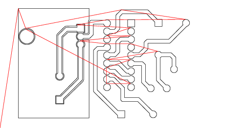

Pcb
Table of Contents
Pcb
This document is a manual for Pcb, the open source, interactive printed circuit
board layout system.
History
Pcb is a handy tool for laying out printed circuit
boards.
Pcb was first written by Thomas Nau for an Atari ST in 1990 and
ported to UNIX and X11 in 1994.
It was not intended as a professional layout system,
but as a tool which supports people who do some
home-developing of hardware.
The second release 1.2 included menus for the first time. This made
Pcb easier to use and thus a more important tool.
Release 1.3 introduced undo for highly-destructive commands,
more straightforward action handling and scalable fonts. Layer-groups
were introduced to group signal-layers together.
Release 1.4 provided support for add-on device drivers.
Two layers (the solder and the component side)
were added to support SMD elements. The handling of libraries
was also improved in 1.4.1. Support for additional devices like
GERBER plotters started in 1.4.4. The undo feature was expanded
and the redo-feature added in 1.4.5.
harry eaton took over pcb development beginning with Release 1.5,
although he contributed some code beginning with Release 1.4.3
Release 1.5 provides support for rats-nest generation from simple net
lists. It also allows for automatic clearances around pins that pierce
a polygon. A variety of other enhancements including a Gerber RS-274X
driver and NC drill file generation have also been added.
Release 1.6 provides automatic screen updates of changed regions.
This should eliminate most of the need for the redraw (R key).
Also some changes to what order items under the cursor are selected
were made for better consistency - it is no longer possible to
accidentally move a line or line point that is completely obscured
by a polygon laying over top of it. Larger objects on the upper
most layers can be selected ahead of smaller objects on lower layers.
These changes make operations more intuitive. A new mode of line
creation was added that creates two line on 45 degree angles
with a single click. The actual outline of the prospective line(s) are
now shown during line creation. An arc creation mode was added.
Drawn arcs are quarter circles and can be useful for high frequency
controlled impedance lines. (You can have eighth circle arc if the
source is compiled with -DARC45, but be aware that the ends of such
arcs can never intersect a grid point). Two new flags for pins and
vias were created - one indicates that the pin or via is purely a
drill hole and has no copper annulus. You can only toggle this flag
for vias - for elements, it must be an integral part of the element
definition. The other flag controls whether the pad will be round
or octagonal. There is also now a feature for converting the contents
of a buffer into an element.
Release 1.6.1 added the ability to make groups of action commands bound to
a single X11 event to be undone by a single undo. Also a simple design rule
checker was added - it checks for minimum spacing and overlap rules. Plus
many fixes for bugs introduced with the many changes of 1.6
Release 1.7 added support for routing tracks through polygons without touching
them. It also added support for unplated drill files, and drawing directly
on the silk layer. A Netlist window for easily working with netlist was also added.
Release 2.0 adds an auto-router, a new simpler library mechanism, much improved
support for graphically creating (and editing) elements, viewable solder-mask
layers (and editing), snap to pins and pads, netlist entry by drawing rats, element
files (and libraries) that can contain whole sub-layouts, metric grids, improved
user interface, a GNU autoconf/automake based build system, and a host
of other improvements.
Release 4.0.0 adds a IPC-D-356 netlister, relocate plugin, smartdisperse
plugin, RenumberBlock and RenumberBuffer plugin, teardrops plugin,
tooltips in the GTK UI and footprints.
Release 4.0.1 fixes a number of bugs.
Release 4.0.2 fixes a number of bugs.
Release 4.1.0 is a new features release (pcb file format change).
Release 4.1.1 fixes a number of bugs.
Release 4.1.2 fixes a number of bugs.
Release 4.1.3 fixes a number of bugs.
Release 4.2.0 is a new features release (pcb file format change).
Release 4.2.1 is a new features and bugfixes release (no pcb file format change).
Release 4.2.2 is a hot fix and bugfixes release (no pcb file format change).
Release 4.3.0 is a new features release (pcb footprint file format change).
Special thanks goes to:
Thomas Nau (who started the project and wrote the early versions).
C. Scott Ananian (who wrote the auto-router code).
Bernhard Daeubler (Bernhard.Daeubler@physik.uni-ulm.de)
Harald Daeubler (Harald.Daeubler@physik.uni-ulm.de)
DJ Delorie (djdelorie@users.sourceforge.net)
Larry Doolittle (ldoolitt@recycle.lbl.gov)
Dan McMahill (danmc@users.sourceforge.net)
Roland Merk (merk@faw.uni-ulm.de)
Erland Unruh (Erland.Unruh@malmo.trab.se)
Albert John FitzPatrick III (ajf_nylorac@acm.org)
Boerge Strand (borges@ifi.uio.no)
Andre M. Hedrick (hedrick@Astro.Dyer.Vanderbilt.Edu)
Anthony Blake (who wrote the toporouter code).
PCB Contributors:
Peter Clifton, Andrew Poelstra, Markus Hitter, Ben Jackson, Felix Ruoff,
Sergey Alyoshin, Dima Kogan, Jerome Marchand, Jean Richard, Bob Paddock,
Milan Prochac, Britton Leo Kerin, Roland Lutz, Charles Parker,
Jared Casper, Stuart Brorson, Ahmed El-Mahmoudy, Josef Wolf,
Krzysztof Kościuszkiewicz, Mike Crowe, Andrew Armenia, Jan Damborsky,
Wiley E. Hill, Sergey Stepanov, Vladimir Zhbanov, Peter Brett,
Steven Michalske, Leo Bärring, Gareth Edwards, Anton Dubniak,
Kai-Martin Knaak, Keith Packard, Patrick Bernaud, Robert Drehmel,
Erich Heinzle, Marco Ciampa, Eugene Mikhantiev, Jorge Barros de Abreu,
Richard Hughes, Eric Brombaugh, Benjamin Bergman, Braddock Gaskill,
Dan White, Alan Somers, Richard Barlow, Bdale Garbee, Stanislav Brabec,
Levente Kovacs, Ed Maste, Uwe Hermann, Ivan Stankovic, Peter S. May,
Igor2, Felix K (kuhlix), rosvall, Martin, Christian Amsüss,
Johann Klammer, Newell Jensen, Rob Spanton, Bert Timmerman.
who provided all sorts of help including porting Pcb to
several operating systems and platforms, bug fixes, library enhancement,
user interface suggestions and more. In addition to these people,
many others donated time for bug-fixing and
other important work. Some of them can be identified in the source code
files. Thanks to all of them. If you feel left out of this list, I
apologize; please send me an e-mail and I’ll try to correct the omission.
1 Overview
Pcb is an open source printed circuit board editor.
Pcb includes many professional features such as:
- Up to 16 copper layer designs by default. By changing a compile time setting, this
can be set as high as needed.
- Blind and Buried Vias
- RS-274X (Gerber) output
- NC Drill output
- Centroid (X-Y) data output
- IPC-D-356 (rev. 0) netlist data output
- Postscript and Encapsulated Postscript output
- Nelma numerical analysis package export
- GSvit numerical analysis package export
- Autorouter
- Toporouter
- Trace optimizer
- Rats nest
- Design Rule Checker (DRC)
- Connectivity verification
-
Pcb is Free Software
- Can interoperate with free schematic capture tools such as gEDA and
xcircuit
- Runs under Linux, NetBSD, Solaris, and other similar operating
systems.
- Windows version is available
2 Introduction
Each layout consists of several, mostly independent, objects. This chapter
gives an overview of the object types and their relationship to each other.
For a complete description of how to use Pcb, refer to
Getting Started.
The layout is generated on-screen on a grid that can have its origin
at any desired location.
The X coordinate increases to the right, Y increases down to the bottom.
All distances and sizes in Pcb are measured in mils
(0.001 inch). One unit on the coordinate display is one mil in
distance on the board.
The grid may be set on a metric pitch, but is only correct to within
the nearest +/- 0.01 mil because Pcb stores all dimensions as
integer multiples of 1/100 of a mil or 0.00001 inch.
The sections in this chapter are sorted by the
order of appearance of the objects within a layout file.
2.1 Header
The top object is the layout itself. It has a header with settings and
layout values. Settings and layout values include the ‘release’
number, ‘FileVersion’, ‘PCB’ name, ‘PCB’ layout main
dimensions, ‘Grid’ settings, ‘PolyArea’ setting,
‘Thermal’ setting, ‘DRC’ settings, ‘Flags’, ‘Groups’
layer stack, and routing ‘Styles’
2.2 Symbols
The layout uses a set of symbols that resides at the first logical level.
Each symbol is uniquely identified by a seven bit ASCII code.
All layout objects share the same set of symbols.
These symbols are used to form text objects on the silkscreen and copper
layers.
Undefined symbols are drawn as filled rectangles.
Every font file is preprocessed by a user-defined command when it is loaded.
For details see ‘fontCommand’, Resources.
2.3 Vias
Vias provide through-hole connectivity across all layers.
While vias look a lot like element pins, don’t use vias
for adding elements to the layout, even if that seems
easier than creating a new element. The default solder-mask
will cover over vias, so you won’t be able to solder to them.
Of course, you can change this so that vias also have
solder-mask cut-outs, but it is not the default.
Vias are also useful for defining arbitrary drill points such as
those used for mounting a board. Vias used in this way have
a special flag set so that they have no annular copper ring,
and also appear in the unplated drill file. Ctrl-H key over
a via switches it between being a pure-mounting hole and a regular via.
You can assign a name to a via, which is useful during the creation
of new element definitions.
Blind and buried vias are supported. Blind and buried vias exist only
on specified layer range. The first and last layer can be assigned using
appropriate action, menu item or keys: Ctrl-Shift-F to set active
layer as first layer, Ctrl-Shift-T to set last layer and
Ctrl-Shift-P to convert via to through-hole.
Blind and buried vias have colored half-circles drawn on top to designate
first and last layer..
2.4 Elements
Elements represent the components on a board.
Elements are loaded from ASCII coded files in a
similar manner to the layout file itself, or from the
library selector window.
An element is composed of lines and arcs on the silk-screen
layer (used to define the package outline), pins
(or pads for SMD) and three labels that define the
description, the element’s layout-name (which also
appears on the silk-screen layer) and its value. You
can choose which of the names are displayed on the screen
with the Screen menu; however, the silk screen in
the printout will always show the layout-name.
Element pins are contained on the first logical level
and so reside on all layers, but the pads of surface-mount
elements reside on only the component or solder
layers. An element can have a mixture of pins, pads
(on one or both sides), and mounting holes.
A mark is used to position the element with
respect to the cross hair during pasting.
The mark will lie on a grid point when the element
is positioned. The mark is drawn as a small diamond
shape, but is only visible when both the silk
and pins/pads layers are visible.
All parts of an element are treated as one unit, except for
the name.
It is not possible to delete a single pin or move
only part of an element on the layout.
You can resize separate pieces of an element,
but doing so is usually a bad idea. You can move/rotate
the element name independently of the element it belongs
to. When you move an element name, a line is draw from
the cursor to the element mark so it is easy to tell
which element the name belongs to.
Each pin and pad has two string identifiers, one is the
"name" which is a functional description of the pin
(e.g. "clock in") and the other is the "number" of the
pin which is used to identify it in a netlist. The "number"
is usually an integer, but it can be any string. You
can edit the "name" of each pin of an element, but the
"number" is embedded in the element definition and is
determined when the new element is first created.
Pads are similar to lines on a layer but they must be oriented
either vertically or horizontally.
Pads can have either rounded or square ends. Pins
can be round, square, or octagonal.
Elements are supported by several special layers: silk, pins/pads and
far-side. The silk layer shows the package outline and
also holds legend text and element names. The pins/pads layer is used to toggle
whether the element’s pins and pads are displayed. The far-side layer controls visibility
of objects (silkscreen and pads) that are on the far (i.e. not currently viewed) side
of the board.
The “oldlib” style of footprint libraries distributed with
Pcb rely upon the M4 macro processor. M4 is typically
installed under the name m4 on most unix-like operating
systems. It is recommended that you use the GNU version of M4 to
avoid limitations found in some vendor implementations. See the m4
man page on your system for more information.
Every element file is preprocessed by a user-defined command when the file is read.
For details see ‘elementCommand’, Resources. m4, the default
value of ‘elementCommand’, allows you to create libraries for
package definitions that are shared by all elements.
The old element libraries distributed with Pcb expect m4 or an
equivalent to be the elementCommand. The new library scheme simply has
each element stored in a self-contained file, so there is no need to learn
m4 to add to the libraries.
Pcb can create a list of
all connections from one (or all) elements to the others or a list of
unconnected pins.
It can also verify the layout connections against a netlist file.
The element’s ‘layout-name’ is the name used to identify the element
in a netlist file (see Netlist File).
The old libraries, or very old (pre-1.6) layout files may have
incorrect pin numbering since there was no concept of pin numbers
when they were created. Pcb uses the order of appearance of
the pin definitions in the layout or library file if it uses the
old format, but there is no guarantee that it will be correct for
these old objects.
Be aware that a few of the old library parts may still be incorrectly
implemented regarding pin-numbering. All of the DIL (Dual-
Inline-Pins) parts are correct and most of the others are too,
but you should verify the pin numbering
of any non-DIL part before using an old library part.
(use the ‘generate object report’ in the Info menu
to see what Pcb thinks a pin’s number is)
All of the old
library names begin with a ~, so you can easily identify them.
The old libraries also may contain other sorts of errors,
including incorrect pin spacing, silkscreen overlapping solder areas, etc.
Check carefully any element in the old library before using it!
As the new library grows, the old library will be pared down to
at least remove all of the elements with errors, but this will
take time.
You can make your own element definitions graphically now.
Simply draw vias for the pins, lines on the solder and/or
component layers for surface-mount pads (they must be either horizontal
or vertical),
and lines and arcs on the silkscreen layer for the silkscreen
outline. You should name (N key) each via and copper line with the pin number.
Once you are happy with the geometry, select everything that is to become part of
the element, then choose ‘convert selection to element’ from the Select menu.
Afterwords you can make pin (or pad) one
square if you like, and give the element its various names. You can also give
the pins and pads their functional names. Note that the
element mark corresponds to the position you click after choosing the
conversion from the menu, so decide where the mark goes and make
sure it falls on a grid point before you request the conversion.
If the vias/lines are not named, then the pin numbering will correspond to the
order in which they were placed.
When you create a new element, remember that silkscreen lines
should never overlap the copper part of the
pins or pads, as this can interfere with soldering. The silkscreen
should identify the maximum extent of the element package so it
is easy to see how close elements can be placed together.
If you want to make an element similar to an existing one, you can
break an element into constituent pieces from the Buffer menu.
Paste the pieces to the layout, make the necessary changes, then
convert it back into an element. If the pin numbers haven’t changed,
there is no need to name each via/line as they are pre-named when
the element was broken apart. When you create a new element, you
can save it to a file in order to have easy access to it the next
time you run Pcb.
2.5 Layers
Every layout consists of several layers that can be used independently
or treated as a group.
Layer groups can be used to logically separate (and color-code)
different traces (e.g. power and signal); however, all
layers within a group reside on the same physical
copper layer of a board, so using different layers within the same
group won’t provide electrical separation where they touch or overlap.
For details, see ‘layerGroups’, Resources.
Each layer is drawn in a color defined in the resource file
and identified by a name that you can change (for details
see ‘layerColor’, Resources.)
Layers are really just containers for line, arc, polygon, and text objects. The
component and solder layers contain SMD elements as well, but the
file structure doesn’t reflect that fact directly.
Each layer group
represents a physical layer on the printed circuit board. If you want to make
a four layer board, you’ll need to have at least four layer groups.
Connections between layer groups are established only through element pins and vias.
The relationship between a specific layer and the board itself is configurable from
the ‘Edit layer groups’ option in the Settings menu.
The layer groups corresponding to the physical layers: component-side
and solder-side are always defined and you must map at least one
logical layer to each, even if you plan to make a single-sided board.
You are not obligated to put tracks on either of them.
Surface mount elements always reside on either the component-side or the
solder-side layer group. When you paste an element from the buffer,
it will go onto whichever side of the board you are viewing.
You can swap which side of the board you are viewing by pressing
the Tab key, or by selecting ‘view solder side’ from the
Screen menu.
The layer groups just have a name or number associated with them - where
they are sandwiched in the board is left for you to tell the
manufacturer.
The silkscreen layer is special because there are actually two silkscreen
layers, one for the top (component) and one for the bottom (solder) side
of the board. Which silk layer you draw on is determined by the side of the
board that you are viewing. If you are viewing the component side, then
drawing on the silk layer draws to the component-side silk layer.
The netlist layer is another special layer. It shows rat’s-nest lines
(i.e. guides that show how the netlist expects the element to interconnect).
If you make this the active layer, you can use the Line tool to add
entries into the netlist, or to delete connections from the netlist
window. Except for these two purposes, you should not
make the netlist layer the active layer. Usually there is no need to
do this because a separate schematic package should be used to create the
netlist. Pcb can automatically draw all of the rats from
the netlist. In some cases you may want to make a small change without
going to the trouble of modifying the schematic, which is why this
facility is provided.
2.6 Lines
Lines are used to draw tracks on the pc board.
When in the line mode, each Btn1
press establishes one end of a line.
Once the second point is defined, the line is drawn
and a new line started where the first one ended.
You can abandon the new starting point in favor
of another by pressing Ctrl-Btn1, or
Btn3, but don’t use Btn2.
The undo function (U key or ‘Undo’
from the Edit menu) will take you back
point by point if you use it while in the line mode.
New lines can be restricted to 45 degree angles if desired. You can toggle this
restriction on and off while creating lines by pressing the period key.
If the 45 degree restriction is turned on, then the / (forward slash) key
can be used to cycle through three different modes of 45 degree line creation.
One mode just creates a single line forced to the nearest 45 degree vector. The next
mode creates two lines from the start to end points such that the first line leaves the
start point at a 90 degree vector, and the second line enters the end point on a 45
degree vector. The last mode creates two lines such that the first line leaves the
start point on a 45 degree vector and arrives at the end point on a 90 degree vector.
You can temporarily swap between the last two modes by holding the Shift key down.
It is simple to edit a line object by breaking it into pieces (insert point mode),
moving an end point or the whole line (Arrow tool),
or changing the layer it resides on (M key moves the line under the pointer
to the active layer).
In the case when two line segments meet at exactly the same
point you can delete the intermediate point, otherwise the delete tool removes an entire line.
Feel free to experiment
since Pcb will allow you to undo and redo anything that materially affects your work.
If you switch active layers in the midst of placing lines a via will automatically be
placed, when necessary, in order to continue the connection. The via can be through-hole via or
buried/blind via; the via type is controlled by option Auto buried vias.
If you draw a line inside a polygon, it will either plow through the
polygon creating a clearance, or touch the polygon. This behavior is
selectable in the Settings menu for new lines. To change the
behavior of an existing line, hit the J key with the cross hair
over the line. You can increase the size of the clearance by 2 mils on
each edge with the
K key. Shift-K will decrease the clearance by 2 mils.
The increment may be changed from 2 mils through the application
resource file.
The clearance can be also increased, decreased and set
by the ChangeClearSize action.
Lines do not need to intersect the center of a pin, pad, via, or other
line for Pcb to understand that they make electrical connection.
If the connection is too tenuous, running the design rule checker will report
that the connection may break if the line width shrinks slightly.
2.7 Arcs
Pcb can handle arcs of any angular extent, but when you
create an arc with the Arc tool, it will
be a quarter circle (this means they always bend a right angle). Arcs are very similar
to lines otherwise. They are created on the active layer and have the same thickness
that new lines will have. The various clicks for creating lines work pretty much the
same way for creating arcs.
In order to make the arc curve in the desired direction, drag the mouse along
the tangent line from the starting position towards the end position. If the grid is
too coarse, it may not be possible to distinguish whether you’ve moved over then up,
or up then over, so if you can’t seem to make the arc go in the direction you want, try pressing
the Shift key while drawing the arc. Decreasing the grid spacing may also help.
Alternatively you can draw the wrong arc, then
rotate and move it where you want. Like the Line tool, after an arc is drawn a new
starting point is established at the end point.
Whenever a starting point is established
by either the Line or Arc tools it will be retained if you switch directly between the
tools (e.g. F2 key for Lines, F8 key for Arcs). Arcs can either touch or
clear polygons just like lines do. Of course connection
searches, undo and all the other features you’d expect work with arcs too.
2.8 Polygons
Sometimes it’s useful to fill large areas with solid copper.
The way to do this is with polygons.
Polygons can be created in either the polygon mode or the rectangle mode.
In the polygon mode, you’ll have to define each corner of the polygon
with a mouse click (Btn1). When the last point is clicked
exactly on top of the starting point, the polygon is finished.
Since this can be hard to do, the Shift-P key will enter the
final point for you, closing the polygon.
If the 45 degree angle restriction is turned on
and you try to close the polygon when it is not possible, you’ll get a
warning instead. If you haven’t finished entering a polygon, but want to
undo one (or more) of the points that you’ve already defined, use the
undo command (U key).
With the rectangle tool, defining
the two diagonally opposite corners is sufficient, but of course the resulting
polygon is a rectangle.
Like lines, a polygon can by edited by deleting, inserting and moving the points
that define it. Pins and vias always clear through polygons without
touching them when first positioned. You must add a thermal with the thermal
tool in order to connect pins and vias to polygons. Thermals can be added and removed by
clicking Btn1 with the thermal tool over the pin or via.
The thermal tool always
places a thermal to polygons on the active layer, so if the tool doesn’t
seem to work, it’s probably because the polygon you want to touch is not
on the active layer. You can change the style of thermal used or make
a solid connection by holding down Shift while clicking
Btn1 with the thermal tool over the pin or via.
Pcb is capable of handling complex polygons, but
using a number of simpler ones improves performance of the connection tracing code.
You also must be careful not to create polygons that touch or overlap themselves.
The fabricated board may not look the way you expect if you violate this
principle. It is always ok to have two (or more) polygons touch or overlap
each other, but not for points within the same polygon to do so.
The great advantage to this new polygon behavior is that simple or complex ground
and/or power planes can be easily made with polygons and seen on the screen.
If you don’t want this auto-clearance behavior, or you load a layout created by
an early version of Pcb, the old behavior
(shorts to all piercing pins and vias) is available. A ‘ChangeSize’
operation (S key) toggles a polygon between the new and old polygon/pin
behavior.
2.9 Text
Text objects should be used to label a layout or to put additional
information on the board. Elements have their ‘layout-name’ labels on the
silk-screen layer. If you are making a board without a silkscreen,
you can use copper text to label the elements, but you have to do
this manually.
Text is always horizontal when first created, but the
rotate mode can align it along 0, 90, 180 and 270 degree angles.
Text on the far side of the board will automatically appear mirror-imaged.
Warning: TEXT OBJECTS ON A COPPER LAYER CREATE COPPER LINES BUT THEY ARE NOT SCANNED FOR
CONNECTIONS OR TESTED FOR CREATING SHORTS VS. THE NETLIST. NEITHER ARE TEXT OBJECTS TESTED AGAINST ANY DESIGN RULES.
2.10 Nets
Layout files also contain the netlist that describes how the elements
are supposed to be interconnected. This list of connections can be
loaded from a netlist file (see Netlist File), or
entered by drawing rat-lines as described
previously. Each net has a name and routing style associated with it.
The net contains a list of all element layout-name names and
pin numbers that should
be connected to the net. Loading a netlist file will replace all
existing nets with the ones from the file.
The Netlist window provides an easy way to
browse through the net list. You can display the rat’s-nest by selecting
‘optimize rats-nest’ from the Connects menu. If you move or rotate elements,
the rat’s-nest will automatically follow the movements, but they won’t
necessarily show the shortest paths until you optimize them again.
3 Getting Started
The goal of this chapter is to give you enough information to learn how
Pcb works and how to develop your layouts to make the best use of Pcb’s
features. All event translations (i.e. the buttons and keys you
press) refer to the default application resource file shipped with Pcb.
There is probably no need to change this unless your window
manager uses some of the button events itself; however, if you want
to customize the behavior of Pcb then changing the resource file
is usually the best way to do it.
Get yourself a printout of this chapter and User Commands, if you
haven’t already done so, and follow the examples.
Start Pcb (the actual command will use all lower-case letters)
without any additional options.
If you get the error message:
can’t find default font-symbol-file ’default_font’
then the font searchpath or filename in the application resource
file is wrong. Be sure that your m4 program supports search paths.
If not, get GNU m4.
For other messages, see Trouble Shooting.
Another quick-start is provided by pcbtest.sh in the src
directory. If some features don’t seem to work, try running pcbtest.sh,
if that works, then Pcb hasn’t been installed properly.
3.1 The Application Window
The main window consists of five areas:
the menu at the top, the layer control in the upper left, the tool buttons
located below the layer controls, the Layout area to the right of these, and the
status line at the bottom of the window.
3.1.1 Menus
The menus are located at the top of the Layout area. Most, but not all,
of their functions are also available from the keyboard. Similarly, some
functions are only achievable through the keyboard or command entry.
Some menu entries such as ‘center layout’ in the Screen menu require a certain cross hair position.
In this case a prompt message will popup at the bottom of the screen
with wording similar to the following:
move pointer to the appropriate screen position and press a button
Any mouse button will do the job, whereas any key except the arrow (cursor) keys
will cancel the operation. If it seems like the menu hasn’t done what you
expected, check to see if it is waiting for the position click. For details see Actions.
Pressing Btn3 in the Layout area also pops up a menu with many of the most common operations (except
when you’re in the midst of drawing a line or arc). When
a choice in the Btn3 popup menu needs a cross hair position, it uses the position
where the cross hair was when Btn3 was pressed. For example, to get detailed
information on an object, place the cross hair over the object, press Btn3, then
choose ‘object report’. If you pop up the Btn3 menu but don’t want to
take any of the actions, click on one of the headers in the menu.
-
- File
This menu offers a choice of loading, saving and printing data, saving
connection information to a file or quitting the application. Most
of the entries in the File menu are self explanatory.
Selecting
‘Print...’ pops up a printer control dialog.
Several output formats are available from the ‘Export...’ menu item.
Presently PostScript, encapsulated PostScript,
and GerberX are some of the supported filetypes.
The GerberX driver produces
all of the files necessary to have the board professionally manufactured.
The connection saving features in the File menu produce outputs in an
arcane format that is not too useful. They do not produce netlist
files.
- Edit
The Edit menu provides the usual cut, copy, paste
which work on selections. To learn how to
create complex selections, see Arrow Tool.
The Edit menu also
provides access to Undo and Redo of the last operation. These
can also be accomplished with the U key and Shift-R
key. Finally, the Edit menu allows you to change the names
of: the layout, the active layer, or text objects on the layout.
- Routes Style
The Edit menu allows you to select a group of line thickness, via diameter, via drill
size, and clearance (keepaway) (collectively called a "routing style") to be copied to the "active" sizes.
You can also change the names given to the routing styles and adjust their values from
this menu. The "active" sizes are also adjustable from this menu.
The "active" sizes are shown in the status-line and control the initial size of new vias,
drilling holes, lines, clearances, text-objects and also the maximum dimensions of the
board layout.
- View
The View menu supports most functions related to
the whole Layout area. There are various entries to change the grid to some popular
values, the zoom factor, and which kind of element name is displayed.
You can also re-align the grid origin and turn on and off the display
of the grid.
Before changing the grid alignment, I recommend that you zoom in as close as
possible so that you’re sure the grid
points appear exactly where you want them.
The View menu also allows you to turn on and off the
visibility of the solder-mask layer. When the solder-mask layer
is made visible it obscures most of the layout, so only turn
this on when you really want to know what the solder-mask will
look like. The solder-mask that you see belongs to the
side of the board you are viewing, which can be changed with
the ‘Flip up/down’ option, also found in the View menu.
When the solder-mask is displayed, the pin and pad clearance adjustments
(see Line Objects) alter the size of mask cut-outs.
- Settings
The Settings menu controls several operating configuration
parameters. The ‘all-direction lines’ entry controls
the clipping of lines to 45-degree angles. You can also control
whether moving individual objects causes the attached lines to
"rubber band" with the move or not from the Settings menu. Another
entry controls whether the starting clip angle for the two-line
mode (see Line Objects) alternates every other line. You can
also control whether element names must be unique from the Settings
menu. When unique element names are enforced, copying a new element
will automatically create a unique ‘layout-name’ name for it
provided that the name originally ended with a digit (e.g.
U7 or R6). The Settings menu allows you to control
whether the cross hair will snap to pins and pads even when they
are off-grid. Finally you can control whether new lines and
arcs touch or clear intersecting polygons from this menu.
- Select
This menu covers most of the operations that work with selected objects.
You may either (un)select all visible objects on a layout or only the ones
which have been found by the last connection scan see
.
You can delete all selected objects from this menu.
Other entries in the Select menu change the sizes of selected objects.
Note that a select action only affects those objects that are
selected and have their visibility turned on in the Layer Control
panel. The Select menu also provides a means for selecting objects
by name using unix Regular Expressions.
- Buffer
From the Buffer menu you may select one out of five
buffers to use, rotate or clear its contents or save the buffer contents
to a file. You can also use the ‘break buffer elements to pieces’ entry
to de-compose an element into pieces for editing.
Note: only objects with visibility turned on are pasted to the layout. If
you have something in a buffer, then change which side of the board you
are viewing, the contents of the buffer will automatically be mirrored
for pasting on the side you are viewing. It is not necessary to clear
a buffer before cutting or copying something into it - it will automatically
be cleared first.
- Connects
The entries available through the Connects menu allow you to find
connections from objects and to manipulate these.
You can also optimize or erase rat’s nests from this menu. Finally,
the ‘auto-route all rats’ entry allows you to auto-route
all connections show by the rat’s nest. The auto-router will use
any visible copper layer for routing, so turn off the visibility of any
layers you don’t want it to use. The auto-router will automatically
understand and avoid any traces that are already on the board, but
it is not restricted to the grid. Finally,
the auto-router routes using the active sizes (except for nets that
have a route-style defined). Pcb always knows which tracks
were routed by the auto-router, and you can selectively remove them
without fear of changing tracks that you have manually routed
with the ‘rip-up all auto-routed tracks’ entry in the Connects
menu. The ‘design rule checker’ entry runs a check for copper
areas that are too close together, or connections that touch too
tenuously for reliable production. The DRC stops when the first
problem is encountered so after fixing a problem be sure to
run it again until no problems are found.
Warning: COPPER TEXT IS IGNORED BY THE DRC CHECKER.
- Info
The ‘generate object report’ entry from the Info menu
provides a way to get detailed information
about an object, such as its coordinates, dimensions, etc.
You can also get a report summarizing all of the drills
used on the board with ‘generate drill summary’. Lastly,
you can get a list of all pins, pads and vias that were
found during a connection search.
- Window
The Window menu provides a way to bring each of Pcb's
windows to the front. The Library window is used to
bring elements from the library into the paste-buffer. The
Message Log window holds the various messages that
Pcb sends to the user. The Netlist window shows
the list of connections desired.
Now that you’re familiar with the various menus, it’s time
to try some things out. From the File menu choose
‘Open...’, navigate to the tutorial folder, then
load the file ‘tut1.pcb’.
3.1.2 The Status-line and Input-field
The status-line is located at the bottom edge of the main window.
During normal operation the status information is visible there.
When a selected menu operation requires an additional button click, the
status-line is replaced by a message telling you to position the cursor
and click.
When a text input is required, the status-line is replaced by the
Input-field which has a prompt for typing the input.
The status-line shows, from left to right, the side of the board that you
are viewing (Tab key changes this), the current grid values,
if new lines are restricted to 45 degrees,
which type of 45 degree line mode is active, whether rubberband move and
rotate mode is on (R), and the zoom factor.
This information is followed by the active line-width, via-size
and drilling hole, keepaway spacing, and text scaling. Last is the active buffer number and the
name of the layout. An asterisk appearing at the far left indicates that the
layout has been modified since the last save.
Note that the name of the layout is not the same
thing as the filename of the layout.
Change the grid factor to 1.0 mm from the Screen menu. Observe how the
status line shows the new grid setting. Except for the case of the metric
grid, all dimensions in the status line are in units of 0.001 inch (1 mil).
The input-field pops up (temporarily replacing the status-line) whenever user input
is required. Two keys are bound to the input field: the Escape key
aborts the input, Return accepts it. Let’s change the name of a component
on the board to see how the input-field works. Position the cross hair over
R5, and press the N key. The input field pops-up showing the name
for you to edit. Go ahead and change the name, then hit return. Notice the name
of the element changed. Now undo the change by pressing the U key. You can
position the cross hair over the name, or the element before pressing the
N key.
Now select ‘realign grid’ from the Screen menu. Notice that the
status line has been replaced with an instruction to position the cursor
where you want a grid point to fall. In this case, since the cross hair
can only fall on a grid point, you must move the tip of the finger cursor
to the place where you want a grid point to appear. Do not worry that
the cross hair is not coincident with the cursor. Click Btn1 at
your chosen location. See how the grid has shifted, and the status line
has returned.
The present cross hair position is displayed in the upper right corner of the window.
Normally this position is an absolute coordinate, but you can anchor a marker at
the cross hair location by pressing Ctrl-M (try it now) and then the
display will read both the absolute cross hair position as well as the difference
between it and the marker. The numbers enclosed in < > are the X and Y distances
between the cross hair and the mark, while the numbers enclosed in parenthesis
are the distance and angle from the mark to the cross hair. The values displayed
are always in units of 0.001 inch (1 mil).
Pressing Ctrl-M again turns the marker off.
3.1.3 The Layer Controls
The layer control panel, located in the upper left, is used to turn on
and off the display of layer groups and to select the active drawing layer.
If a layer hasn’t been named, the label "(unknown)" is used as the default.
If this happens, it probably means the application resources are not installed
properly.
The upper buttons are used to switch layers on and off. Click
<Btn1> on one or more of them. Each click toggles the setting.
If you turn off the currently active layer, another one that is visible
will become active. If there are no others visible, you will not be
able to turn off the active layer.
When the layers are grouped, clicking on these buttons will toggle
the visibility of all layers in the same group. This is a good idea because
layers in the same group reside on the same physical layer of
the actual board. Notice that this example has 2 groups each having
3 layers, plus two other layers named ‘unused’.
Use the ‘Edit layer groups’ option in the ‘Settings’ menu to
change the layer groupings in the lesstif GUI or the ‘Preferences’
dialog from the ‘File’ menu in the GTK+ GUI. Note that changing the
groupings can radically alter the connectivity on the board.
Grouping layers is only useful for helping you to color-code
signals in your layout. Note that grouping layers actually reduces the number
of different physical layers available for your board, so to make an eight
layer board, you cannot group any layers.
The far side button turns on and off the visibility of elements
(including SMD pads) on the opposite (to the side you’re viewing)
board side, as well as silk screening on that side. It does not
hide the x-ray view of the other copper layers, these must be turned off
separately if desired. Use the tab key to view the entire board from the other
side. To see a view of what the back side of the board will actually look like,
make the solder layer the active layer then press tab until the status
line says "solder" on the right, then turn off the visibility of all layers
except solder, pins/pads, vias, and silk. Now turn them all back on.
The lowest button, named active, is used to change the active
drawing layer. Pressing <Btn1> on it pops up a menu to select which
layer should be active.
Each entry is labeled with the layer’s name and drawn in its color.
The active layer is automatically made visible. The active layer is
always drawn on top of the other layers, so the ordering of layers
on the screen does not generally reflect the ordering of the manufactured
board. Only the solder, component, silkscreen, and solder-mask layers
are always drawn in their physical order. Bringing the active layer
to the top makes it easier to select and change objects on the active layer.
Try changing the active layer’s name to ABC by selecting
‘edit name of active layer’ from the ‘Edit’ menu.
Changing the active layer can also be done by pressing keys
1..MAX_LAYER.
Turn off the visibility of the component layer.
Now make the component layer the active layer. Notice that it
automatically became visible. Try setting a few
other layers as the active layer. You should also experiment
with turning on and off each of the layers to see what happens.
The netlist layer is a special layer for adding connections to
the netlist by drawing rat lines. This is not the recommended
way to add to the netlist, but occasionally may be convenient.
To learn how to use the netlist layer see Net Objects.
3.1.4 The Tool Selectors
The tool selector buttons reside below the layer controls.
They are used to select which layout tool to use in the drawing
area. Each tool performs its function when Btn1 is pressed.
Every tool gives the cursor a unique shape that identifies it.
The tool selector buttons themselves are icons that illustrate their function.
Each layout tool can also be selected from the keyboard:
F1 key Via tool
F2 key Line tool
F3 key Arc tool
F4 key Text tool
F5 key Rectangle tool
F6 key Polygon tool
F7 key Buffer tool
F8 key Delete tool
F9 key Rotate tool
Insert key Insert-point tool
F10 key Thermal tool
F11 key Arrow tool
F12 key Lock tool
Some of the tools are very simple, such as the Via tool. Clicking
Btn1 with the Via tool creates a via at the cross hair position.
The via will have the diameter and drill sizes that are active,
as shown in the status line.
The Buffer tool is similar. With it, <Btn1> copies
the contents of the active buffer to the layout, but only
those parts that reside on visible layers are copied.
The Rotate tool allows you to rotate elements, arcs, and text objects
90 degrees counter-clockwise with each click. Holding the Shift
key down changes the Rotate tool to clockwise operation.
Anything including groups of objects
can be rotated inside a buffer using the rotate buffer menu option.
The Line tool is explained in detail in Line Objects. Go read
that section if you haven’t already.
Activate the Line tool. Set the active layer to the solder layer.
Try drawing some lines. Use the U key to undo some of the
lines you just created. Zoom in a bit closer with the Z key.
Draw some more lines. Be sure to draw some separate lines by starting
a new anchor point with Ctrl-Btn1. Change the ‘crosshair snaps to pin/pads’
behavior in the Settings menu. Now draw a line. Notice that
the new line points must now always be on a grid point. It might not
be able to reach some pins or pads with this setting. Increase the active line thickness
by pressing the L key. Note that the status line updates
to reflect the new active line thickness. Now draw another line. Before completing the
next line, make the component layer active by pressing the 4 key.
Now finish the line. Notice that a via was automatically placed where
you switched layers. Pcb does not do any checks to make sure that
the via could safely be placed there. Neither does it interfere with
your desire to place lines haphazardly. It is up to you to place
things properly when doing manual routing with the Line tool.
The Arc tool is explained in detail in Arc Objects. Its
use is very similar to the Line tool.
The Rectangle tool, Polygon tool and Thermal tool are explained in detail in
Polygon Objects. Go read that section.
Remember that the Thermal tool will only create and destroy thermals
to polygons on the active layer. Use the Rectangle tool to make a
small copper plane on the component layer. Now place a via in the
middle of the plane. Notice that it does not touch the plane, and
they are not electrically connected. Use the Thermal tool to make
the via connect to the plane. Thermals allow the via or pin to
be heated by a soldering iron without having to heat the entire
plane. If solid connections were made to the plane, it could be
nearly impossible to solder. Shift-click on the via with the Thermal
tool to change the style of thermal used or to make the connection
solid. Click on the via again with the Thermal tool to remove the
connection to the plane.
The Insert-point tool is an editing tool that allows you to add
points into lines and polygons. The
Insert-point tool enforces the 45 degree line
rule. You can force only the shorter line segment to 45
degrees by holding the Shift key down while inserting the point.
Try adding a point into one of the lines you created. Since line
clipping is turned on, you may need to move the cross hair quite far
from the point where you first clicked on the line. Turn off the
line clipping by selecting ‘all-direction lines’ from the
Settings menu (or hit
the Period key). Now you can place an inserted point anywhere.
Try adding a point to the rectangle you made earlier. Start by clicking
somewhere along an edge of the rectangle, then move the pointer to
a new location and click again.
The delete-mode deletes the object beneath the cursor with each
Btn1 click.
If you click at an end-point that two lines have in common, it will replace the two lines with a single line
spanning the two remaining points. This can be used to delete an "inserted"
point in a line, restoring the previous line. Now delete one of the original corner
points of the polygon you were just playing with. To do this, place the cross hair over the
corner and click on it with the Delete tool. You could also use the Backspace key
if some other tool is active. Try deleting some of
the lines and intermediate points that you created earlier. Use undo
repeatedly to undo all the changes that you’ve made. Use redo
a few times to see what happens. Now add a new line. Notice that
you can no longer use redo since the layout has changed since
the last undo happened. The undo/redo tree is always pruned in this
way (i.e. it has a root, but no branches).
The Arrow tool is so important, it has its own section: Arrow Tool.
Go read it now.
The Lock tool allows you to lock objects on the layout. When an object
is locked, it can’t be selected, moved, rotated, or resized. This is
useful for very large objects like ground planes, or board-outlines that
are defined as an element. With such large objects, nearly anywhere you
click with the Arrow tool will be on the large object, so it could be
hard to draw box selections. If you lock an object, the Arrow tool will
behave as if it didn’t exist. You cannot unlock an object with undo.
You must click on it again with the Lock tool. If an object is locked,
previous changes to it cannot be undone either. When you lock
an object, a report message about it is popped up and will always tell
you what object it is, and that it is locked if you just locked it.
Other than noticing your inability to manipulate something, the only
way to tell an object is locked is with a report from the Info
menu. Use the Lock tool sparingly.
3.1.5 Layout Area
The layout area is where you see the layout. The cursor shape depends
on the active tool when the pointer is moved into the layout area.
A cross hair follows the mouse pointer with respect to the grid setting.
Select a new grid from the Screen menu.
The new value is updated in the status line.
A different way to change the grid is
Shift<Key>g to decrease or <Key>g to increase
it, but this only works for English (integer mil) grids.
The grid setting is saved along with the data when you save a pcb layout.
For homemade layouts a value around 50 is a good setting.
The cursor can also be moved in the layout area with the cursor (arrow) keys or, for larger
distances, by pressing the Shift modifier together with a cursor key.
3.2 Log Window
This optional window is used to display all kind of messages including
the ones written to stderr by external commands. The main advantage
of using it is
that its contents are saved in a scrolling list until the
program exits. Disabling this feature by setting the resource
useLogWindow to false will generate popup windows to display
messages. The stderr of external commands will appear on Pcbs
stderr which normally is the parent shell. I suggest you iconify
the log window after startup for example by setting *log.iconic to
true in the resource file. If raiseLogWindow is set true,
the window will deiconify and raise itself whenever new messages are to be
displayed.
3.3 Library Window
The library window makes loading elements (or even partial layouts) easy.
Just click the appropriate library from the list on the left. A list
of its elements then appears on the right. Select an element
from the list by clicking on its description. Selecting an element from the
library will also automatically copy the element into
the active buffer, then invoke the Buffer tool so
you can paste it to the layout. Elements in the old library should be
taken with a grain of salt (i.e. check them carefully before
using). The old library names all begin with ~ so you can easily distinguish between
the old and new libraries. All of the elements in the new library
should be thoroughly vetted, so you
can use them with confidence. The new libraries are stored simply
as directories full of element files, so making additions to the
new library is easy since there is no need to learn m4.
For details on the old libraries,
check-out Library File and Library Contents File. For
details on the format of an element file used for the new libraries,
see Element File.
3.4 Netlist Window
The netlist window is very similar to the library window. On the left
is a list of all of the nets, on the right is the list of connections
belonging to the chosen net. The chosen net is highlighted in the
list and also shown on the second line of the window in red. If the
net name has a star to the left of it then it is "disabled". A disabled
net is treated as if it were not in the net list. This is useful, for
example, if you plan to use a ground plane and don’t want the ground
net showing up in the rat’s nest. You can enable/disable individual
nets by double-clicking the net name. If you want to enable or disable
all nets at once, there are two buttons at the top of the netlist
window for this purpose.
The button labeled ‘Sel Net On Layout’
can be used to select (on the layout) everything that is connected
(or is supposed to be connected) to the net. If you click on a
connection in the connection list, it will select/deselect
the corresponding pin or pad in the layout and also center the layout
window where it is located. If you "Find" (‘lookup connection’ in the Connects menu [also F key]), a pin
or pad it will also choose the net and connection in the netlist window
if it exists in the netlist.
If no netlist exists for the layout, then the netlist window does not
appear. You can load a netlist from a file from the File menu. The
format for netlist files is described in Netlist File.
3.5 Drawing and Removing Basic Objects
hace begging gutting here, and do a real-world tutorial example.
There are several ways of creating new objects: you can draw them yourself,
you can copy an existing object (or selection), or you can load an element from a file or
from the Library window. Each type of object has a particular tool for creating it.
The active tool can be selected from the tool selectors in the bottom
left corner or by one of the function keys listed earlier in this chapter.
Each <Btn1> press with the tool tells the application to create
or change the appropriate object or at least take
the first step to do so. Each tools causes the cursor to take
on a unique shape and also causes the corresponding
tool selector button to be highlighted. You can use either cue
to see which tool is active.
Insert mode provides the capability of inserting new points into existing
polygons or lines. The 45 degree line clipping is now enforced when selected.
Press and hold the shift key while positioning the new point to only clip
the line segment to the nearer of the two existing points to 45 degrees.
You can also toggle the 45-degree clipping in the middle of a point
insertion by pressing the <Key>.
If the shift key is not depressed and the 45 degree line clipping mode
is on, both new line segments must be on 45 degree angles - greatly
restricting where the new point may be placed. In some cases this can cause
confusion as to whether an insertion has been started since the two new
lines may be forced to lie parallel on top of the original line until the
pointer is moved far from the end points.
Removing objects, changing their size or moving them only applies to objects
that are visible when the command is executed.
3.5.1 Common Drawing and Removing Methods
There are several keystrokes and button events referring to an object
without identifying its type. Here’s a list of them:
<Btn1> creates (or deletes) an object depending on the
current mode.
<Key>BackSpace or <Key>Delete removes the visible
object at the cursor location. When more than one object exists at the
location, the order of removal is: via, line, text, polygon and
element. The drawn layer order also affects the search - whatever is
top - most (except elements) is affected before lower items. Basically
all this means that what is removed is probably just what you expect.
If for some reason it isn’t, undo and try again.
Only one object is removed for each keystroke. If two or more
of the same type match, the newest one is removed.
Use <Key>s and Shift<Key>s to change the size (width)
of lines, arcs, text objects, pins, pads and vias, or to toggle the style
of polygons (whether pins and vias automatically have clearances).
<Key>n changes the name of pins, pads, vias, the
string of a text object, or the currently displayed label of an element.
<Key>m moves the line, arc, or polygon under the cross hair to the
active layer if it wasn’t on that layer already.
<Key>u (undo) recovers from an unlimited number of operations
such as creating, removing, moving, copying, selecting etc. It works like
you’d expect even if you’re in the midst of creating something.
Shift<Key>r restores the last undone operation provided no other
changes have been made since the undo was performed.
<Key>tab changes the board side you are viewing.
For a complete list of keystrokes and button events see Translations.
3.5.2 Lines
To draw new lines you have to be in line-mode. Get there either by
selecting it from the Tool palette or by pressing <Key>F2.
Each successive notify event creates a new line. The
adjustment to 45 degree lines is done automatically if it is selected from the
Display menu. You can toggle the 45 degree mode setting by
pressing the <Key>. (That is the period key). When 45 degree enforcement
is turned on there are three distinct modes of line creation: a single
line on the closest 45 degree vector towards the cross hair (but not necessarily
actually ending at the cross hair), two lines created such that the first leaves
the start point on a 90 degree vector and the second arrives at the cross hair
on a 45 degree vector, and finally two lines created such that the first leaves
the start point on a 45 degree vector and the second arrives at the cross hair
on a 90 degree vector. These last two modes always connect all the way from
the start and end points, and all lines have angles in 45 degree multiples.
The <Key>/ cycles through the three modes. The status line shows a
text icon to indicate which of the modes is active and the lines following
the cross hair motion show the outline of the line(s) that will actually be created.
Press <Key>Escape to leave line-mode.
<Key>l, Shift<Key>l and the entries in the
Sizes menu change the initial width of new lines. This width is also
displayed in the status line.
3.5.3 Arcs
An Arc is drawn with the arc-tool. Get there either by selecting it
from the Tool palette or by pressing <Key>F8. Press Btn1 to
define the starting point for the arc. Drag the mouse towards the desired
end point along the path you want the arc to follow. The outline of the arc that
will be created is shown on the screen as you move the mouse. Arcs are always
forced to be 90 degrees and have symmetrical length and width ( i.e. they are
a quarter circle). The next Btn1 click creates the arc. It will have
the same width as new lines (displayed in the status line) and appear on the
active layer. The arc leaves the starting point towards the cross hair along
the axis whose distance from the cross hair is largest. Normally this means that
if you drag along the path you want the arc to follow, you’ll get what you
want. If the grid is set to the arc radius, then the two distances will be
equal and you won’t be able to get all of the possible directions. If this
is thwarting your desires, reduce the grid spacing (!Shift<Key>G) and
try again.
3.5.4 Polygons and Rectangles
A polygon is drawn by defining all of its segments as a series of
consecutive line segments. If the first point matches a new one and if
the number of points is greater than two, then the polygon is closed.
Since matching up with the first point may be difficult, you may use
Shift<Key>p to close the polygon. The Shift<Key>p won’t
work if clipping to 45 degree lines is selected
and the final segment cannot match this condition.
I suggest you create simple convex polygons in order to avoid a strong
negative impact on the performance of the connection scanning routines.
The rectangle-mode is just an easy way to generate rectangular polygons.
Polygon-mode also is selected by <Key>F6 whereas
rectangle-mode uses <Key>F4.
Pressing a <Btn1> at two locations creates a rectangle by
defining two of its corners.
<Key>Insert brings you to insert-point-mode which lets you
add additional points to an already existing polygon.
Single points may be removed by moving the cross hair to them and selecting
one of the delete actions (remove-mode, BackSpace, or Delete. This only works
if the remaining polygon will still have three or more corners.
Pressing <Key>u or <Key>p while entering a new polygon
brings you back to the previous corner. Removing a point does not
force clipping to 45 degree angles (because it’s not generally possible).
Newly created polygons will not connect to pins or vias
that pierce it unless you create a thermal (using the thermal mode) to make
the connection. If the edge of a polygon gets too close to a pin or via that
lies outside of it, a warning will be issued and the pin will be given a
special color. Increasing the distance between them will remove the warning
color.
3.5.5 Text
Pressing <Key>F5 or clicking one of the text selector buttons
changes to text-mode.
Each successive notify event (<Btn1>)
pops up the input line at the bottom and queries for a string.
Enter it and press <Key>Return to confirm or
<Key>Escape to abort.
The text object is created with its upper left corner at the current pointer
location.
The initial scaling is changed by <Key>t and
Shift<Key>t or from the Sizes menu.
Now switch to rotate-mode and press
<Btn1> at the text-objects location. Text objects
on the solder side of the layout are automatically mirrored and
flipped so that they are seen correctly when viewing the solder-side.
Use <Key>n to edit the string.
TEXT OBJECTS ON COPPER LAYERS CREATE COPPER LINES BUT THEY ARE NOT SCANNED FOR
CONNECTIONS. If they are moved to the silkscreen layer, they
no longer create copper.
3.5.6 Vias
The initial size of new vias may be changed by <Key>v and
Shift<Key>v or by selecting the appropriate entry from the
Sizes menu. Mod1<Key>v and Mod1 Shift<Key>v do
the same for the drilling hole of the via.
The statusline is updated with the new values.
Creating a via is similar to the other objects. Switch to via-mode
by using either the selector button or <Key>F1 then press
<Key>] or <Btn1> to create one.
<Key>n changes the name of a via. If you want to create a mounting
hole for your board, then you can place a via where you want the hole to
be then convert the via into a hole. The conversion is done by pressing
!Ctrl<Key>h with the cross hair over the via. Conceptually it is
still a via, but it has no copper annulus. If you create such a hole in
the middle of two polygons on different layers, it will short the layers.
Theoretically you could arrange for such a hole not to be plated, but a
metal screw inserted in the hole would still risk shorting the layers.
A good rule is to realize that holes in the board really are vias between
the layers and so place them where they won’t interfere with connectivity.
You can convert a hole back into a normal via with the same keystroke used
to convert it in the first place.
The via can be converted to blind or buried via using
appropriate action, menu item or keys: Ctrl-Shift-F to set active
layer as first layer, Ctrl-Shift-T to set last layer and
Ctrl-Shift-P to convert via back to through-hole via.
3.5.7 Elements
Some of the functions related to elements only work if both the package
layer and the pin layer are switched on.
Now that you’re familiar with many of the basic commands, it is
time to put the first element on the layout.
First of all, you have to load data into the paste buffer.
There are four ways to do this:
1) load the data from a library
2) load the data from a file
3) copy data from an already existing element
4) convert objects in the buffer into an element
We don’t have any elements on the screen yet nor anything in the
buffer, so we use number one.
Select lsi from the menu in the library window press
<Btn1> twice at the appropriate text-line to get
the MC68030 CPU.
The data is loaded and the mode is switched to pastebuffer-mode.
Each notify event now creates one of these beasts. Leave the mode
by selecting a different one or by <Key>Escape which resets
all modes..
The cross hair is located at the mark position as defined by
the data file. Rotating the buffer contents is done by selecting
the rotate entry of the Buffer menu or by pressing
Shift<Key>F3. The contents of the buffer
are valid until new data is loaded into it either by a cut-to-buffer
operation, copy-to-buffer operation or by loading a new data file.
There are 5 buffers
available (possibly more or less if changed at compile time
with the MAX_BUFFER variable in globalconfig.h).
Switching between them is done by selecting a menu entry or
by Shift<Key>1..MAX_BUFFER.
Each of the two board sides has its own buffers.
The release includes all data files for the circuits that are used
by the demo layout. The elements in the LED example are not found in the library,
but you can lift them from the example itself if you want.
If you have problems with the color of the cross hair, change the resource
cross hairColor setting to a different one.
Now load a second circuit, the MC68882 FPU for example.
Create the circuit as explained above. You now have two different unnamed
elements. Unnamed means that the layout-name of the element
hasn’t been set yet. Selecting description from the Display
menu displays the description string of the two circuits which
are CPU and FPU. The values of the circuits are set to MC68030 and MC68882.
Each of the names of an element may be changed
by <Key>n at the elements location and editing the old name in
the bottom input line. Naming pins and vias is similar to elements.
You can hide the element name so that it won’t appear on the board
silkscreen by pressing <key>h with the cursor over the element.
Doing so again un-hides the element name.
Entering :le and selecting an element data file is
the second way to load circuits.
The third way to create a new element is to copy an existing one.
Please refer to Moving and Copying.
The fourth way to create a new element is to convert a buffer’s contents
into an element. Here’s how it’s done: Select the Via-tool from the
Tool pallet. Set the grid spacing to something appropriate for
the element pin spacing. Now create a series of vias where the pins
go. Create them in pin number order. It is often handy to place a reference
point (!Ctrl<Key>m) in the center of the first pin in order to measure
the location of the other pins. Next make a solder-side layer the active
layer from the active-layer popup menu. Now draw the outline of
the element using lines and arcs. When you’re done, select everything that
makes up the element with a box selection (<Btn3Down> drag,
<Btn3Up>). Now select "cut to buffer" from the Buffer
menu. Position the cursor over the center of pin 1 and press the left
button to load the data into the buffer.
Finally select "convert buffer to element" from the Buffer menu.
You’ll only want to create elements this way if they aren’t already in the
library. It’s also probably a good idea to do this before starting any of
the other aspects of a layout, but it isn’t necessary.
To display the pinout of a circuit move to it and press Shift<Key>d
or select show pinout from the Objects menu. A new window
pops up and displays the complete pinout of the element. This display can
be difficult to read if the component has been rotated 90 degrees :-(
therefore, the new window will show an un-rotated view so the pin names
are readable.
<Key>d displays the name of one or all pins/pads inside the
Layout area, this is only for display on-screen, it has no effect on any
printing of the layout.
You also may want to change a pin’s or pad’s current size by pressing
<Key>s to increase or Shift<Key>s to decrease it. While
this is possible, it is not recommended since care was probably taken
to define the element structure in the first place. You can also change the thickness
of the element’s silkscreen outline with the same keys. You can
change whether a pin or SMD pad is rounded or square with the <Key>q.
SMD pads should usually have squared ends. Finally, you can change whether
the non-square pins are round or octagonal with the !Ctrl<Key>o.
SMD elements and silkscreen objects are drawn in the "invisible object"
color if they are located on the opposite side of the board.
For information on element connections refer to Connection Lists.
3.5.8 Pastebuffer
The line-stack and element-buffer of former releases have been replaced
by 5 (possibly more or less if changed at compile time
with the MAX_BUFFER variable in globalconfig.h)
multi-purpose buffers that are selected by
Shift<Key>1..MAX_BUFFER. The status line shows which buffer is
the active one.
You may load data from a file or layout into them.
Cut-and-paste works too.
If you followed the instructions earlier in this chapter you should
now have several objects on the screen. Move the cross hair to one of them
and press <Btn3Down> to toggle its selection flag. (If you drag the
mouse while the button is down, a box selection will be attempted instead
of toggling the selection.) The object
is redrawn in a different color. You also may want to try
moving the pointer while holding the third button down and
release it on a different location. This selects all objects inside the
rectangle and unselects everything else. If you want to add a box selection
to an existing selection, drag with Mod1<Btn3Down> instead.
Dragging Shift Mod1<Btn3Down> unselects objects in a box.
Now change to pastebuffer-mode and select some operations from the
Buffer menu. Copying objects to the buffer is available as
Mod1<Key>c while cutting them uses Mod1<Key>x as
shortcut. Both clear the buffer before new data is added.
If you use the menu entries, you have to supply a cross hair position by
pressing a mouse button. The objects are attached to the pastebuffer
relative to that cross hair location.
Element data or PCB data may be merged into an existing layout by loading
the datafiles into the pastebuffer. Both operations are available from
the File menu or as user commands.
3.6 Moving and Copying
All objects can be moved including element-names, by
<Btn2Down>, dragging the pointer while holding the button down
and releasing it at the new location of the object. If you use
Mod1<Btn2Down> instead, the object is copied. Copying does not work for
element-names of course. You can move all selected objects with
Shift <Btn1>. This uses the Pastebuffer, so
it will remove whatever was previously in the Pastebuffer.
Please refer to Pastebuffer.
If you want to give a small nudge to an object, but you don’t think
that the mouse will give you the fine level of control that you want,
you can position the cursor over the object, press <Key>[,
move it with the arrow keys, then press <Key>] when it’s at the
desired position. Remember that all movements are forced onto grid coordinates, so
you may want to change the grid spacing first.
To move a trace or group of traces to a different layer, first select
the tracks to be moved. It’s easiest to do this if you shut off everything
but that layer first (i.e. silk, pins, other layers, etc).
Now set the current layer to be the new layer.
Press Shift-M to move all the selected tracks to the current layer.
See the MoveToCurrentLayer action for more details.
3.7 Loading and Saving
After your first experience with Pcb you will probably want to save
your work. :s name passes the data to an external program which
is responsible for saving it. For details see saveCommand in
Resources.
Saving also is available from the File menu, either with or
without supplying a filename. Pcb reuses the last
filename if you do not pass a new one to the save routine.
To load an existing layout either select Open... from the
File menu or use :l filename. A file select box pops up if you
don’t specify a filename. Merging existing layouts into the new one is
supported either by the File menu or by :m filename.
Pcb saves a backup of the current layout at a user specified interval.
The backup filename is created by appending a dash, "-", to the .pcb filename.
For example, if you are editing the layout in projects/board.pcb then the
backup file name will be projects/board.pcb-. If the layout is new and
has not been saved yet, then the backup file name is PCB.####.backup where the "####"
will be replaced by the process ID of the currenting running copy of Pcb.
This default backup file name may be changed at compilation time via the
BACKUP_NAME
variable in globalconfig.h. During critical
sections of the program or when data would be lost it is saved as
PCB.%i.save. This file name may be changed at compile time
with the SAVE_NAME variable in globalconfig.h.
3.8 Printing
Pcb now has support for device drivers,
PostScript, encapsulated PostScript,
and Gerber RS-274X drivers are
available so far. The Gerber RS-274X
driver additionally generates a numerical control (NC) drill file for
automated drilling,
a bill of materials file to assist in materials procurement and
inventory control, and a centroid (X-Y) file which includes the
centroid data needed
by automatic assembly (pick and place) machines.
I recommend the use of GhostScript if you
don’t have a PostScript printer for handling the PostScript
output. Printing always generates
a complete set of files for a specified driver.
See the page about
the Print() action for additional information about the filenames.
The control panel offers a number of options. Most of them are not available
for Gerber output because it wouldn’t make sense, for example, to scale the gerber output
(you’d get an incorrectly made board!). The options are:
-
- ‘device’
The top menu button selects from the available device drivers.
- ‘rotate’
Rotate layout 90 degrees counter-clockwise before printing (default).
- ‘mirror’
Mirror layout before printing. Use this option depending
on your production line.
- ‘color’
Created colored output. All colors will be converted to black if this option
is inactive.
- ‘outline’
Add a board outline to the output file. The size is determined by the
maximum board size changeable from the sizes menu. The outline appears
on the top and bottom sides of the board, but not on the internal layers.
An outline can be useful for determining where to shear the board from the
panel, but be aware that it creates a copper line. Thus it has the potential
to cause short circuits if you don’t leave enough room from your wiring
to the board edge. Use a viewer to see what the output outline looks like
if you want to know what it looks like.
- ‘alignment’
Additional alignment targets are added to the output. The distances between
the board outline is set by the resource alignmentDistance. Alignment
targets should only be used if you know for certain that YOU WILL BE USING
THEM YOURSELF. It is extremely unlikely that you will want to have alignment
targets if you send gerber files to a commercial pcb manufacture to be made.
- ‘scaling’
It’s quite useful to enlarge your printout for checking the layout.
Use the scrollbar to adjust the scaling factor to your needs.
- ‘media’
Select the size of the output media from this menu. The user defined size
may be set by the resource media either from one of the well known
paper sizes or by a X11 geometry specification.
This entry is only available if you use X11R5 or later.
For earlier releases the user defined size or, if not available, A4
is used.
Well known size are:
A3
A4
A5
letter
tabloid
ledger
legal
executive
- ‘offset’
Adjust the offsets of the printout by using the panner at the right side
of the dialog box.
This entry is only available if you use X11R5 or later. A zero
offset is used for earlier releases.
- ‘8.3 filenames’
Select this button to generate DOS compatible filenames for the output files.
The command input area will disappear if selected.
- ‘commandline’
Use this line to enter a command (starts with |) or a filename.
A %f is replaced by the current filename.
The default is set by the resource printCommand.
The created file includes some labels which are guaranteed to stay unchanged
- ‘PCBMIN’
identifies the lowest x and y coordinates in mil.
- ‘PCBMAX’
identifies the highest x and y coordinates in mil.
- ‘PCBOFFSET’
is set to the x and y offset in mil.
- ‘PCBSCALE’
is a floating point value which identifies the scaling factor.
- ‘PCBSTARTDATA’
- ‘PCBENDDATA’
all layout data is included between these two marks. You may use them with an
awk script to produce several printouts on one piece of paper by
duplicating the code and putting some translate commands in front.
Note, the normal PostScript units are 1/72 inch.
3.9 Exporting a layout
To export a layout choose Export layout from the File menu, then
select the desired exporter.
3.9.1 Bill of materials (bom)
Produces a bill of materials (BOM) file and a centroid (XY) file.
3.9.2 Bill Of Materials in MarkDown format (bom_md)
Produces a bill of materials (BOM) file in MarkDown format.
3.9.3 G-code (gcode)
The gcode exporter can generate RS274/NGC G-CODE files to be used with a CNC mill to
produce pcb’s by mechanically removing copper from the perimeter of all elements.
The elements are enlarged in order to compensate for the cutting tool size so
that the remaining copper corresponds to the original size; however all
polygons are left unchanged and will end up being a little smaller; this is not a
problem because the electrical connection is done with traces, which are correctly
enlarged.
A .cnc file is generated for every copper layer, with the bottom layer mirrored so
that the milling is done right; of course it’s not possible to produce directly
multi-layer (more than 2) pcb’s with this method, but the cnc files for
intermediate layers are generated anyways.
A drill file is also generated, and it contains all drills regardless of the hole
size; the drilling sequence is optimized in order to require the least amount of
movement.
The export function generates an intermediate raster image before extracting the contour
of copper elements, and this image is saved as well (in .png format) for inspection.
When the spacing between two elements is less than the tool diameter they will merge
and no isolation will be cut between them; the control image should be checked for
this behaviour.
Possible workarounds are: increasing spacing, decreasing the tool size, increasing
the intermediate image resolution.
To maximize the chance of producing correct pcb’s it would be better to increase
the DRC clearance to at least the tool diameter and use traces as thick as possible;
the rule is: use the largest element that will not prevent the isolation cut.
The exporter parameters are:
- basename
base name for generated files
- dpi
intermediate image resolution; affects precision when extracting contours
- mill depth
should be the copper depth
- safe z
Z value when moving between polygons
- tool radius
copper elements are enlarged by this amount
- drill depth
depth of drills
- measurement unit
for all parameters above, can be mm,um,inch,mil; g-code is always mm or inch
All .cnc files specify Z values as parameters, so that it’s easy to
change them without the need to run the exporter again.
Operation was verified with the EMC2 g-code interpreter.
Following is a sample layout that is converted with default settings:
The control image shows that the spacing is sufficient:
The final tool path follows the perimeter of all elements:

3.9.4 Gerber (gerber)
Produces RS274-X (a.k.a. gerber) photo plot files and Excellon drill files.
3.9.5 Postscript (ps)
Export as postscript.
Can be later converted to pdf.
3.9.6 Encapsulated Postscript (eps)
Export as eps (encapsulated postscript) for inclusion in other documents.
Can be later converted to pdf.
3.9.7 Image (png)
Produces GIF/JPEG/PNG image files.
3.9.8 Nelma (nelma)
Numerical analysis package export.
Nelma is a (command line) tool for numerically calculating various
electrical properties of printed circuit boards or similar objects
composed of conductors and dielectrics (however code is optimized for
circuit board-like geometry).
It is currently capable of calculating capacitances between objects
- nets on a PCB.
It returns a spice-compatible description of an equivalent circuit of
stray capacitances that can be for example used for more accurate
circuit simulation.
Alternatively it can also produce field data that can be plotted for
example with Gnuplot.
Support for calculating resistances existed for a while but was later
removed because it didn’t receive much testing.
The Nelma exporter produces a PNG image file for every copper
layer and an input file (.em).
The home page of Nelma can be found at
https://www.tablix.org/~avian/nelma/.
3.9.9 GSvit (gsvit)
Numerical analysis package export.
GSvit covers set of numerical tools for Finite Difference in Time
Domain calculations supporting use of Nvidia CUDA environment compatible
graphics cards.
Main scientific purposes include research in nanotechnology and
nanoscale optics, like scanning near-field optical microscopy, tip
enhanced Raman scattering, rough surface scattering, etc.
However, as FDTD is an universal method, it can be used for any other
purposes.
The GSvit exporter produces a PNG image file for every copper
layer and a xml input file (.xem).
The home page of GSvit can be found at
http://gsvit.net.
3.9.10 IPC-D-356 (ipcd356)
Produces an IPC-D-356 compliant netlist file for bare board testing.
3.10 Connection Lists
After completing parts of your layout you may want to check if all drawn
connections match the ones you have in mind. This is probably best done
in conjunction with a net-list file: see Rats Nest.
The following examples give more rudimentary ways to examine
the connections.
1) create at least two elements and name them
2) create some connections between their pins
3) optionally add some vias and connections to them
Now select lookup connection from the Connections menu,
move the cursor to a pin or via and press any mouse button. Pcb
will look for all other pins and/or vias connected to the one you have
selected and display the objects in a different color.
Now try some of the reset options available from the same menu.
There also is a way to scan all connections of one element. Select
a single element from the menu and press any button at the
element’s location. All connections of this element will be saved
to the specified file.
Either the layout name of the element or its canonical name is used to
identify pins depending on the one which is displayed on the screen
(may be changed by Display menu).
An automatic scan of all elements is initiated by choosing
all elements. It behaves in a similar fashion to scanning a single
element except the resource resetAfterElement
is used to determine if connections should be reset before a new element is
scanned. Doing so will produce very long lists because the power lines are
rescanned for every element. By default the resource is set to false
for this reason.
To scan for unconnected pins select unused pins from the same
menu.
3.11 Arrow Tool
Some commands mentioned earlier in this chapter also are able to operate on all
selected and visible objects. The Arrow tool is used to select/deselect
objects and also to move objects or selections. If you click and release
on an object with the Arrow tool, it will unselect everything else and
select the object. Selected objects change color to reflect that
they are selected. If you Shift click, it will add the object to
(or remove) the object from the existing selection. If you drag with
the mouse button down with the Arrow tool, one of several things could
happen: if you first pressed the button on a selected object, you
will be moving the selection to where you release the button. If you
first pressed the button on an unselected object, you will be moving
that object. If you first pressed the button over empty space, you
will be drawing a box to select everything inside the box. The Shift
key works the same way with box selections as it does with single objects.
Moving a single un-selected object is different from moving a selection.
First of all, you can move the end of line, or a point in a polygon this
way which is impossible by moving selections. Secondly, if rubber banding
is turned on, moving a single object will rubber-band the attached lines.
Finally, it is faster to move a single object this way since there is no need
to select it first.
You can select any visible object unless it is locked. If you select an
object, then turn off its visibility with the Layer controls, it won’t
be moved if you move the remaining visible selection.
If you have not configured to use strokes in the Pcb user interface, then
the middle mouse button is automatically bound to the arrow tool, regardless
of the active tool (which is bound to the first mouse button). So using
the middle button any time is just like using the first mouse button
with the Arrow tool active.
The entries of the Selection menu are hopefully self-explanatory.
Many of the Action Commands can take various key words that make
them function on all or some of the selected items.
3.12 Rats Nest
If you have a netlist that corresponds to the layout you are working on, you
can use the rats-nest feature to add rat-lines to the layout.
First you will need to load a netlist file (see :rn,
User Commands).
<Key>w adds rat-lines on the active layer using the current
line thickness shown in the status line (usually you’ll want them to be thin lines).
Only those rat-lines that fill in missing connectivity (since you have
probably routed some connections already) are added.
If the layout is already completely wired, nothing will be added, and you will
get a message that the wiring is complete.
Rat-lines are lines having the special property that they only connect to pins and
pads at their end points. Rat-lines may be drawn differently to other lines
to make them easier to identify since they have special behavior and cannot
remain in a completed layout.
Rat-lines are added in the minimum length straight-line tree pattern
(always ending on pins or pads) that satisfies the missing connectivity in the circuit.
Used in connection with moves and rotates of the elements, they are extremely useful for
deciding where to place elements on the board. The rat-lines will always automatically
rubberband to the elements whether or not the rubberband mode is on. The only way for
you to move them is by moving the parts they connect to.
This is because it is never desirable to have the rat-lines disconnected from
their element pins. Rat-lines will normally criss-cross
all over which gives rise to the name "rats nest" describing a layout connected with
them. If a SMD pad is unreachable on the active layer, a warning will be issued
about it and the rat-line to that pad will not be generated.
A common way to use rats nests is to place some
elements on the board, add the rat-lines, and then use a series of moves/rotates of the
elements until the rats nest appears to have minimum tangling. You may want to iterate this step
several times. Don’t worry if the layout looks messy - as long as you can get a sense for whether
the criss-crossing is better or worse as you move things, you’re fine.
After moving some elements around, you may want to optimize the rats nest <Key>o
so that the lines are drawn between the closest points (this can change once you’ve moved components).
Adding rat-lines only to selected pads/pins (Shift<Key>w)
is often useful to layout a circuit a little bit at a time.
Sometimes you’ll want to delete all the rat-lines (<Key>e) or
selected rat-lines (Shift<Key>e) in order to reduce confusion.
With a little practice you’ll be able to achieve a near optimal component placement with
the use of a rats nest.
Rat-lines are not only used for assisting your element placement, they can also help
you to route traces on the board.
Use the <Key>m to convert a rat-line under the cursor into
a normal line on the active layer.
Inserting a point into a rat-line will also cause the two new lines to be normal lines
on the board.
Another way that you can use rat-lines is to
use the <Key>f with the cursor over a pad or pin. All of the pins and
pads and rat-lines belonging to that net will be highlighted. This is a helpful way to
distinguish one net from the rest of the rats nest. You can then route those tracks,
turn off the highlighting (Shift<Key>f) and repeat the process. This will work even
if the layer that the rat-lines reside on is made invisible - so only the pins and pads
are highlighted.
Be sure to erase the rat-lines (<Key>e erases them all) once you’ve
duplicated their connectivity by adding your own lines.
When in doubt, the <Key>o will delete only those
rat-lines that are no longer needed.
If connections exist on the board that are not listed in the netlist when
<Key>w is pressed, warning messages are issued and the affected pins and
pads are drawn in a special warnColor until the next Notify() event.
If the entire layout agrees completely with the netlist, a message informs you that
the layout is complete and no rat-lines will be added (since none are needed).
If the layout is complete, but still has rat-lines then you will be warned
that rat-lines remain. If you get no message at all it’s probably because some
elements listed in the net list can’t be found and where reported in an earlier
message.
There shouldn’t be any rat-lines left in a completed layout, only normal lines.
The Shift<Key>w is used to add rat-lines to only those missing connections among
the selected pins and pads. This can be used to add rat-lines in an incremental
manner, or to force a rat-line to route between two points that are not the
closest points within the net. Often it is best to add the rats nest in an incremental fashion, laying
out a sub-section of the board before going further. This is easy to accomplish since
new rat-lines are never added where routed connectivity already makes the necessary
connections.
3.13 Design Rule Checking
After you’ve finished laying out a board, you may want to check
to be certain that none of your interconnections are too closely
spaced or too tenuously touching to be reliably fabricated. The design
rule checking (DRC) function does this for you. Use the command ":DRC()" (without
the quotes of course) to invoke the checker. If there are no problem areas,
you’ll get a message to that effect. If any problem is encountered, you will get
a message about it and the affected traces will be highlighted. One part of the
tracks of concern will be selected, while the other parts of concern will have the
"FindConnection" highlighting. The screen will automatically be centered in the
middle of the object having the "FindConnection" (Green) highlighting. The middle of
the object is also the coordinates reported to be "near" the problem. The actual trouble
region will be somewhere on the boundary of this object. If the two parts are
from different nets then there is some place where they approach each
other closer than the minimum rule. If the parts are from the same net, then
there is place where they are only barely connected. Find that place and connect
them better.
After a DRC error is found and corrected you must run the DRC again because
the search for errors is halted as soon as the first problem is found. Unless you’ve
been extremely careless there should be no more than a few design rule errors
in your layout. The DRC checker does not check for minimum spacing rules to
copper text, so always be very careful when adding copper text to a layout.
The rules for the DRC are specified in the application resource file. The minimum
spacing value (in mils) is given by the Settings.Bloat value. The default
is 7 mils. The minimum touching overlap (in mils) is given by the
Settings.Shrink value. This value defaults to 5 mils. Check with your
fabrication process people to determine the values that are right for you.
If you want to turn off the highlighting produced by the DRC, perform an
undo (assuming no other changes have been made). To restore the highlighting,
use redo. The redo will restore the highlighting quickly without re-running
the DRC checker.
3.14 Trace Optimizer
PCB includes a flexible trace optimizer. The trace optimizer can be run
after auto routing or hand routing to clean up the traces.
- Auto-Optimize
Performs debumpify, unjaggy, orthopull, vianudge, and viatrim, in that
order, repeating until no further optimizations are performed.
- Debumpify
Looks for U shaped traces that can be shortened or eliminated.
- Unjaggy
Looks for corners which could be flipped to eliminate one or more
corners (i.e. jaggy lines become simpler).
- Vianudge
Looks for vias where all traces leave in the same direction. Tries to
move via in that direction to eliminate one of the traces (and thus a
corner).
- Viatrim
Looks for traces that go from via to via, where moving that trace to a
different layer eliminates one or both vias.
- Orthopull
Looks for chains of traces all going in one direction, with more traces
orthogonal on one side than on the other. Moves the chain in that
direction, causing a net reduction in trace length, possibly eliminating
traces and/or corners.
- SimpleOpts
Removing unneeded vias, replacing two or more trace segments in a row
with a single segment. This is usually performed automatically after
other optimizations.
- Miter
Replaces 90 degree corners with a pair of 45 degree corners, to reduce
RF losses and trace length.
3.15 Searching for elements
To locate text or a specific element or grouping of similar elements
choose ‘Select by name’ from the Select menu, then choose the
appropriate subsection. At the bottom of the screen the prompt
pattern: appears. Enter the text or Regular Expressions
of the text to be found. Found text will be highlighted.
3.16 Measuring distances
To measure distances, for example the pin-to-pin pitch of a part to
validate a footprint, place the cursor at the starting
measurement point, then press !Ctrl<Key>m. This marks the
current location with a X. The X mark is now the zero point
origin for the relative cursor position display. The cursor display
shows both absolute position and position relative to the mark as
the mouse is moved away from the mark. If a mark is already present,
the mark is removed and the cursor display stops displaying relative
cursor coordinates.
3.17 Vendor Drill Mapping
Pcb includes support for mapping drill holes to a specified set
of sizes used by a particular vendor. Many PCB manufacturers have a
prefered set of drill sizes and charge extra when others are used.
The mapping can be performed on an existing design and can also be
enabled to automatically map drill holes as vias and elements are
instantiated.
The first step in using the vendor drill mapping feature is to create
a resource file describing the capabilities of your vendor. The file
format is the resource file format described in Resource Syntax.
A complete example is given below.
# Optional name of the vendor
vendor = "Vendor Name"
# units for dimensions in this file.
# Allowed values: mil/inch/mm
units = mil
# drill table
drillmap = {
# When mapping drill sizes, select the nearest size
# or always round up. Allowed values: up/nearest
round = up
# The list of vendor drill sizes. Units are as specified
# above.
20
28
35
38
42
52
59.5
86
125
152
# optional section for skipping mapping of certain elements
# based on reference designator, value, or description
# this is useful for critical parts where you may not
# want to change the drill size. Note that the strings
# are regular expressions.
skips = {
{refdes "^J3$"} # Skip J3.
{refdes "J3"} # Skip anything with J3 as part of the refdes.
{refdes "^U[1-3]$" "^X.*"} # Skip U1, U2, U3, and anything starting with X.
{value "^JOHNSTECH_.*"} # Skip all Johnstech footprints based on the value of a part.
{descr "^AMP_MICTOR_767054_1$"} # Skip based on the description.
}
}
# If specified, this section will change the current DRC
# settings for the design. Units are as specified above.
drc = {
copper_space = 7
copper_width = 7
silk_width = 10
copper_overlap = 4
}
The vendor resource is loaded using the LoadVendor action.
This is invoked by entering:
from within Pcb. Substitute the file name of your vendor
resource file for ‘vendorfile’. This action will load the vendor
resource and modify all the drill holes in the design as well as the
default via hole size for the various routing styles.
Once a vendor drill map has been loaded, new vias and elements will
automatically have their drill hole sizes mapped to the vendor drill
table. Automatic drill mapping may be disabled under the “Settings”
menu. To re-apply an already loaded vendor drill table to a design,
choose “Apply vendor drill mapping” from the “Connects” menu.
See Actions for a complete description of the actions associated
with vendor drill mapping.
Note that the expressions used in the skips section are regular
expressions. See Regular Expressions for an introduction to
regular expressions.
4 Autorouter
Pcb includes an autorouter which can greatly speed up the
layout of a circuit board. The autorouter is a rectangle-expansion
type of autorouter based on
“A Method for Gridless Routing of Printed Circuit Boards” by
A. C. Finch, K. J. Mackenzie, G. J. Balsdon, and G. Symonds in the
1985 Proceedings of the 22nd ACM/IEEE Design Automation Conference.
This reference is available from the ACM Digital Library at
http://www.acm.org/dl for those with institutional or personal
access to it. It’s also available from your local engineering
library. The reference paper is not needed for using the autorouter.
Before using the autorouter, all elements need to be loaded into the
layout and placed and the connectivity netlist must be loaded. Once
the elements have been placed and the netlist loaded, the following
steps will autoroute your design.
- Turn off visibility of any layers that you don’t want the router
to use.
- Turn off via visibility if you don’t want the router to use any
new vias.
- Use only plain rectangles for power/ground planes that you want
the router to use [use the rectangle tool!]
- Make at least one connection from any plane you want the router to
use to the net you want it to connect to.
- Draw continuous lines (on all routing layers) to outline keep-out
zones if desired.
- Use routing styles in the netlist to have per-net routing styles.
Note that the routing style will be used for an entire net. This means
if you have a wide metal setting for a power net you will need to manually
route breakouts from any fine pitch parts on their power pins because
the router will not be able to change to a narrow trace to connect
to the part.
- Set the current routing style to whatever you’d like the router to
use for any nets not having a defined route style in the netlist.
- Disable any nets that you don’t want the autorouter to route
(double-click them in the netlist window to add/remove the *).
NOTE: If you will be manually routing these later not using
planes, it is usually better to let the autorouter route them then rip
them up yourself afterwards. If you plan to use a ground/power plane
manually, consider making it from one or more pure rectangles and
letting the autorouter have a go at it.
- Create a fresh rat’s nest. (E then W)
- Select “show autorouter trials” in the settings menu if you want
to watch what’s happening.
- Choose “autoroute all rats” in the connection menu.
- If you really want to muck with the router because you have a
special design, e.g. all through-hole components you can mess with
layer directional costs by editing the autoroute.c source file and
changing the directional costs in lines 929-940. and try again. Even
more mucking about with costs is possible in lines 4540-4569, but it’s
probably not such a good idea unless you really just want to
experiment.
After the design has been autorouted, you may want to run the trace
optimizer. See section Trace Optimizer for more information on
the trace optimizer.
5 Toporouter
Pcb includes a Topological autorouter (Toporouter) which can greatly
speed up the layout of a circuit board.
The Topological autorouter was implemented by Anthony Blake and is a
topological type of autorouter based on:
“Layer Assignment for a Rubber Band Router”
by Dayan, T. and Dai, W.W.M.,
Tech Report UCSC-CRL-92-50, Univ. of California, Santa Cruz, 1992.
“Topological Routing in SURF: Generating a Rubber-Band Sketch”
by Dai, W.W.M and Dayan, T. and Staepelaere, D.,
Proc. 28th ACM/IEEE Design Automation Conference, 1991, pp. 39-44.
“SURF: Rubber-Band Routing System for Multichip Modules,”
by David Staepelaere, Jeffrey Jue, Tal Dayan, Wayne Wei-Ming Dai,
IEEE Design and Test of Computers ,vol. 10, no. 4, pp. 18-26,
October/December, 1993.
“Rubber-band based topological router”
by Dayan, T., PhD Thesis, Univ. of California, Santa Cruz, 1997.
“Geometric transformations for a rubber-band sketch”
by David Staepelaere, Master’s thesis, Univ. of California, Santa Cruz,
September 1992.
These reference papers are not needed for using the Topological
autorouter.
In difference to the autorouter, the Topological autorouter makes global
optimization of routes, and uses lines and arcs that meet the current
DRC. The current implementation is not capable to connect pads to
rectangles and polygons.
Choose “Toporouter” in the “Connection” menu to use Topological
autorouter.
Before using the Topological autorouter, all elements need to be loaded
into the layout and placed, and the connectivity netlist must be loaded.
Once the elements have been placed and the netlist loaded, the following
steps will route your design:
- Turn off visibility of any layers that you don’t want the router
to use.
- Set the current routing style to whatever you’d like the router to
use for any nets not having a defined route style in the netlist.
Toporouter is an experimental code, so remember to save your design
before calling Toporouter.
6 User Commands
The entering of user-commands is initiated by selecting Command entry
in the menu or typing a (":"). This runs the action routine
Command(), which replaces the bottom statusline with an input area or
opens a separate command window. Error and diagnostic messages go to the
Message Log, so it’s a good idea to have this window open as well. Command
entry is finished by either <Key>Return or <Key>Escape to confirm
or to abort.
Commands can be entered in one of two styles, command entry syntax:
or action script syntax:
Action1(arg1, arg2); Action2(arg1, arg2);
To find out about how a command works, use the argument usage:
There is a command for usage of the complete set of commands.
Quoting arguments works similar to bash quoting:
- A backslash (\) is the escape character. It preserves the literal
value of the next character that follows. To get a literal ’\’ use
"\\".
- Enclosing characters in single quotes preserves the literal value of
each character within the quotes. A single quote may not occur
between single quotes, even when preceded by a blackslash.
- Enclosing characters in double quotes preserves the literal value of
all characters within the quotes, with the exception of ’\’ which
maintains its special meaning as an escape character.
Action commands allow you to initiate actions which are not bound to any menu
item. They can be used to initiate any action with whatever arguments you
enter. For example, to change the drilling hole diameter of all vias in the
layout to 32 mils, you could select everything using the selection menu, then
type:
:ChangeDrillSize(SelectedVias, 32mil)
Another example might be to set the grid to 2.5 mil by typing:
Note that some actions use the current cursor location, so be sure to place
the cursor where you want before entering the command. For more actions, see
the Actions section.
7 Command-Line Options
The synopsis of the pcb command is:
pcb [OPTION ...] [LAYOUT-FILE.pcb] to start the application in GUI mode,
or
pcb [-h | -V | --copyright] for a list of options, version, and copyright,
or
pcb -p [OPTION ...] [LAYOUT-FILE.pcb] to print a layout,
or
pcb -x HID [OPTION ...] [LAYOUT-FILE.pcb] to export.
Possible values for the parameter ‘HID’ are:
- ‘bom’
Export a bill of materials
- ‘gcode’
Export to G-Code
- ‘gerber’
Export RS-274X (Gerber)
- ‘nelma’
Numerical analysis package export
- ‘png’
export GIF/JPEG/PNG
- ‘ps’
export postscript
- ‘eps’
export encapsulated postscript
There are several resources which may be set or reset in addition to the
standard toolkit command-line options. For a complete list refer to
Resources.
7.1 General Options
--help
Show help on command line options.
--version
Show version.
--verbose
Be verbose on stdout.
--copyright
Show copyright.
--show-defaults
Show option defaults.
--show-actions
Show available actions and exit.
--dump-actions
Dump actions (for documentation).
--grid-units-mm <string>
Set default grid units. Can be mm or mil. Defaults to mil.
--clear-increment-mm <string>
Set default clear increment (amount to change when user presses k or K)
when user is using a metric grid unit.
--grid-increment-mm <string>
Set default grid increment (amount to change when user presses g or G)
when user is using a metric grid unit.
--line-increment-mm <string>
Set default line increment (amount to change when user presses l or L)
when user is using a metric grid unit.
--size-increment-mm <string>
Set default size increment (amount to change when user presses s or S)
when user is using a metric grid unit.
--clear-increment-mil <string>
Set default clear increment (amount to change when user presses k or K)
when user is using an imperial grid unit.
--grid-increment-mil <string>
Set default grid increment (amount to change when user presses g or G)
when user is using a imperial grid unit.
--line-increment-mil <string>
Set default line increment (amount to change when user presses l or L)
when user is using a imperial grid unit.
--size-increment-mil <string>
Set default size increment (amount to change when user presses s or S)
when user is using a imperial grid unit.
--backup-interval
Time between automatic backups in seconds. Set to 0 to disable.
The default value is 60.
--groups <string>
Layer group string. Defaults to "1,c:2:3:4:5:6,s:7:8".
--route-styles <string>
A string that defines the route styles. Parameters are (in order):
line width, via hole size, via ring size, clearance, solder mask clearance.
The units are cmils. Defaults to
"Signal,1000,3600,2000,1000,0:Power,2500,6000,3500,1000,0
:Fat,4000,6000,3500,1000,0:Skinny,600,2402,1181,600,0"
--element-path <string>
A colon separated list of directories or commands (starts with ’|’).
The path is passed to the program specified in --element-command.
--action-script <string>
If set, this file is executed at startup.
--action-string <string>
If set, this string of actions is executed at startup.
--fab-author <string>
Name of author to be put in the Gerber files.
--layer-stack <string>
Initial layer stackup, for setting up an export. A comma separated list of layer
names, layer numbers and layer groups.
--save-last-command
If set, the last user command is saved.
--save-in-tmp
If set, all data which would otherwise be lost are saved in a temporary file
/tmp/PCB.%i.save . Sequence ‘%i’ is replaced by the process ID.
--save-metric-only
If set, save pcb files using only mm unit suffix rather than ’smart’ mil/mm.
--reset-after-element
If set, all found connections are reset before a new component is scanned.
--auto-buried-vias
Enables automatically created vias (during line moves and layer switch) to be buriad/blind vias
--ring-bell-finished
Execute the bell command when all rats are routed.
7.2 General GUI Options
--pinout-offset-x <num>
Horizontal offset of the pin number display. Defaults to 100mil.
--pinout-offset-y <num>
Vertical offset of the pin number display. Defaults to 100mil.
--pinout-text-offset-x <num>
Horizontal offset of the pin name display. Defaults to 800mil.
--pinout-text-offset-y <num>
Vertical offset of the pin name display. Defaults to -100mil.
--draw-grid
If set, draw the grid at start-up.
--clear-line
If set, new lines clear polygons.
--full-poly
If set, new polygons are full ones.
--unique-names
If set, you will not be permitted to change the name of an component to match that
of another component.
--snap-pin
If set, pin centers and pad end points are treated as additional grid points
that the cursor can snap to.
--all-direction-lines
Allow all directions, when drawing new lines.
--show-number
Pinout shows number.
7.3 GTK+ GUI Options
--listen
Listen for actions on stdin.
--bg-image <string>
File name of an image to put into the background of the GUI canvas. The image must
be a color PPM image, in binary (not ASCII) format. It can be any size, and will be
automatically scaled to fit the canvas.
--pcb-menu <string>
Location of the gpcb-menu.res file which defines the menu for the GTK+ GUI.
7.4 lesstif GUI Options
--listen
Listen for actions on stdin.
--bg-image <string>
File name of an image to put into the background of the GUI canvas. The image must
be a color PPM image, in binary (not ASCII) format. It can be any size, and will be
automatically scaled to fit the canvas.
--pcb-menu <string>
Location of the pcb-menu.res file which defines the menu for the lesstif GUI.
7.5 Colors
--black-color <string>
Color value for black. Default: ‘#000000’
--black-color <string>
Color value for white. Default: ‘#ffffff’
--background-color <string>
Background color of the canvas. Default: ‘#e5e5e5’
--crosshair-color <string>
Color of the crosshair. Default: ‘#ff0000’
--cross-color <string>
Color of the cross. Default: ‘#cdcd00’
--via-color <string>
Color of vias. Default: ‘#7f7f7f’
--via-selected-color <string>
Color of selected vias. Default: ‘#00ffff’
--pin-color <string>
Color of pins. Default: ‘#4d4d4d’
--pin-selected-color <string>
Color of selected pins. Default: ‘#00ffff’
--pin-name-color <string>
Color of pin names and pin numbers. Default: ‘#ff0000’
--element-color <string>
Color of components. Default: ‘#000000’
--rat-color <string>
Color of ratlines. Default: ‘#b8860b’
--invisible-objects-color <string>
Color of invisible objects. Default: ‘#cccccc’
--invisible-mark-color <string>
Color of invisible marks. Default: ‘#cccccc’
--element-selected-color <string>
Color of selected components. Default: ‘#00ffff’
--rat-selected-color <string>
Color of selected rats. Default: ‘#00ffff’
--connected-color <string>
Color to indicate physical connections. Default: ‘#00ff00’
--found-color <string>
Color to indicate logical connections. Default: ‘#ff00ff’
--off-limit-color <string>
Color of off-canvas area. Default: ‘#cccccc’
--grid-color <string>
Color of the grid. Default: ‘#ff0000’
--layer-color-<n> <string>
Color of layer <n>, where <n> is an integer from 1 to 16.
--layer-selected-color-<n> <string>
Color of layer <n>, when selected. <n> is an integer from 1 to 16.
--warn-color <string>
Color of offending objects during DRC. Default value is "#ff8000"
--mask-color <string>
Color of the mask layer. Default value is "#ff0000"
7.6 Layer Names
--layer-name-1 <string>
Name of the 1st Layer. Default is "top".
--layer-name-2 <string>
Name of the 2nd Layer. Default is "ground".
--layer-name-3 <string>
Name of the 3nd Layer. Default is "signal2".
--layer-name-4 <string>
Name of the 4rd Layer. Default is "signal3".
--layer-name-5 <string>
Name of the 5rd Layer. Default is "power".
--layer-name-6 <string>
Name of the 6rd Layer. Default is "bottom".
--layer-name-7 <string>
Name of the 7rd Layer. Default is "outline".
--layer-name-8 <string>
Name of the 8rd Layer. Default is "spare".
7.7 Paths
--lib-newlib <string>
Top level directory for the newlib style library.
--lib-name <string>
The default filename for the library.
--default-font <string>
The name of the default font.
--file-path <string>
A colon separated list of directories or commands (starts with ’|’). The path
is passed to the program specified in --file-command together with the selected
filename.
--font-path <string>
A colon separated list of directories to search the default font. Defaults to
the default library path.
--lib-path <string>
A colon separated list of directories that will be passed to the commands specified
by --element-command and --element-contents-command.
7.8 Sizes
All parameters should be given with an unit. If no unit is given, 1/100 mil
(cmil) will be used. Write units without space to the
number like 3mm, not 3 mm.
Valid Units are:
- ‘km’
Kilometer
- ‘m’
Meter
- ‘cm’
Centimeter
- ‘mm’
Millimeter
- ‘um’
Micrometer
- ‘nm’
Nanometer
- ‘in’
Inch (1in = 0.0254m)
- ‘mil’
Mil (1000mil = 1in)
- ‘cmil’
Centimil (1/100 mil)
--via-thickness <num>
Default diameter of vias. Default value is 60mil.
--via-drilling-hole <num>
Default diameter of holes. Default value is 28mil.
--via-solder-mask-clerance <num>
Default soldermask clearance around vias. Default value is 0mil.
--line-thickness <num>
Default thickness of new lines. Default value is 10mil.
--rat-thickness <num><unit>
Thickness of rats. If no unit is given, PCB units are assumed (i.e. 100
means "1 nm"). This option allows for a special unit px which
sets the rat thickness to a fixed value in terms of screen pixels.
Maximum fixed thickness is 100px. Minimum saling rat thickness is 101nm.
Default value is 10mil.
--keepaway <num>
Default minimum distance between a track and adjacent copper.
Default value is 10mil.
--default-PCB-width <num>
Default width of the canvas. Default value is 6000mil.
--default-PCB-height <num>
Default height of the canvas. Default value is 5000mil.
--text-scale <num>
Default text scale. This value is in percent. Default value is 100.
--alignment-distance <num>
Specifies the distance between the board outline and alignment targets.
Default value is 2mil.
--grid <num>
Initial grid size. Default value is 10mil.
--minimum polygon area <num>
Minimum polygon area.
--paste-adjust <num>
Adjust pad thickness in paste layer. Default value is 0.
Shrinking the pads is done with a negative amount.
Example:
pcb -x gerber --paste-adjust -0.07mm filename.pcb
7.9 Commands
pcb uses external commands for input output operations. These commands can be
configured at start-up to meet local requirements. The command string may include
special sequences %f, %p or %a. These are replaced when the
command is called. The sequence %f is replaced by the file name,
%p gets the path and %a indicates a package name.
--font-command <string>
Command to load a font.
--file-command <string>
Command to read a file.
--element-command <string>
Command to read a footprint.
Defaults to "M4PATH='%p';export M4PATH;echo 'include(%f)' | m4"
--print-file <string>
Command to print to a file.
--lib-command-dir <string>
Path to the command that queries the library.
--lib-command <string>
Command to query the library.
Defaults to "QueryLibrary.sh '%p' '%f' %a"
--lib-contents-command <string>
Command to query the contents of the library.
Defaults to "ListLibraryContents.sh %p %f" or,
on Windows builds, an empty string (to disable this feature).
--save-command <string>
Command to save to a file.
--rat-command <string>
Command for reading a netlist. Sequence %f is replaced by the netlist filename.
7.10 DRC Options
All parameters should be given with an unit. If no unit is given, 1/100 mil
(cmil) will be used for backward compability. Valid units are given in section
Sizes.
--bloat <num>
Minimum spacing. Default value is 10mil.
--shrink <num>
Minimum touching overlap. Default value is 10mil.
--min-width <num>
Minimum width of copper. Default value is 10mil.
--min-silk <num>
Minimum width of lines in silk. Default value is 10mil.
--min-drill <num>
Minimum diameter of holes. Default value is 15mil.
--min-ring <num>
Minimum width of annular ring. Default value is 10mil.
7.11 BOM Creation
--bomfile <string>
Name of the BOM output file.
Parameter <string> can include a path.
--xyfile <string>
Name of the XY output file.
Parameter <string> can include a path.
--attrs <string>
Name of the attributes input file.
Parameter <string> can include a path.
The input file can be any path, the format matches what gschem uses.
One attribute per line, and whitespace is ignored. Example:
device
manufacturer
manufacturer_part_number
vendor
vendor_part_number
--xy-unit <unit>
Unit of XY dimensions. Defaults to mil.
Parameter <unit> can be ‘km’, ‘m’, ‘cm’, ‘mm’,
‘um’, ‘nm’, ‘px’, ‘in’, ‘mil’, ‘dmil’,
‘cmil’, or ‘inch’.
7.12 BOM MarkDown Creation
--bom_md_file <string>
Name of the BOM MarkDown output file.
Parameter <string> can include a path.
--attrs <string>
Name of the attributes input file.
Parameter <string> can include a path.
The input file can be any path, the format matches what gschem uses.
One attribute per line, and whitespace is ignored. Example:
device
manufacturer
manufacturer_part_number
vendor
vendor_part_number
7.13 G-code Options
--basename <string>
File name prefix and suffix, layer names will be inserted before the
suffix.
Parameter <string> can include a path.
--measurement-unit <unit>
Measurement unit used in the G-code output.
Defaults to mil.
Parameter <unit> can be ‘km’, ‘m’, ‘cm’, ‘mm’,
‘um’, ‘nm’, ‘px’, ‘in’, ‘mil’, ‘dmil’,
‘cmil’, or ‘inch’.
--dpi <int>
Accuracy of the mill path generation in pixels/inch.
--safe-Z <real>
Safe Z for traverse movements of all operations.
--iso-mill-depth <real>
Isolation milling depth.
--iso-tool-diameter <real>
Isolation milling tool diameter.
--iso-tool-plunge <real>
Isolation milling feedrate when plunging into the material.
--iso-tool-feedrate <real>
Isolation milling feedrate.
--predrill
Whether to pre-drill all drill spots with the isolation milling tool.
Drill depth is iso-mill-depth here.
This feature eases and enhances accuracy of manual drilling.
--drill-depth <real>
Drilling depth.
--drill-feedrate <real>
Drilling feedrate.
--drill-mill
Whether to produce drill holes equal or bigger than the milling tool
diameter with the milling tool.
With the milling tool bigger holes can be accurately sized without
changing the tool.
--outline-mill-depth <real>
Milling depth when milling the outline.
Currently, only the rectangular extents of the board are milled, no
polygonal outlines or holes.
--outline-tool-diameter <real>
Diameter of the tool used for outline milling.
--outline-mill-plunge <real>
Outline milling feedrate when plunging into the material.
--outline-mill-feedrate <real>
Outline milling feedrate.
--advanced-gcode
Whether to produce G-code for advanced interpreters, like using variables
or drill cycles.
Not all machine controllers understand this, but it allows better
hand-editing of the resulting files.
7.14 Gerber Export
--gerberfile <string>
Gerber output file prefix. Parameter <string> can include a path.
--all-layers
Output contains all layers, even empty ones.
--verbose
Print file names and aperture counts on stdout.
--metric
Generate metric Gerber and drill files
--copy-outline <string>
Copy the outline onto other layers.
Parameter <string> can be ‘none’, ‘mask’,
‘silk’ or ‘all’.
--name-style <string>
Naming style for individual gerber files.
Parameter <string> can be ‘fixed’, ‘single’,
‘first’, ‘eagle’, ‘hackvana’ or ‘oshpark’.
7.15 Postscript Export
--psfile <string>
Name of the postscript output file. Can contain a path.
-
--drill-helper
Print a centering target in large drill holes.
-
--align-marks
Print alignment marks on each sheet. This is meant to ease alignment during exposure.
--outline
Print the contents of the outline layer on each sheet.
--mirror
Print mirror image.
--fill-page
Scale output to make the board fit the page.
--auto-mirror
Print mirror image of appropriate layers.
--ps-color
Postscript output in color.
-
--ps-bloat <num>
Amount to add to trace/pad/pin edges.
-
--ps-invert
Draw objects as white-on-black.
--media <media-name>
Size of the media, the postscript is fitted to. The parameter
<media-name> can be any of the standard names for paper size: ‘A0’
to ‘A10’, ‘B0’ to ‘B10’, ‘Letter’, ‘11x17’,
‘Ledger’, ‘Legal’, ‘Executive’, ‘A-Size’, ‘B-size’,
‘C-Size’, ‘D-size’, ‘E-size’, ‘US-Business_Card’,
‘Intl-Business_Card’.
-
--psfade <num>
Fade amount for assembly drawings (0.0=missing, 1.0=solid).
--scale <num>
Scale value to compensate for printer sizing errors (1.0 = full scale).
-
--multi-file
Produce multiple files, one per page, instead of a single multi page file.
--xcalib <num>
Paper width. Used for x-Axis calibration.
--ycalib <num>
Paper height. Used for y-Axis calibration.
--drill-copper
Draw drill holes in pins / vias, instead of leaving solid copper.
-
--show-legend
Print file name and scale on printout.
7.16 Encapsulated Postscript Export
--eps-file <string>
Name of the encapsulated postscript output file. Can contain a path.
--eps-scale <num>
Scale EPS output by the parameter ‘num’.
-
--screen-layer-order
Export layers as shown on screen.
--monochrome
Convert output to monochrome.
-
--only-visible
Limit the bounds of the EPS file to the visible items.
7.17 PNG Options
--outfile <string>
Name of the file to be exported to.
Parameter <string> can include a path.
--dpi
Scale factor in pixels/inch. Set to 0 to scale to size specified in the layout.
--x-max
Width of the png image in pixels. No constraint, when set to 0.
--y-max
Height of the png output in pixels. No constraint, when set to 0.
--xy-max
Maximum width and height of the PNG output in pixels. No constraint, when set to 0.
--screen-layer-order
Export layers in the order shown on screen.
--monochrome
Convert output to monochrome.
--only-visible
Limit the bounds of the exported PNG image to the visible items.
--use-alpha
Make the background and any holes transparent.
--fill-holes
Drill holes in pins/pads are filled, not hollow.
--format <string>
File format to be exported. Parameter <string> can be ‘PNG’,
‘GIF’, or ‘JPEG’.
--png-bloat <num><dim>
Amount of extra thickness to add to traces, pads, or pin edges. The parameter
‘<num><dim>’ is a number, appended by a dimension ‘mm’, ‘mil’, or
‘pix’. If no dimension is given, the default dimension is 1/100 mil.
-
--photo-mode
Export a photo realistic image of the layout.
--photo-flip-x
In photo-realistic mode, export the reverse side of the layout. Left-right flip.
--photo-flip-y
In photo-realistic mode, export the reverse side of the layout. Up-down flip.
-
--photo-mask-colour <colour>
In photo-realistic mode, export the solder mask as this colour.
Parameter <colour> can be ‘green’, ‘red’, ‘blue’,
‘purple’, ‘black’, or ‘white’.
-
--photo-plating <colour>
In photo-realistic mode, export the exposed copper as though it has this type
of plating. Parameter <colour> can be ‘tinned’, ‘gold’,
‘silver’, or ‘copper’.
-
--photo-silk-colour <colour>
In photo-realistic mode, export the silk screen as this colour. Parameter
<colour> can be ‘white’, ‘black’, or ‘yellow’.
7.18 Nelma Options
--basename <string>
File name prefix.
--dpi <num>
Horizontal scale factor (grid points/inch).
--copper-height <num>
Copper layer height (um).
--substrate-height <num>
Substrate layer height (um).
--substrate-epsilon <num>
Substrate relative epsilon.
7.19 IPC-D-356 Netlist Export
--netlist-file <string>
Name of the IPC-D-356 Netlist output file.
Parameter <string> can include a path.
7.20 gsvit Options
-- basename <string>
File name prefix.
--dpi <num>
Horizontal scale factor (grid points/inch).
7.21 lpr Printing Options
--lprcommand <string>
Command to use for printing. Defaults to lpr. This can be used to produce
PDF output with a virtual PDF printer. Example:
--lprcommand "lp -d CUPS-PDF-Printer".
In addition, all Postscript Export options are valid.
8 X11 Interface
This chapter gives an overview about the additional X11 resources which
are defined by Pcb as well as the defined action routines.
8.1 Non-Standard X11 Application Resources
In addition to the toolkit resources, Pcb defines the
following resources:
-
- ‘absoluteGrid (boolean)’
Selects if either the grid is relative to the position where it has changed
last or absolute, the default, to the origin (0,0).
- ‘alignmentDistance (dimension)’
Specifies the distance between the boards outline to the alignment targets.
- ‘allDirectionLines (boolean)’
Enables (default) or disables clipping of new lines to 45 degree angles.
- ‘backgroundImage (string)’
If specified, this image will be drawn as the background for the
board. The purpose of this option is to allow you to use a scan of an
existing layout as a prototype for your new layout. To do this, there
are some limitations as to what this image must be. The image must be
a PPM binary image (magic number ‘P6’). It must have a maximum
pixel value of 255 or less (i.e. no 16-bit images). It must represent
the entire board, as it will be scaled to fit the board dimensions
exactly. Note that it may be scaled unevenly if the image doesn’t
have the same aspect ratio of your board. You must ensure that the
image does not use more colors than are available on your system
(mostly this is for pseudo-color displays, like old 8-bit displays).
For best results, I suggest the following procedure using The Gimp:
Load your image (any type). Image->Scale if needed.
Image->Colors->Curves and for each of Red, Green, and Blue channel
move the lower left point up to about the 3/4 line (value 192). This
will make your image pale so it doesn’t interfere with the traces
you’ll be adding. Image->Mode->Indexed and select, say, 32 colors
with Normal F-S dithering. File->Save As, file type by extension,
use .ppm as the extension. Select Raw formatting.
- ‘backupInterval (int)’
Pcb has an automatic backup feature which saves the current data
every n seconds. The default is 300 seconds. A value of zero disables
the feature. The backup file is named /tmp/PCB.%i.backup by
default (this may have been changed at compilation time via the
BACKUP_NAME
variable in globalconfig.h).
%i is replaced by the process ID.
See also, the command-line option –backup-interval.
- ‘Bloat (dimension)’
Specifies the minimum spacing design rule in mils.
- ‘connectedColor (color)’
All pins, vias, lines and rectangles which are selected during a connection
search are drawn with this color. The default value is determined by
XtDefaultForeground.
- ‘cross hairColor (color)’
This color is used to draw the cross hair cursor. The color is a result of
a XOR operation with the contents of the Layout area. The result
also depends on the default colormap of the X11 server because only
the colormap index is used in the boolean operation and Pcb doesn’t
create its own colormap. The default setting is XtDefaultForeground.
- ‘elementColor (color)’
- ‘elementSelectedColor (color)’
The elements package part is drawn in these colors, for normal and selected
mode, respectively, which both default to XtDefaultForeground.
- ‘elementCommand (string)’
Pcb uses a user defined command to read element files. This resource
is used to set the command which is executed by the users default shell.
Two escape sequences are defined to pass the selected filename (%f) and the
current search path (%p). The command must write the element data
to its standard output. The default value is
M4PATH="%p";export M4PATH;echo 'include(%f)' | m4
Using the GNU version of m4 is highly recommended.
See also, the command-line option –element-command.
- ‘elementPath (string)’
A colon separated list of directories or commands (starts with ’|’).
The path is passed to the program specified in elementCommand together
with the selected element name. A specified command will be executed in order
to create entries for the fileselect box. It must write its results to
stdout one entry per line.
See also, the user-command le[!].
- ‘fileCommand (string)’
The command is executed by the user’s default shell whenever existing layout
files are loaded. Data is read from the command’s standard output.
Two escape sequences may be specified to pass the selected filename (%f)
and the current search path (%p). The default value is:
See also, the command-line option –file-command.
- ‘filePath (string)’
A colon separated list of directories or commands (starts with ’|’).
The path is passed to the program specified in fileCommand together
with the selected filename. A specified command will be executed in order
to create entries for the fileselect box. It must write its results to
stdout one entry per line.
See also, the user-command l[!].
- ‘fontCommand (string)’
Loading new symbol sets also is handled by an external command. You again
may pass the selected filename and the current search path by passing
%f and %p in the command string. Data is read from the commands standard
output. This command defaults to
See also, the command-line option –font-command.
- ‘fontFile (string)’
The default font for new layouts is read from this file which is searched
in the directories as defined by the resource fontPath.
Searching is only performed if the filename does not contain a directory
component.
The default filename is default_font.
- ‘fontPath (string)’
This resource, a colon separated list of directories, defines the searchpath
for font files. See also, the resource fontFile.
- ‘grid (int)’
This resource defines the initial value of one cursor step. It defaults
to 100 mil and any changes are saved together with the layout data.
- ‘gridColor (color)’
This color is used to draw the grid. The color is a result of
a INVERT operation with the contents of the Layout area. The result
also depends on the default colormap of the X11 server because only
the colormap index is used in the boolean operation and Pcb doesn’t
create its own colormap. The default setting is XtDefaultForeground.
- ‘invisibleObjectsColor (color)’
Elements located on the opposite side of the board are drawn in this color.
The default is XtDefaultForeground.
- ‘layerColor1..MAX_LAYER (color)’
- ‘layerSelectedColor1..MAX_LAYER (color)’
These resources define the drawing colors of the different layers in
normal and selected state. All values are preset to XtDefaultForeground.
- ‘layerGroups (string)’
The argument to this resource is a colon separated list of comma separated
layer numbers (1..MAX_LAYER). All layers within one group are switched on/off
together. The default setting is 1:2:3:...:MAX_LAYER which means
all layers are handled separately. Grouping layers one to three looks like
1,2,3:4:...:MAX_LAYER
- ‘layerName1..MAX_LAYER (string)’
The default name of the layers in a new layout are determined by these
resources. The defaults are empty strings.
- ‘libraryCommand (string)’
Pcb uses a command to read element data from libraries.
The resource is used to set the command which is executed by the users
default shell. Three escape sequences are defined to pass the selected
filename (%f), the current search path (%p) as well (%a) as the three
parameters template, value and package to the command.
It must write the element data to its standard output. The default value is
NONE/share/pcb/oldlib/QueryLibrary.sh %p %f %a
- ‘libraryContentsCommand (string)’
Similar to libraryCommand, Pcb uses the command specified
by this resource to list the contents of a library.
NONE/share/pcb/oldlib/ListLibraryContents.sh %p %f
is the default.
- ‘libraryFilename (string)’
The resource specifies the name of the library. The default value is
pcblib unless changed at compile time
with the LIBRARYFILENAME variable in globalconfig.h.
- ‘libraryPath (string)’
A colon separated list of directories that will be passed to the commands
specified by elementCommand and elementContentsCommand.
- ‘lineThickness (dimension)’
The value, in the range [1..250] (the range may be changed at compile
time with the MIN_LINESIZE and MAX_LINESIZE variables in
globalconfig.h), defines the
initial thickness of new lines. The value is preset to ten mil.
- ‘media (<predefined> | <width>x<height>+-<left_margin>+-<top_margin>)’
The default (user defined) media of the PostScript device. Predefined
values are a3, a4, a5, letter, tabloit,
ledger, legal, and executive.
The second way is to specify the medias width, height and margins in mil.
The resource defaults to a4 size unless changed at compile time
with the DEFAULT_MEDIASIZE variable in globalconfig.h.
- ‘offLimitColor (color)’
The area outside the current maximum settings for width and height is drawn
with this color. The default value is determined by XtDefaultBackground.
- ‘pinColor (color)’
- ‘pinSelectedColor(color)’
This resource defines the drawing color of pins and pads in both states.
The values are preset to XtDefaultForeground.
- ‘pinoutFont (string)’
This fonts are used to display pin names. There is one font for each zoom
value. The values are preset to XtdefaultFont.
- ‘pinoutNameLength (int)’
This resource limits the number of characters which are displayed for
pin names in the pinout window. By default the string length is limited
to eight characters per name.
- ‘pinoutOffsetX (int)’
- ‘pinoutOffsetY (int)’
These resources determine the offset in mil of the circuit from the
upper left corner of the window when displaying pinout information.
Both default to 100 mil.
- ‘pinoutTextOffsetX (int)’
- ‘pinoutTextOffsetY (int)’
The resources determine the distance in mil between the drilling hole of a pin
to the location where its name is displayed in the pinout window.
They default to X:50 and Y:0.
- ‘pinoutZoom (int)’
Sets the zoom factor for the pinout window according to the formula:
scale = 1:(2 power value). Its default value is two which results in
a 1:4 scale.
- ‘printCommand (string)’
Default file for printouts. If the name starts with a ’|’ the output
is piped through the command. A %f is replaced by the current filename.
There is no default file or command.
- ‘raiseLogWindow (boolean)’
The log window will be raised when new messages arrive if this resource
is set true, the default.
- ‘ratCommand (string)’
Default command for reading a netlist. A %f is replaced by the netlist
filename. Its default value is "cat %f".
- ‘ratPath (string)’
Default path to look for netlist files. It’s default value is "."
- ‘resetAfterElement (boolean)’
If set to true, all found connections will be reset before a new
element is scanned. This will produce long lists when scanning the whole
layout for connections. The resource is set to false by default.
The feature is only used while looking up connections of all elements.
- ‘ringBellWhenFinished (boolean)’
Whether to ring the bell (the default) when a possibly lengthy operation
has finished or not.
See also, the command-line option –ring-bell-finished.
- ‘routeStyle (string)’
Default values for the menu of routing styles (seen in the sizes menu).
The string is a comma separated list of name, line thickness,
via diameter, and via drill size.
e.g. "Fat,50,100,40:Skinny,8,35,20:75Ohm,110,110,20"
See also, the command-line option –route-styles and Sizes Menu
- ‘rubberBandMode (boolean)’
Whether rubberband move and rotate (attached lines stretch like
rubberbands) is enabled (the default).
- ‘saveCommand (string)’
This command is used to save data to a layout file. The filename may be
indicated by placing %f in the string. It must read the data from
its standard input. The default command is:
See also, the command-line option –save-command.
- ‘saveInTMP (boolean)’
Enabling this resource will save all data which would otherwise be lost
in a temporary file /tmp/PCB.%i.save. The file name may
be changed at compile time
with the EMERGENCY_NAME variable in globalconfig.h.
.
%i is replaced by the process ID.
As an example, loading a new layout when the old one hasn’t been saved would
use this resource.
See also, the command-line option –save-in-tmp.
- ‘saveLastCommand (boolean)’
Enables the saving of the last entered user command. The option is
disabled by default.
See also, the command-line option –save-last-command.
- ‘Shrink (dimension)’
Specifies the minimum overlap (touching) design rule in mils.
- ‘size (<width>x<height>)’
Defines the width and height of a new layout. The default is
7000x5000 unless changed at compile time
with the DEFAULT_SIZE variable in globalconfig.h.
- ‘stipllePolygons (boolean)’
Determines whether to display polygons on the screen with a stippled
pattern. Stippling can create some amount of transparency so that
you can still (to some extent) see layers beneath polygons.
It defaults to False.
- ‘textScale (dimension)’
The font scaling in percent is defined by this resource. The default is
100 percent.
- ‘useLogWindow (boolean)’
Several subroutines send messages to the user if an error occurs.
This resource determines if they appear inside the log window or as a separate
dialog box. See also, the resource raiseLogWindow and the command line
option -loggeometry.
The default value is true.
- ‘viaColor (color)’
- ‘viaSelectedColor (color)’
This resource defines the drawing color of vias in both states.
The values are preset to XtDefaultForeground.
- ‘viaThickness (dimension)’
- ‘viaDrillingHole (dimension)’
The initial thickness and drilling hole of new vias. The values must be in the
range [30..400] (the range may be changed at compile
time with the MIN_PINORVIASIZE and MAX_PINEORVIASIZE variables in
globalconfig.h), with at least 20
mil of copper.
The default thickness is 40 mil and the default drilling hole is
20 mil.
- ‘volume (int)’
The value is passed to XBell() which sets the volume of the X
speaker.
The value lies in the range -100..100 and it defaults to the maximum volume of
100.
- ‘warnColor (color)’
This resource defines the color to be used for drawing pins and pads when
a warning has been issued about them.
- ‘zoom (int)’
The initial value for output scaling is set according to the following
formula: scale = 1:(2 power value). It defaults to three which results
in an output scale of 1:8.
Refer also to Command-Line Options.
8.2 Actions
All user accessible commands may be bound to almost any X event. Almost
no default binding for commands is done in the binaries, so it is vital for the
application that at least a system-wide application resource file exists.
This file normally resides in the share/pcb directory and
is called Pcb. The bindings to which the manual refers to are the
ones as defined by the shipped resource file. Besides binding an action to
an X11 event, you can also execute any action command using a ":" command
(see User Commands).
Take special care about translations related to the functions keys and the
pointer buttons because most of the window managers use them too.
Change the file according to your hardware/software environment.
You may have to replace all occurrences of baseTranslations to
translations if you use a X11R4 server.
Passing Object as an argument to an action routine causes the object
at the cursor location to be changed, removed or whatever. If more than
one object is located at the cross hair position the smallest type is used.
If there are two of the same type the newer one is taken.
SelectedObjects will handle all selected and visible objects.
-
- ‘AddRats(AllRats|SelectedRats)’
Adds rat-lines to the layout using the loaded netlist file (see the :rn,
User Commands.). Rat lines are added on the active layer using the current
line thickness shown in the status line.
Only missing connectivity is added by the
AddRats command so if, for example, the layout is complete nothing will be added.
Rat lines may be drawn different to other lines on the screen
to make them easier to identify since they cannot appear in a completed layout.
The rat-lines are added in the minimum length straight-line tree pattern
(always ending on pins or pads) that satisfies the missing connectivity in the circuit.
If a SMD pad is unreachable on the active layer, a warning will be issued
about it and the rat-line to that pad will not be generated.
If connections exist on the board which are not listed in the netlist while
AllRats are being added, warning messages will be issued and the affected pins and
pads will be drawn in a special warnColor until the next Notify() event.
If the entire layout agrees completely with the net-list a message informs you that
the layout is complete and no rat-lines are added (since none are needed).
If SelectedRats
is passed as the argument, only those missing connections that might connect among
the selected pins and pads are drawn.
Default:
None<Key>w: AddRats(AllRats)
!Shift<Key>w: AddRats(SelectedRats)
None<Key>o: DeleteRats(AllRats) AddRats(AllRats)
!Shift<Key>o: DeleteRats(SelectedRats) AddRats(SelectedRats)
- ‘ApplyVendor()’
Applies an already loaded vendor drill map to the design.
- ‘Atomic(Save|Restore|Block|Close)’
Controls the undo grouping of sequences of actions. Before the first action
in a group, Atomic(Save) should be issued. After each action that might
be undoable, Atomic(Restore) should be issued. Atomic(Block) concludes
and save the undo grouping if there was anything in the group to undo.
Atomic(Close) concludes and save the undo grouping even if nothing was
actually done. Thus it might produce an "empty" undo. This can be useful
when you want to use undo in a group of actions.
- ‘Bell([-100..100])’
Rings the bell of your display. If no value is passed the setting
of the resource volume will be used.
- ‘ChangeClearSize(Object, value[, unit])’
- ‘ChangeClearSize(SelectedPins|SelectedVias, value[, unit])’
The effect of this action depends on if the soldermask display is presently
turned on or off. If soldermask is displayed, then the soldermask
relief size will be changed. If soldermask display is turned off,
then the clearance to polygons will be changed.
unit is "mil" or "mm". If not specified the units will default
to the internal unit of 0.01 mil.
!Mod1<Key>k: ChangeClearSize(Object, +2, mil)
!Mod1 Shift<Key>k: ChangeClearSize(Object, -2, mil)
- ‘ChangeDrillSize(Object, value[, unit])’
- ‘ChangeDrillSize(SelectedPins|SelectedVias, value[, unit])’
This action routine changes the drilling hole of pins and vias.
If value starts with + or -, then it adds (or subtracts)
value from the current hole diameter, otherwise it sets the
diameter to the value.
unit is "mil" or "mm". If not specified the units will default
to the internal unit of 0.01 mil.
Default:
!Mod1<Key>s: Change2ndSize(Object, +5, mil)
!Mod1 Shift<Key>s: Change2ndSize(Object, -5, mil)
- ‘ChangeFlag(Object|SelectElements|SelectedPins|SelectedVias|Selected,thermal|octagon|square,0|1)’
Sets/clears the indicated flag. This adds/removes thermals, adds/removes the flag
which indicates a pin/pad should be square, or adds/removes the flag which
indicates a pin/pad should be octagonal.
:ChangeFlag(SelectedVias,thermal,1)
:ChangeFlag(SelectedPads,square,0)
- ‘ChangeHole(Object|SelectedVias)’
This action routine converts a via to and from a hole. A hole is
a via that has no copper annulus. The drill size for the via
determines the hole diameter.
!Ctrl<Key>h: ChangeHole(Object)
- ‘ChangeName(Object)’
- ‘ChangeName(Layer|Layout)’
Changes the name of the visible object at the cursor location. A text object
doesn’t have a name therefore the text string itself is changed.
The element name currently used for display is always the one changed with this
command.
See Display(Description|NameOnPCB|Value) for details.
Passing Layer changes the current layers name.
Default:
None<Key>n: ChangeName(Object)
- ‘ChangeOctagon(Object|SelectElements|SelectedPins|SelectedVias|Selected)’
Toggles what shape the affected pin(s) or via(s) will be drawn when they
are not square. The shape will either be round or octagonal.
Default:
!Ctrl<Key>o: ChangeOctagon(Object)
- ‘ChangePinName(ElementName, PinNumber, PinName)’
Changes the name for a specified pin or pad number on a specified element.
This action is typically used to forward annotate pin/pad names from a schematic
to the layout.
ChangePinName(U1, 14, VDD)
- ‘ChangeSize(Object, value[, unit])’
- ‘ChangeSize(SelectedLines|SelectedPins|SelectedVias, value[, unit])’
- ‘ChangeSize(SelectedPads|SelectedTexts|SelectedNames, value[, unit])’
- ‘ChangeSize(SelectedElements, value[, unit])’
To change the size of an object you have to bind these action to some
X event (or use :ChangeSize(...)). If value begins with
a + or - then the value will be added (or subtracted) from the current
size, otherwise the size is set equal to value. Range checking is
done to insure that none of the maximum/minimums of any size are violated.
If Object is passed then a single object at the cursor location is
changed. If any of the Selected arguments are passed then all selected
and visible objects of that type are changed. If the type being modified is
an element, then the thickness of the silkscreen lines defining the element
is changed.
unit is "mil" or "mm". If not specified the units will default
to the internal unit of 0.01 mil.
Default:
None<Key>s: ChangeSize(Object, +5)
!Shift<Key>s: ChangeSize(Object, -5)
- ‘ChangeSquare(Object|SelectedElements|SelectedPins)’
Toggles the setting of the square flag. The flag is used to identify a
certain pin, normally the first one, of circuits. It is also used to
make SMD pads have square ends.
None<Key>q: ChangeSquare(Object)
- ‘ClrFlag(Object|SelectElements|SelectedPins|SelectedVias|Selected,thermal|octagon|square)’
Clears the indicated flag. This removes thermals, removes the flag
which indicates a pin/pad should be square, or removes the flag which
indicates a pin/pad should be octagonal.
:ClrFlag(SelectedVias,thermal)
- ‘Command()’
Calling Command() pops up an input line at the bottom of the window
which allows you to enter commands. Including all action commands!
The dialog ends when None<Key>Return
to confirm or None<Key>Escape to abort is entered.
Default:
- ‘Connection(Find)’
- ‘Connection(ResetFoundLinesAndRectangles|ResetPinsViasAndPads|Reset)’
The Connection() action is used to mark all connections from one pin,
line or via to others.
The ResetFoundLinesAndRectangles, ResetFoundPinsAndVias and
Reset arguments may be used to reset all marked lines and rectangles,
vias and pins or all of them. The search starts with the pin or via
at the cursor position. All found objects are drawn with the color
defined by the resource connectedColor.
See also, Display(Description|NameOnPCB|Value).
Default:
!Shift<Key>c: Connection(Reset)
None<Key>f: Connection(Find)
!Shift<Key>f: Connection(Reset)
- ‘DeleteRats(AllRats|SelectedRats)’
This routine deletes either all rat-lines in the layout, or only
the selected and visible ones. Non-rat-lines and other layout
objects are unaffected.
Default:
None<Key>e: DeleteRats(AllRats)
!Shift<Key>e: DeleteRats(SelectedRats)
- ‘DisableVendor()’
Disables automatic drill size mapping to the loaded vendor drill table.
- ‘DisperseElements(All|Selected)’
Disperses either all elements or only the selected elements in the
layout. This action should be used at the
start of a design to spread out all footprints before any placement or
routing is done.
- ‘Display(Description|NameOnPCB|Value)’
- ‘Display(Toggle45Degree|CycleClip)’
- ‘Display(Grid|ToggleGrid)’
- ‘Display(ToggleRubberBandMode)’
- ‘Display(Center|ClearAndRedraw|Redraw)’
- ‘Display(Pinout|PinOrPadName)’
This action routines handles some output related settings. It is
used to center the display around the cursor location and to redraw the
output area optionally after clearing the window.
Centering is done with respect to the grid setting. Displaying the
grid itself may be switched on and off by Grid but only if
the distance between two pixels exceeds 4 pixels.
Pcb is able to handle several labels of an element. One of them
is a description of the functionality (eg resistor), the second should be
a unique identifier (R1) whereas the last one is a value (100k).
The Display() action selects which of the names is displayed.
It also controls which name will be affected by the ChangeName command.
If ToggleGrid is passed, Pcb changes between relative
(’rel’ in the statusline) and absolute grid (an ’abs’ in the statusline).
Relative grid means the pointer position when the command is issued is
used as the grid origin; while (0,0) is used in the absolute grid case.
Passing Pinout displays the pinout of the element at the current
cursor location whereas PinOrPadName toggles displaying of the
pins or pads name under the cursor. If none of them matches but the cursor
is inside of an element, the flags is toggled for all of its pins and pads.
For details about rubberbands see also the details about Mode.
Default:
None<Key>c: Display(Center)
None<Key>d: Display(PinOrPadName)
!Shift<Key>d: Display(Pinout)
None<Key>r: Display(ClearAndRedraw)
None<Key>.: Display(Toggle45Degree)
None<Key>/: Display(CycleClip)
- ‘DRC()’
Initiates design rule checking of the entire layout. Must be repeated
until no errors are found.
- ‘ExecuteFile(filename)’
Executes the PCB actions contained in the specified file.
This can be used to automate a complex sequence of operations.
The command file contains a list of PCB actions. Blank lines
are ignored and lines starting with a # are treated as comment
lines. For example
# This is a comment line
Display(Grid)
SetValue(Zoom,2)
DRC()
- ‘EditLayerGroups()’
Pops up a dialog box to edit the layergroup setting. The function is also
available from the Objects menu.
There are no defaults.
- ‘EnableVendor()’
Enables automatic drill size mapping to the loaded vendor drill table.
- ‘Load(ElementToBuffer|Layout|LayoutToBuffer|Nelist)’
This routine pops up a fileselect box to load layout, element data,
or netlist.
The passed filename for layout data is saved and may be reused.
ElementToBuffer and LayoutToBuffer load the data into the
current buffer.
There are no defaults.
- ‘LoadVendor(vendorfile)’
Loads the specified vendor resource file.
- ‘MarkCrosshair()’
This routine marks the current cursor location with an X, and then
the cursor display shows both absolute position and position relative to
the mark. If a mark is already present, this routine removes it and
stops displaying relative cursor coordinates.
Defaults:
!Ctrl<key>m: MarkCrosshair()
- ‘Mode(Copy|InsertPoint|Line|Move|None|PasteBuffer|Polygon|Thermal)’
- ‘Mode(Remove|Rectangle|RubberbandMove|Text|Via)’
- ‘Mode(Cycle)’
- ‘Mode(Notify)’
- ‘Mode(Save|Restore)’
Switches to a new mode of operation. The active mode is displayed by a thick
line around the matching mode selector button.
Most of the functionality of Pcb is implemented by selecting a mode
and calling Mode(Notify). The arguments Line, Polygon,
Rectangle, Text and Via are used to create the
appropriate object whenever Mode(Notify) is called. Some of them,
such as Polygon, need more than one call for one object to be created.
InsertPoint adds points to existing polygons or lines.
Save and Restore are used to temporarily save the mode, switch
to another one, call Mode(Notify) and restore the saved one. Have
a look at the application resource file for examples.
Copy and Move modes are used to change an object’s location and,
optionally, to create a new one. The first call of Mode(Notify) attaches
the object at the pointer location to the cross hair whereas the second
one drops it to the layout. The rubberband version of move performs the
move while overriding the current rubberband mode.
Passing PasteBuffer attaches the contents of the currently selected
buffer to the cross hair. Each call to Mode(Notify) pastes this contents
to the layout. Mode(Cycle) cycles through the modes available in the
mode-button pallet.
Mode(None) switches all modes off.
Default:
<Key>Escape: Mode(None)
<Key>space: Mode(Cycle)
None<Key>BackSpace: Mode(Save) Mode(Remove) Mode(Notify) Mode(Restore)
None<Key>Delete: Mode(Save) Mode(Remove) Mode(Notify) Mode(Restore)
None<Key>F1: Mode(Via)
None<Key>F2: Mode(Line)
None<Key>F3: Mode(PasteBuffer)
None<Key>F4: Mode(Rectangle)
None<Key>F5: Mode(Text)
None<Key>F6: Mode(Polygon)
None<Key>F7: Mode(Thermal)
None<Key>F8: Mode(Arc)
None<Key>Insert: Mode(InsertPoint)
None<Key>[: Mode(Save) Mode(Move) Mode(Notify)
None<Key>]: Mode(Notify) Mode(Restore)
None<Btn1>: Mode(Notify)
!Shift Ctrl<Btn1>: Mode(Save) Mode(Remove) Mode(Notify) Mode(Restore)
None<Btn2Down>: Mode(Save) Mode(Move) Mode(Notify)
None<Btn2Up>: Mode(Notify) Mode(Restore)
!Mod1<Btn2Down>: Mode(Save) Mode(Copy) Mode(Notify)
!Mod1<Btn2Up>: Mode(Notify) Mode(Restore)
Shift BTNMOD<Btn2Down>: Mode(Save) Mode(RubberbandMove) Mode(Notify)
- ‘MovePointer(delta_x, delta_y)’
With this function it is possible to move the cross hair cursor by using the
cursor keys. The X server’s pointer follows because the necessary
events are generated by Pcb. All movements are performed with respect
to the currently set grid value.
Default:
None<Key>Up: MovePointer(0, -1)
!Shift<Key>Up: MovePointer(0, -10)
None<Key>Down: MovePointer(0, 1)
!Shift<Key>Down: MovePointer(0, 10)
None<Key>Right: MovePointer(1, 0)
!Shift<Key>Right: MovePointer(10, 0)
None<Key>Left: MovePointer(-1, 0)
!Shift<Key>Left: MovePointer(-10, 0)
- ‘MoveToCurrentLayer(Object|SelectedObjects)’
The function moves a single object at the cross hair location or all selected
objects to the current layer. Elements are not movable by this function.
They have to be deleted and replaced on the other side.
If a line segment is moved and the movement would result in a loss of
connectivity to another segment then via(s) are automatically added to
maintain the connectivity.
None<Key>m: MoveToCurrentLayer(Object)
!Shift<Key>m: MoveToCurrentLayer(SelectedObjects)
- ‘New()’
Clear the current layout and starts a new one after entering its name.
Refer to the resource backup for more information.
No defaults.
- ‘PasteBuffer(AddSelected|Clear|1..5)’
- ‘PasteBuffer(Rotate, 1..3)’
- ‘PasteBuffer(Convert)’
This action routine controls and selects the pastebuffer as well as all
cut-and-paste operations. Passing a buffer number selects one in of the
range 1..5. The statusline is updated with the new number.
Rotate performs a number of 90 degree counter clockwise rotations
of the buffer contents. AddSelected as first argument copies all
selected and visible objects into the buffer. Passing Clear removes
all objects from the currently selected buffer. Convert causes
the contents of the buffer (lines, arc, vias) to be converted into an
element definition. Refer to Pastebuffer
for examples.
Default:
!Ctrl<Key>x: PasteBuffer(Clear) PasteBuffer(AddSelected)
Mode(PasteBuffer)
!Shift Ctrl<Key>x: PasteBuffer(Clear) PasteBuffer(AddSelected)
RemoveSelected() Mode(PasteBuffer)
!Mod1<Key>c: PasteBuffer(Clear) PasteBuffer(AddSelected)
!Mod1<key>x: PasteBuffer(Clear) PasteBuffer(AddSelected)
RemoveSelected()
!Shift<Key>1: PasteBuffer(1)
!Shift<Key>2: PasteBuffer(2)
!Shift<Key>3: PasteBuffer(3)
!Shift<Key>4: PasteBuffer(4)
!Shift<Key>5: PasteBuffer(5)
None<Key>F3: Mode(PasteBuffer)
- ‘Polygon(Close|PreviousPoint)’
Polygons need a special action routine to make life easier. Calling
Polygon(PreviousPoint) resets the newly entered corner to the
previous one. The Undo action will call Polygon(PreviousPoint)
when appropriate to do so. Close creates the final
segment of the polygon. This may fail if clipping to 45 degree
lines is switched on, in which case a warning is issued.
Default:
None<Key>p: Polygon(Close)
!Shift<Key>p: Polygon(Close)
- ‘Print()’
Pops up a print control box that lets you select the output
device, scaling and many more options. Each run creates all
files that are supported by the selected device. These are
mask files as well as drilling files, silk screens and so on. The table
shows the filenames for all possible files:
POSIX (extension) 8.3 filename
---------------------------------------------
*_componentmask.* cmsk.*
*_componentsilk.* cslk.*
*_soldermask.* smsk.*
*_soldersilk.* sslk.*
*_drill.* dril.*
*_groundplane.* gpl.*
*_group[1..8].* [..8].*
The output may be sent to a post-processor by starting the filename with the
pipe ("|") character. Any "%f" in a command is replaced
with the current filename. The function is available from the file menu.
There are no defaults.
- ‘Quit()’
Quits the application after confirming the operation.
Default:
<Message>WM_PROTOCOLS: Quit()
- ‘Redo()’
This routine allows you to recover from the last undo command.
You might want to do this if you thought that undo was going to
revert something other than what it actually did (in case you
are confused about which operations are un-doable), or if you
have been backing up through a long undo list and over-shoot
your stopping point. Any change that is made since the undo
in question will trim the redo list. For example if you add
ten lines, then undo three of them you could use redo to put
them back, but if you move a line on the board before performing
the redo, you will lose the ability to "redo" the three "undone" lines.
Default:
- ‘RemoveSelected()’
This routine removes all visible and selected objects.
There are no defaults.
- ‘Report(Object|DrillReport)’
This routine pops up a dialog box describing the various
characteristics of an object (or piece of an object such as a pad or pin)
in the layout at the cursor position, or a report about all of the
drill holes in the layout.
There are no defaults.
- ‘RouteStyle(1|2|3|4)’
This routine copies the sizes corresponding to the numbered route style
into the active line thickens, via diameter, and via drill size.
Defaults:
!Ctrl<Key>1: RouteStyle(1)
...
!Ctrl<Key>NUM_STYLES: RouteStyle(NUM_STYLES)
The variable NUM_STYLES is set at compile time in
globalconfig.h.
- ‘Save(Layout|LayoutAs)’
- ‘Save(AllConnections|AllUnusedPins|ElementConnections)’
Passing Layout saves the layout using the file from which it was
loaded or, if it is a new layout, calls Save(LayoutAs) which queries
the user for a filename.
The values: AllConnections, AllUnusedPins and
ElementConnections start a connection scan and save all connections,
all unused pins or the connections of a single element to a file.
There are no defaults.
- ‘Select(All|Block|Connection|ToggleObject)’
- ‘Select(ElementByName|ObjectByName|PadByName|PinByName)’
- ‘Select(TextByName|ViaByName)’
Toggles either the selection flag of the object at the cross hair position
(ToggleObject) or selects all visible objects, all inside a
rectangle or all objects which have been found during the last connection
scan. The ByName functions use a Regular Expressions search,
always case insensitive, to select the objects.
Default:
None<Btn3Down>: Select(ToggleObject)
None<Btn3Down>,None<Btn3Motion>: See resource file - this is complex
- ‘SetFlag(Object|SelectElements|SelectedPins|SelectedVias|Selected,thermal|octagon|square)’
Sets the indicated flag. This adds thermals, sets the flag
which indicates a pin/pad should be square, or sets the flag which
indicates a pin/pad should be octagonal.
:SetFlag(Selected,thermal)
- ‘SetValue(Grid|LineSize|TextScale|ViaDrillingHole|ViaSize|Zoom, value)’
Some internal values may be changed online by this function.
The first parameter specifies which data has to be changed. The other one
determines if the resource is set to the passed value, if value is
specified without sign, or increments/decrements if it is specified with
a plus or minus sign.
The function doesn’t change any existing object only the initial values of
new objects. Use the ChangeSize() and ChangeDrillSize()
to change existing objects.
Default:
None<Key>g: SetValue(Grid, +5)
!Shift<Key>g: SetValue(Grid, -5)
None<Key>l: SetValue(LineSize, +5)
!Shift<Key>l: SetValue(LineSize, -5)
None<Key>t: SetValue(TextScale, +10)
!Shift<Key>t: SetValue(TextScale, -10)
None<Key>v: SetValue(ViaSize, +5)
!Shift<Key>v: SetValue(ViaSize, -5)
!Mod1<Key>v: SetValue(ViaDrillingHole, +5)
!Mod1 Shift<Key>v: SetValue(ViaDrillingHole, -5)
None<Key>z: SetValue(Zoom, -1)
!Shift<Key>z: SetValue(Zoom, +1)
- ‘SwapSides()’
This routine changes the board side you are viewing.
Default:
None<Key>Tab: SwapSides()
- ‘SwitchDrawingLayer(value)’
Makes layer number 1..MAX_LAYER the current one.
Default:
None<Key>1: SwitchDrawingLayer(1)
...
None<Key>MAX_LAYER: SwitchDrawingLayer(MAX_LAYER)
- ‘ToggleHideName(Object|SelectedElements)’
Toggles whether the element’s name is displayed or hidden. If it
is hidden you won’t see it on the screen and it will not appear
on the silk layer when you print the layout.
None<Key>h: ToggleHideName(Object)
!Shift<Key>h: ToggleHideName(SelectedElements)
- ‘ToggleVendor()’
Toggles automatic drill size mapping to the loaded vendor drill table.
- ‘ToggleVisibility(Layer)’
Toggles the visibility of the layer.
Mod1<Key>1: ToggleVisibility(1)
Mod1<Key>2: ToggleVisibility(2)
Mod1<Key>3: ToggleVisibility(3)
Mod1<Key>4: ToggleVisibility(4)
- ‘Undo()’
- ‘Undo(ClearList)’
The unlimited undo feature of Pcb allows you to recover
from most operations that materially affect you work.
Calling Undo() without any parameter recovers
from the last (non-undo) operation. ClearList is used to release the
allocated memory. ClearList is called whenever a new layout is started
or loaded. See also Redo.
Default:
None<Key>u: Undo()
!Shift Ctrl<Key>u: Undo(ClearList)
- ‘UnloadVendor()’
Unloads the loaded vendor drill table.
- ‘Unselect(All|Block|Connection)’
Unselects all visible objects, all inside a rectangle or all objects which
have been found during the last connection scan.
Default:
!Shift <Btn3Down>: Mode(Save) Mode(None) Unselect(Block)
!Shift <Btn3Up>: Unselect(Block) Mode(Restore)
8.3 Default Translations
This section covers some default translations of key and button events as
defined in the shipped default application resource file. Most of them have
already been listed in Actions. Pcb makes use of a nice X11
feature; calling several action routines for one event.
-
- ‘None<Key>BackSpace:’
- ‘None<key>Delete:’
- ‘!Shift<Key>BackSpace:’
- ‘!Shift Ctrl<Btn1>:’
The object at the cursor location is removed by None<Key>BackSpace or
Shift Ctrl<Btn1> whereas Shift<Key>BackSpace also removes
all other objects that are fully-connected to the one at the cursor location.
- ‘!Mod1 Ctrl<Key>Left:’
- ‘!Mod1 Ctrl<Key>Right:’
- ‘!Mod1 Ctrl<Key>Up:’
- ‘!Mod1 Ctrl<Key>Down:’
Scroll one page in one of the four directions.
- ‘None<Key>Left:, !Shift<Key>Left:’
- ‘None<Key>Right:, !Shift<Key>Right:’
- ‘None<Key>Up:, !Shift<Key>Up:’
- ‘None<Key>Down:, !Shift<Key>Down:’
Move cross hair either one or ten points in grid.
- ‘None<Key>Return:’
Finished user input, selects the ’default’ button of dialogs.
- ‘None<Key>Escape:’
Mode(Reset), aborts user input, selects the ’abort’ button of
dialogs or resets all modes.
- ‘None<Btn2Down>, Btn2<Motion>, None<Btn2Up>:’
- ‘!Mod1<Btn2Down>, Btn2<Motion>, !Mod1<Btn2Up>:’
The first sequence moves the object or element name at the cursor location.
The second one copies the objects. Copying isn’t available for
element names.
9 File Formats
All files used by Pcb are read from the standard output of a command
or written to the standard input of one as plain seven bit ASCII. This
makes it possible to use any editor to change the contents of a layout file.
It is the only way for element or font description files to be created.
To do so you’ll need to study the example files example/* and
default_font which are shipped with Pcb.
For an overview refer to Intro.
The following sections provide the necessary information about the syntax of
the files.
Netlist files are not created by Pcb, but it does use them. For information
on the format of a netlist file see the :rn,
User Commands.
The commands described allow you to add almost any additional
functionality you may need. Examples are compressed read and write access as
well as archives. The commands themselves are defined by the resources
elementCommand, fileCommand, fontCommand,
libraryCommand, libraryContentsCommand and saveCommand.
Note that the commands are not saved along with the data.
It is considered an advantage to have the layout file contain all necessary
information, independent of any other files.
One thing common to all files is they may include comments, newlines,
and carriage returns at any place except within quoted strings.
9.1 Pad and Line Representation
Pads and lines (copper traces, silk screen lines, etc) are represented by the
line end points and the aperture used to draw the line. It is important to
understand this when creating the pads for a new footprint. The following figure
illustrates a pad or line which is drawn using a square aperture. The end
points (X0,Y0), (X1,Y1) specify the center of the aperture. The size parameter
specifies the size of the aperture.
Pads and lines are represented in this way because this is how lines are
specified in RS-274X (Gerber) files which are used for creating
the masks used in board manufacturing. In fact, older mask making
equipment created lines in precisely this fashion. A physical aperture was
used to pass light through onto a photosensitive film.
There is an alternate representation of the pad - a pad can be specified as
coordinates of its centerpoint and pad size. The pad is internally stored
in traditional format. This format significantly simplifies the manual design
of elements.
9.2 Layout File Format
The layout file describes a complete layout including symbols, vias,
elements and layers with lines, rectangles and text. This is the most
complex file of all. As Pcb has evolved, the file format has
changed several times to accommodate new features. Pcb has
always been able to read all older versions of the .pcb file.
This allows the migration of older designs to newer versions of the
program. Obviously older versions of Pcb will not be able
to properly read layout files stored in newer versions of the file
format.
In practice it is very common for footprint libraries to contain
elements which have been defined in various versions of the Pcb
file format. When faced with trying to understand an element file or
layout file which includes syntax not defined here, the best approach
is to examine the file src/parse_y.y which is the definitive
definition of the file format.
The PCB layout file contains the following contents, in this order (individual items
are defined in File Syntax):
PCBThis names the board and sets its size
GridOptional.
CursorOptional.
FlagsOptional.
GroupsOptional.
StylesOptional.
SymbolsOptional.
Vias, Rats, Layers, and ElementsThese may occur in any order, at this point in the file.
NetlistsOptional.
9.3 Element File Format
Element files are used to describe one component which then may be used
several times within one or more layouts. You will normally split the
file into two parts, one for the pinout and one for the package description.
Using m4 allows you to define pin names as macros in one file and
include a package description file which evaluates the macros. See
the resource elementCommand for more information. The pins (and pads)
must appear in sequential order in the element file (new in 1.5) so that
pin 1 must be the first PIN(...) in the file.
Doing things this way makes it possible to use one package file for several
different circuits. See the sample files dil*.
The lowest x and y coordinates of all sub-objects of an element are
used as an attachment point for the cross hair cursor of the main
window, unless the element has a mark, in which case that’s the
attachment point.
9.4 Font File Format
A number of user defined Symbols are called a font. There is only one per
layout. All symbols are made of lines. See the file default_font
as an example.
A font file is simply a text file that contains the defined symbols making
up the font. The font file text can be inserted into a layout file after
the Styles definition.
If a layout file does not contain a font, component labels will be
invisible, although component outlines, pins and pads will be visible.
The lowest x and y coordinates of all lines of a font are transformed to (0,0).
Font symbols are typically 4000mil high, and are rendered with SymbolLine
primitives. Arcs and polygons are not supported in font symbols.
A typical symbol:
Symbol['"' 1200]
(
SymbolLine[0 1000 0 2334 800]
SymbolLine[1523 1000 1523 2334 800]
)
In the example above, 1200 indicates the intercharacter spacing required after the
symbol, in this case the symbol is the double quote ’"’. The SymbolLine
definitions define the lines making up the symbol as [x1 y1 x2 y2
linewidth]. Standard height symbols, such as the letter H or N,
span 1000 to 5000 in the y axis, where 0,0 is at the upper left. Taller symbols,
such as a bracket, may span 0 to 6000 in the y axis.
Symbols for use as Pcb fonts can be generated from fonts intended for use in pen plotters
or engravers, known as centerline fonts, or one stroke fonts. Outline fonts, such
as TTF fonts, if converted to Pcb format, are usually converted into polygons which are
incompatible with font symbol rendering.
A practical means by which a new font symbol can be created is to export the character as
an Encapsulated Postscript (EPS) image, and run a utility such as
pstoedit to convert to Pcb compatible line descriptions.
pstoedit artwork.eps -psarg "-r1000x1000" -f pcb artwork.pcb
The -r1000x1000 command makes the paths adhere to a 1000x1000 grid.
The resulting artwork.pcb file can be used to create a font symbol. An efficient way
to convert multiple symbols is to export an entire glyph table as EPS, run the
pstoedit utility to create a PCB file with all of the font symbols of interest, and
after loading the PCB file, select one font symbol at a time and save the PCB file using
CTRL-S. In a console terminal:
cat artwork.pcb | grep "elected" > SelectedSymbol.txt
will extract the line descriptors for the selected symbol, which can then be used to
create a font symbol, after extraction of the x1,y1,x2,y2 coordinates, followed by suitable
scaling and translation of the coordinates.
A set of font symbols can be combined to create a font file.
9.5 Netlist File Format
Netlists read by Pcb must have this simple text form:
netname [style] NAME-PINNUM NAME2-PINNUM2 NAME3-PINNUM3 ... [\]
for each net on the layout.
where "netname" is the name of the net which must be unique for each
net, [style] is an optional route-style name,
NAME is the layout-name name given to an element,
and PINNUM is the (usually numeric)
pin number of the element that connects to the net
(for details on pin numbering see Element Objects).
Spaces or tabs separate the fields.
If the line ends with a "\" the
net continues on the next line and the "\" is treated exactly as if it
were a space. If a NAME ends with a lower-case letter,
all lower-case letters are stripped from the end of the NAME to determine the
matching layout-name name. For example:
Data U1-3 U2abc-4 FLOP1a-7 Uabc3-A9
specifies that the net called "Data" should have
pin 3 of U1 connected to pin 4 of U2, to pin 7 of
FLOP1 and to pin A9 of Uabc3. Note that element name and
pin number strings are case-sensitive.
It is up to you to name the elements so that their layout-name names
agrees with the netlist.
9.6 Library Contents File Format
There is nothing like a special library format. The ones that have been
introduced in 1.4.1 just use some nice (and time consuming) features of GNU
m4. The only predefined format is the one of the contents file
which is read during startup. It is made up of two basic line types:
menu entry = "TYPE="name
contents line = template":"package":"value":"description
name = String
template = String
package = String
value = String
description = String
String = <anything except ":", "\n" and "\r">
No leading white spaces or comments are allowed in this file. If you need
either one, define a command that removes them before loading. Have a look
to the libraryContentsCommand resource.
The menu entry will appear in the selection menu at the top and of the
library window.
9.7 Library File Format
This section provides an overview about the existing m4 definitions
of the elements. There are basically two different types of files. One
to define element specific data like the pinout, package and so on, the
other to define the values. For example the static RAM circuits 43256 and
62256 are very similar. They therefore share a common definition in the
macro file but are defined with two different value labels.
The macro file entry:
define(`Description_43256_dil', `SRAM 32Kx8')
define(`Param1_43256_dil', 28)
define(`Param2_43256_dil', 600)
define(`PinList_43256_dil', ``pin1', `pin2', ...')
And the list file:
The macro must define a description, the pin list and up to two additional
parameters that are passed to the package definitions. The first one is
the number of pins whereas the second one defines for example the width
of a package.
It is very important to select a unique identifier for each macro. In
the example this would be 43256_dil which is also the templates name.
It is required by some low-level macros that
Description_, Param1_, Param2_ and PinList_ are perpended.
The list file uses a syntax:
template:package:value[:more values]
This means that the shown example will create two element entries with the
same package and pinout but with different names.
A number of packages are defined in common.m4. Included are:
DIL packages with suffix D, DW, J, JD, JG, N, NT, P
PLCC
TO3
generic connectors
DIN 41.612 connectors
zick-zack (SD suffix)
15 pin multiwatt
If you are going to start your own library please take care about m4
functions. Be aware of quoting and so on and, most important check your
additional entry by calling the macro:
CreateObject(`template', `value', `package suffix')
If quoting is incorrect an endless loop may occur (broken by a out-of-memory
message).
The scripts in the lib directory handle the creation of libraries
as well as of their contents files. Querying is also supported.
I know quite well that this description of the library implementation is
not what some out there expect. But in my opinion it’s much more useful to
look at the comments and follow the macros step by step.
9.8 File Syntax
A special note about units: Older versions of pcb used mils
(1/1000 inch) as the base unit; a value of 500 in the file meant
half an inch. Newer versions uses a "high resolution" syntax,
where the base unit is 1/100 of a mil (0.000010 inch); a value of 500 in
the file means 5 mils. As a general rule, the variants of each entry
listed below which use square brackets are the high resolution formats
and use the 1/100 mil units, and the ones with parentheses are the older
variants and use 1 mil units. Note that when multiple variants
are listed, the most recent (and most preferred) format is the first
listed.
The square bracket syntax specifies only the enclosed values as high
resolution. Whenever child elements need high resolution, they have to
use square brackets on their own, as in this example:
Symbol['!' 12] # 12 is a high resolution value
( # <--- this pair is only for grouping and can never be a square
SymbolLine[0 4500 0 5000 8] # high resolution
SymbolLine(0 10 0 35 8) # standard resolution
Symbolic and numeric flags (SFlags and NFlags) are described in
Object Flags.
9.8.1 Arc
Current syntax:
Legacy syntax:
- X Y
Coordinates of the center of the arc.
- RadiusX RadiusY
The RadiusX and RadiusY, from the center to the edge (centerline of the
trace). The bounds of the circle of which this arc is a segment, is
thus 2*RadiusX by 2*RadiusY.
- Thickness
The width of the copper trace which forms the arc.
- Clearance
The amount of space cleared around the arc when the line passes
through a polygon. The clearance is added to the thickness to get the
thickness of the clear; thus the space between the arc and the polygon
is Clearance/2 wide.
- StartAngle
The angle of one end of the arc, in degrees. In PCB, an angle of zero
points left (negative X direction), and 90 degrees points down
(positive Y direction).
- DeltaAngle
The sweep of the arc. This may be negative. Positive angles sweep
counterclockwise.
- SFlags
Symbolic or numeric flags.
- NFlags
Numeric flags.
9.8.2 Attribute
Attributes allow boards and elements to have arbitrary data attached
to them, which may or may not be used by PCB itself, but may be of use by
other programs or users.
- Name
The name of the attribute
- Value
The value of the attribute. Values are always stored as strings, even
if the value is interpreted as, for example, a number.
Below are some examples of global (board wide) attributes:
Attribute("PCB::grid::unit" "mil")
Attribute("PCB::grid::size" "39.37mil")
Attribute("PCB::grid::unit" "mm")
and some examples for attributes in an element (local):
Element["lock" "BGA676N100P26X26-2700X2700X260" "U?" "FG676" 20.0000mm 20.0000mm 0.0000 -631.49mil 0 100 ""]
(
Attribute("author" "PCB Contributors")
Attribute("dist-license" "GPL2")
Attribute("use-license" "unlimited2")
Attribute("status" "Experimental")
Attribute("attributes in footprint" "1")
Attribute("package body length" "27.000000")
Attribute("package body width" "27.000000")
Attribute("package height" "2.600000")
9.8.3 Connect
- PinPad
The name of a pin or pad which is included in this net. Pin and Pad
names are named by the refdes and pin name, like "U14-7" for
pin 7 of U14, or "T4-E" for pin E of T4.
9.8.4 Cursor
Legacy syntax:
- X Y
Location of the cursor when the board was saved.
As of November 2012 the cursor position is not written to file anymore.
Older versions of pcb ignore the absence of this line in the pcb file.
- Zoom
The current zoom factor. Note that a zoom factor of "0" means 1 mil
per screen pixel, N means 2^N mils per screen pixel, etc. The
first variant accepts floating point numbers. The special value
"1000" means "zoom to fit"
This field is ignored by PCB.
9.8.5 DRC
- Bloat
Minimum spacing between copper.
- Shrink
Minimum copper overlap to guarantee connectivity.
- Line
Minimum line thickness.
- Silk
Minimum silk thickness.
- Drill
Minimum drill size.
- Ring
Minimum width of the annular ring around pins and vias.
9.8.6 Element
Current syntax:
Legacy syntax:
- SFlags
Symbolic or numeric flags, for the element as a whole.
- NFlags
Numeric flags, for the element as a whole.
- Desc
The description of the element. This is one of the three strings
which can be displayed on the screen.
- Name
The name of the element, usually the reference designator.
- Value
The value of the element.
- MX MY
The location of the element’s mark. This is the reference point
for placing the element and its pins and pads.
- TX TY
The upper left corner of the text (one of the three strings).
- TDir
The relative direction of the text. 0 means left to right for
an unrotated element, 1 means up, 2 left, 3 down.
- TScale
Size of the text, as a percentage of the “default” size of of the
font (the default font is about 40 mils high). Default is 100 (40
mils).
- TSFlags
Symbolic or numeric flags, for the text.
- TNFlags
Numeric flags, for the text.
Elements may contain pins, pads, element lines, element arcs,
attributes, and (for older elements) an optional mark. Note that
element definitions that have the mark coordinates in the element
line, only support pins and pads which use relative coordinates. The
pin and pad coordinates are relative to the mark. Element definitions
which do not include the mark coordinates in the element line, may
have a Mark definition in their contents, and only use pin and pad
definitions which use absolute coordinates.
9.8.7 ElementArc
Current syntax:
Legacy syntax:
- X Y
Coordinates of the center of the arc. These are relative to the
Element’s mark point for new element formats, or absolute for older
formats.
- Width Height
The width and height, from the center to the edge. The bounds of the
circle of which this arc is a segment, is thus 2*Width by
2*Height.
- StartAngle
The angle of one end of the arc, in degrees. In PCB, an angle of zero
points left (negative X direction), and 90 degrees points down
(positive Y direction).
- DeltaAngle
The sweep of the arc. This may be negative. Positive angles sweep
counterclockwise.
- Thickness
The width of the silk line which forms the arc.
9.8.8 ElementLine
Current syntax:
Legacy syntax:
- X1 Y1 X2 Y2
Coordinates of the endpoints of the line. These are relative to the
Element’s mark point for new element formats, or absolute for older
formats.
- Thickness
The width of the silk for this line.
9.8.9 FileVersion
- Version
File format version. This version number represents the date when the pcb file
format was last changed.
Any version of pcb build from sources equal to or newer
than this number should be able to read the file. If this line is not present
in the input file then file format compatibility is not checked.
9.8.10 Flags
- Number
A number, whose value is normally given in hex, individual bits of which
represent pcb-wide flags as defined in PCBFlags.
9.8.11 Grid
Current syntax:
Legacy syntax:
- Step
Distance from one grid point to adjacent points. This value may be a
floating point number for the first two variants.
- OffsetX OffsetY
The "origin" of the grid. Normally zero.
- Visible
If non-zero, the grid will be visible on the screen.
9.8.12 Groups
- String
-
Encodes the layer grouping information. Each group is separated by a
colon, each member of each group is separated by a comma. Group
members are either numbers from 1..N for each layer, and
the letters c or s representing the component side and
solder side of the board. Including c or s marks that
group as being the top or bottom side of the board.
Groups("1,2,c:3:4:5,6,s:7,8")
9.8.13 Layer
- LayerNum
The layer number. Layers are numbered sequentially, starting with 1.
The last two layers (9 and 10 by default) are solder-side silk and
component-side silk, in that order. The two silk layers also mark top and
bottom side; the layer group where the solder-side silk layer is member in
is the solder side group. Analogous for the other side.
- Name
The layer name.
For layout files predating layer flags the name also defines
the layer type in some situations. For example, a layer named outline
was considered to be the layer defining the extents of the board.
- Flags
Layer flags. Currently this is the layer type, like copper, silk
or outline. For a complete list see layertype_name[] in layerflags.c.
With layer flags missing, the type of layer is guessed at load time, mostly by
the layer name. This mechanism ensures compatibility with older layouts.
- contents
The contents of the layer, which may include attributes, lines, arcs, rectangles,
text, and polygons.
9.8.14 Line
Current syntax:
Legacy syntax:
- X1 Y1 X2 Y2
The end points of the line
- Thickness
The width of the line
- Clearance
The amount of space cleared around the line when the line passes
through a polygon. The clearance is added to the thickness to get the
thickness of the clear; thus the space between the line and the
polygon is Clearance/2 wide.
- SFlags
Symbolic or numeric flags
- NFlags
Numeric flags.
9.8.15 Mark
Legacy syntax:
- X Y
Coordinates of the Mark, for older element formats that don’t have
the mark as part of the Element line.
9.8.16 Net
- Name
The name of this net.
- Style
The routing style that should be used when autorouting this net.
9.8.17 Netlist
9.8.18 Pad
Current syntax:
Legacy syntax:
- rX1 rY1 rX2 rY2
Coordinates of the endpoints of the pad, relative to the element’s
mark. Note that the copper extends beyond these coordinates by half
the thickness. To make a square or round pad, specify the same
coordinate twice.
- aX1 aY1 aX2 aY2
Same, but absolute coordinates of the endpoints of the pad.
- cX cY sX sY
Coordinates of the pad centerpoint (cX, cY) and pad size (sX, sY).
- Thickness
width of the pad.
- Clearance
add to thickness to get clearance width.
- Mask
width of solder mask opening.
- Name
name of pin
- Number
number of pin
- SFlags
symbolic or numerical flags
- NFlags
numerical flags only
9.8.19 PCB
Current syntax:
Legacy syntax:
- Name
Name of the PCB project
- Width Height
Size of the board
If you don’t specify the size of the board, a very large default is
chosen.
9.8.20 Pin
Current syntax:
Legacy syntax:
- rX rY
coordinates of center, relative to the element’s mark
- aX aY
absolute coordinates of center.
- Thickness
outer diameter of copper annulus
- Clearance
add to thickness to get clearance diameter
- Mask
diameter of solder mask opening
- Drill
diameter of drill
- Name
name of pin
- Number
number of pin
- SFlags
symbolic or numerical flags
- NFlags
numerical flags only
9.8.21 PolyArea
- Area
Minimum area of polygon island to retain. If a polygon has clearances that cause an isolated island to be created, then will only be retained if the area exceeds this minimum area.
9.8.22 Polygon
Current syntax:
Legacy syntax:
- SFlags
Symbolic or numeric flags.
- X Y
Coordinates of each vertex. You must list at least three coordinates.
- Hole (...)
Defines a hole within the polygon’s outer contour. There may be zero or more such sections.
9.8.23 Rat
Current syntax:
Legacy Syntax:
- X1 Y1 X2 Y2
The endpoints of the rat line.
- Group1 Group2
The layer group each end is connected on.
- SFlags
Symbolic or numeric flags.
- NFlags
Numeric flags.
9.8.24 Styles
- String
-
Encodes the four routing styles pcb knows about. The four styles
are separated by colons. Each style consists of five parameters as follows:
- Name
The name of the style.
- Thickness
Width of lines and arcs.
- Diameter
Copper diameter of pins and vias.
- Drill
Drill diameter of pins and vias.
- Keepaway
Minimum spacing to other nets. If omitted, 10 mils is the default.
- Via Mask Aperture (optional)
The diameter of the solder mask opening around vias. A value of 0 produces a
tented via. This parameter is omitted if 0 for backwards compatibility.
Current syntax example:
Styles["Logic,1000,3600,2000,1000,0:Power,2500,6000,3500,1000,70mil:
Line,4000,6000,3500,1000:Breakout,600,2402,1181,600"]
Legacy syntax example:
Styles("Signal,10,40,20:Power,25,60,35:Fat,40,60,35:Skinny,8,36,20")
Note that strings in actual files cannot span lines; the above example
is split across lines only to make it readable.
9.8.25 Symbol
Current syntax:
Legacy syntax:
- Char
The character or numerical character value this symbol represents.
Characters must be in single quotes.
- Delta
Additional space to allow after this character.
9.8.26 SymbolLine
Current syntax:
Legacy syntax:
- X1 Y1 X2 Y2
The endpoints of this line.
- Thickness
The width of this line.
9.8.27 Text
Current syntax:
Legacy syntax:
- X Y
The location of the upper left corner of the text.
- Direction
0 means text is drawn left to right, 1 means up, 2 means right to left
(i.e. upside down), and 3 means down.
- Scale
Size of the text, as a percentage of the “default” size of of the
font (the default font is about 40 mils high). Default is 100 (40
mils).
- String
The string to draw.
- SFlags
Symbolic or numeric flags.
- NFlags
Numeric flags.
9.8.28 Thermal
- Scale
Relative size of thermal fingers. A value of 1.0 makes the finger
width twice the clearance gap width (measured across the gap, not
diameter). The normal value is 0.5, which results in a finger width
the same as the clearance gap width.
9.8.29 Via
Current syntax:
Legacy syntax:
- X Y
coordinates of center
- Thickness
outer diameter of copper annulus
- Clearance
add to thickness to get clearance diameter
- Mask
diameter of solder mask opening
- Drill
diameter of drill
- BuriedFrom
upper layer from which the buried via starts
- BuriedTo
lower layer to which the buried via ends
- Name
string, name of via (vias have names?)
- SFlags
symbolic or numerical flags
- NFlags
numerical flags only
Example:
Via[15.0000mm 11.0000mm 24.00mil 12.00mil 0.0000 11.81mil 0 5 "" ""]
The above example gives a via at coordinates x=15.0000 mm, y=11.0000mm,
with a 24.00mil thickness, a 6.00mil clearance, a 0.0000 gap,
a -12.00mil mask (tented), a 11.81mil drill width, starting at the top
layer ("0"), ending at the 3rd copper layer ("2"), and has no names and
no flags.
9.9 Object Flags
Note that object flags can be given numerically (like 0x0147)
or symbolically (like "found,showname,square". Some numeric
values are reused for different object types. The table below lists
the numeric value followed by the symbolic name.
0x0001 pinIf set, this object is a pin. This flag is for internal use only.
0x0002 viaLikewise, for vias.
0x0004 foundIf set, this object has been found by FindConnection().
0x0008 holeFor pins and vias, this flag means that the pin or via is a hole
without a copper annulus.
0x0008 nopasteFor pads, set to prevent a solderpaste stencil opening for the
pad. Primarily used for pads used as fiducials.
0x0010 ratIf set for a line, indicates that this line is a rat line instead of a
copper trace.
0x0010 pininpolyFor pins and pads, this flag is used internally to indicate that the
pin or pad overlaps a polygon on some layer.
0x0010 clearpolyFor polygons, this flag means that pins and vias will normally clear
these polygons (thus, thermals are required for electrical
connection). When clear, polygons will solidly connect to pins and
vias.
0x0010 hidenameFor elements, when set the name of the element is hidden.
0x0020 shownameFor elements, when set the names of pins are shown.
0x0020 clearlineFor lines and arcs, the line/arc will clear polygons instead of
connecting to them.
0x0020 fullpolyFor polygons, the full polygon is drawn (i.e. all parts instead of only the biggest one).
0x0040 selectedSet when the object is selected.
0x0080 onsolderFor elements and pads, indicates that they are on the solder side.
0x0080 autoFor lines and vias, indicates that these were created by the
autorouter.
0x0100 squareFor pins and pads, indicates a square (vs round) pin/pad.
0x0200 rubberendFor lines, used internally for rubber band moves.
0x0200 warnFor pins, vias, and pads, set to indicate a warning.
0x0400 usethermObsolete, indicates that pins/vias should be drawn with thermal
fingers.
0x0400Obsolete, old files used this to indicate lines drawn on silk.
0x0800 octagonDraw pins and vias as octagons.
0x1000 drcSet for objects that fail DRC.
0x2000 lockSet for locked objects.
0x4000 edge2For pads, indicates that the second point is closer to the edge. For
pins, indicates that the pin is closer to a horizontal edge and thus
pinout text should be vertical.
0x8000 markerMarker used internally to avoid revisiting an object.
0x10000 connectedIf set, this object has been as physically connected by FindConnection().
9.10 PCBFlags
0x00001Pinout displays pin numbers instead of pin names.
0x00002Use local reference for moves, by setting the mark at the beginning of
each move.
0x00004When set, only polygons and their clearances are drawn, to see if
polygons have isolated regions.
0x00008Display DRC region on crosshair.
0x00010Do all move, mirror, rotate with rubberband connections.
0x00020Display descriptions of elements, instead of refdes.
0x00040Display names of elements, instead of refdes.
0x00080Auto-DRC flag. When set, PCB doesn’t let you place copper that
violates DRC.
0x00100Enable ’all-direction’ lines.
0x00200Switch starting angle after each click.
0x00400Force unique names on board.
0x00800New lines/arc clear polygons.
0x01000Crosshair snaps to pins and pads.
0x02000Show the solder mask layer.
0x04000Draw with thin lines.
0x08000Move items orthogonally.
0x10000Draw autoroute paths real-time.
0x20000New polygons are full ones.
0x40000Names are locked, the mouse cannot select them.
0x80000Everything but names are locked, the mouse cannot select anything else.
0x100000New polygons are full polygons.
0x200000When set, element names are not drawn.
10 Library Creation
This chapter provides a detailed look at how footprint libraries are
created and used. The chapter is split into two section, the first
section covers the "old" style libraries which use the m4 macro
processor and the second section covers the "new" style libraries.
Despite the names "old" and "new", both styles of libraries are useful
and the "old" style should not be discounted because of its name. The
advantage of the old style libraries is that one can define a family of
footprints, say a DIP package, and then quickly produce all the members
of that family. Because the individual packages make use of a base
definition, corrections made to the base definition propagate to all the
members of a family. The primary drawback to using this library
approach is that the effort to create a single footprint is more than a
graphical interface and may take even longer if the user has not used
the m4 macro language previously.
The new style of footprint libraries stores each footprint in its own
file. The footprints are created graphically by placing pads and then
converting a group of pads to a component. This library method has the
advantage of being quick to learn and it is easily to build single
footprints quickly. If you are building a family of parts, however, the
additional effort in creating each one individually makes this approach
undesirable. In addition, creating a part with a large pin count
can be quite tedious when done by hand.
10.1 Old Style (m4) Libraries
The old style libraries for pcb use the m4 macro processor to
allow the definition of a family of parts. There are several files
associated with the old style library. The file common.m4 is the
top level file associated with the library. common.m4 defines a
few utility macros which are used by other portions of the library,
and then includes a predefined set of library files (the lines like
include(geda.inc)).
10.1.1 Overview of Oldlib Operation
The big picture view of the old style library system is that the library
is simply a collection of macro definitions. The macros are written in
the m4 macro language. An example of a macro and what it expands
to is the following. One of the predefined footprints in the library
which comes with PCB is the PKG_SO8 macro. Note that all the
footprint macros begin with PKG_. For this particular example,
PKG_SO8 is a macro for an 8-pin small outline surface mount
package. All of the footprint macros take 3 arguments. The first is the
canonical name of the footprint on the board. In this case "SO8" is an
appropriate name. The second argument is the reference designator on
the board such as "U1" or "U23". The third and final argument is the
value. For an integrated circuit this is usually the part number such
as "MAX4107" or "78L05" and for a component such as a resistor or
capacitor it is the resistance or capacitance. The complete call to the
macro in our example is ‘PKG_SO8(SO8, U1, MAX4107)’. When
processed by m4 using the macros defined in the PCB library, this
macro expands to
Element(0x00 "SO8" "U1" "MAX4107" 146 50 3 100 0x00)
(
Pad(10 25 38 25 20 "1" 0x00)
Pad(10 75 38 75 20 "2" 0x100)
Pad(10 125 38 125 20 "3" 0x100)
Pad(10 175 38 175 20 "4" 0x100)
Pad(214 175 242 175 20 "5" 0x100)
Pad(214 125 242 125 20 "6" 0x100)
Pad(214 75 242 75 20 "7" 0x100)
Pad(214 25 242 25 20 "8" 0x100)
ElementLine(0 0 151 0 10)
ElementArc(126 0 25 25 0 180 10)
ElementLine(101 0 252 0 10)
ElementLine(252 0 252 200 10)
ElementLine(252 200 0 200 10)
ElementLine(0 200 0 0 10)
Mark(29 25)
)
which is the actual definition of the footprint that the PCB program
works with. As a user of PCB the only time you will need or want to run
m4 directly is when you are debugging a new library addition. In
normal operation, the calls to m4 are made by helper scripts that
come with PCB.
Tools such as gsch2pcb (used to interface the gEDA schematic
capture program to PCB layout) will call m4 to produce an initial
PCB layout that includes all the components on a schematic. In
addition, when manually instantiating parts from within PCB, m4
will be called by PCB’s helper scripts to produce the footprints.
10.1.2 The Library Scripts
There are several scripts that are used for processing the m4
libraries. This section briefly describes these scripts and details how
they are used by PCB.
10.1.2.1 Scripts Used During Compilation
The scripts described in this section are used during compilation of
PCB. They are run automatically by the build system, but are described
here to help document the complete library processing that occurs.
During the build of PCB, the following actions are taken. The
CreateLibrary.sh script is run to produce an M4 "frozen file".
This frozen file is simply a partially processed M4 input file which can
be loaded by M4 more quickly than the original input file.
A typical call to CreateLibrary.sh used during the compilation of
PCB is:
./CreateLibrary.sh -I . pcblib ./common.m4 TTL_74xx_DIL.m4
connector.m4 crystal.m4 generic.m4 genericsmt.m4 gtag.m4
jerry.m4 linear.m4 logic.m4 lsi.m4 memory.m4 optical.m4 pci.m4
resistor_0.25W.m4 resistor_adjust.m4 resistor_array.m4
texas_inst_amplifier.m4 texas_inst_voltage_reg.m4
transistor.m4 geda.m4
The ‘-I .’ says to search in the current directory for the
.m4 files. The output frozen file is pcblib. The main
common.m4 file is listed as well as all of the *.m4 files
which define the components in the library.
In addition, a library contents file is created during the build with
the CreateLibraryContents.sh script.
A typical call to CreateLibrary.sh used during the compilation of
PCB is:
./CreateLibraryContents.sh -I . ./common.m4 TTL_74xx_DIL.list
connector.list crystal.list generic.list genericsmt.list gtag.list
jerry.list linear.list logic.list lsi.list memory.list optical.list
pci.list resistor_0.25W.list resistor_adjust.list resistor_array.list
texas_inst_amplifier.list texas_inst_voltage_reg.list transistor.list
geda.list > pcblib.contents
The pcblib.contents file is used by the PCB program to define the
libraries and components which will be displayed when you bring up
the library window from within PCB. An example of part of the
pcblib.contents file is:
TYPE=~TTL 74xx DIL
7400_dil:N:7400:4 dual-NAND
7401_dil:N:7401:4 dual-NAND OC
7402_dil:N:7402:4 dual-NOR
TYPE=~geda
geda_DIP6:DIP6:DIP6:Dual in-line package, narrow (300 mil)
geda_DIP8:DIP8:DIP8:Dual in-line package, narrow (300 mil)
geda_DIP14:DIP14:DIP14:Dual in-line package, narrow (300 mil)
geda_ACY300:ACY300:ACY300:Axial non-polar component,
The TYPE= lines define the library name that will show up in the
library window in PCB. The other lines define the actual components in
the library.
10.1.2.2 Scripts Used by PCB at Runtime
When PCB is first executed, it makes a call to the
ListLibraryContents.sh script. This script provides the PCB
program with the contents of the library contents file created when PCB
was compiled. A typical call to ListLibraryContents.sh is
../lib/ListLibraryContents.sh .:/tmp/pcb-20030903/src/../lib pcblib
This command says to search the path
‘.:/tmp/pcb-20030903/src/../lib’ for a file called
pcblib.contents (the .contents part is added
automatically) and display the contents of the file.
PCB parses this output and generates the library window entries.
When you pick a library component from the library window, PCB calls the
QueryLibrary.sh script to actually pull the footprint into the
layout. For example, when the ACY300 component is selected from the
~geda library, the generated call may be:
/tmp/pcb-20030903/src/../lib/QueryLibrary.sh
.:/tmp/pcb-20030903/src/../lib pcblib geda_ACY300 ACY300
ACY300
If you were to run this command by hand you would see the PCB code for
the element:
Element(0x00 "Axial non-polar component," "" "ACY300" 245 70 0 100 0x00)
(
Pin(0 25 50 20 "1" 0x101)
Pin(300 25 50 20 "2" 0x01)
ElementLine(0 25 75 25 10)
ElementLine(225 25 300 25 10)
ElementLine(75 0 225 0 10)
ElementLine(225 0 225 50 10)
ElementLine(225 50 75 50 10)
ElementLine(75 50 75 0 10)
# ElementArc(X1 Y 50 50 270 180 10)
# ElementArc(X2 Y 50 50 90 180 10)
Mark(75 25)
)
10.1.3 Creating an Oldlib Footprint
This section provides a complete example of defining a family of
footprints using the M4 style library. As a vehicle for this example, a
family of footprints for surface mount resistors and capacitors will be
developed. The file example.inc should have been installed on
your system as $prefix/share/examples/oldlib/example.inc where
$prefix is often times /usr/local.
The example.inc file defines a macro called
COMMON_PKG_RCSMT which is a generic definition for a surface
mount footprint with two identical, rectangular pads. This macro will
be called with different parameters to fill out the family of parts.
The arguments to the COMMON_PKG_RCSMT are:
# -------------------------------------------------------------------
# the definition for surface mount resistors and capacitors
# $1: canonical name
# $2: name on PCB
# $3: value
# $4: pad width (in direction perpendicular to part)
# $5: pad length (in direction parallel with part)
# $6: pad spacing (center to center)
# $7: distance from edge of pad to silk (in direction
# perpendicular to part)
# $8: distance from edge of pad to silk (in direction parallel
# with part)
# $9: Set to "no" to skip silk screen on the sides of the part
define(`COMMON_PKG_RCSMT',
`define(`XMIN', `eval( -1*`$6'/2 - `$5'/2 - `$8')')
define(`XMAX', `eval( `$6'/2 + `$5'/2 + `$8')')
define(`YMIN', `eval(-1*`$4'/2 - `$7')')
define(`YMAX', `eval( `$4'/2 + `$7')')
Element(0x00 "$1" "$2" "$3" eval(XMIN+20) eval(YMAX+20) 0 100 0x00)
(
ifelse(0, eval($4>$5),
# Pads which have the perpendicular pad dimension less
# than or equal to the parallel pad dimension
Pad(eval(-1*( $6 + $5 - $4)/2) 0
eval((-1*$6 + $5 - $4)/2) 0 eval($4) "1" 0x100)
Pad(eval(-1*(-1*$6 + $5 - $4)/2) 0
eval(( $6 + $5 - $4)/2) 0 eval($4) "2" 0x100)
,
# Pads which have the perpendicular pad dimension greater
# than or equal to the parallel pad dimension
Pad(eval(-1*$6/2) eval(-1*($4 - $5)/2)
eval(-1*$6/2) eval(($4 - $5)/2) eval($5) "1" 0x100)
Pad(eval( $6/2) eval(-1*($4 - $5)/2)
eval( $6/2) eval(($4 - $5)/2) eval($5) "2" 0x100)
)
# silk screen
# ends
ElementLine(XMIN YMIN XMIN YMAX 10)
ElementLine(XMAX YMAX XMAX YMIN 10)
# sides
ifelse($9,"no",
#skip side silk
,
ElementLine(XMIN YMIN XMAX YMIN 10)
ElementLine(XMAX YMAX XMIN YMAX 10)
)
Mark(0 0)
)')
Note that the part has been defined with the mark located at
(0,0) and that the pads have been placed with the mark at the
common centroid of the footprint. While not a requirement, this is
highly desirable when developing a library that will need to interface
with a pick and place machine used for factory assembly of a board.
The final part of example.inc defines particular versions of the
generic footprint we have created. These particular versions correspond
to various industry standard package sizes.
# 0402 package
#
# 30x30 mil pad, 15 mil metal-metal spacing=>
# 15 + 15 + 15 = 45 center-to-center
define(`PKG_RC0402',
`COMMON_PKG_RCSMT(`$1', `$2', `$3', 30, 30, 45, 0, 10, "no")')
# 0603 package
#
# 40x40 mil pad, 30 mil metal-metal spacing=>
# 30 + 20 + 20 = 70 center-to-center
define(`PKG_RC0603',
`COMMON_PKG_RCSMT(`$1', `$2', `$3', 40, 40, 70, 10, 10)')
# 1206 package
#
# 40x60 mil pad, 90 mil metal-metal spacing=>
# 90 + 20 + 20 = 130 center-to-center
define(`PKG_RC1206',
`COMMON_PKG_RCSMT(`$1', `$2', `$3', 60, 40, 130, 10, 10)')
At this point, the example.inc file could be used by third party
tools such as gsch2pcb. However to fully integrate our
footprints into PCB we need to create the example.m4 and
example.list files. The example.m4 file defines
descriptions for the new footprints.
define(`Description_my_RC0402',
``Standard SMT resistor/capacitor (0402)'')
define(`Description_my_RC0603',
``Standard SMT resistor/capacitor (0603)'')
define(`Description_my_RC1206',
``Standard SMT resistor/capacitor (1206)'')
Finally we need to create the example.list file.
my_RC0402:RC0402:RES0402
my_RC0402:RC0402:CAP0402
my_RC0603:RC0603:RES0603
my_RC0603:RC0603:CAP0603
my_RC1206:RC1206:RES1206
my_RC1206:RC1206:CAP1206
The first field in the list file has the name corresponding to the
Description definitions in example.m4. The second field is the
template name which corresponds to the macros PKG_* we defined in
example.inc with the leading PKG_ removed. It is the
second field which controls what footprint will actually appear on the
board. The final
field is the name of the part type on the board. The first line in our
example.list file will produce a menu entry in the library window
that reads:
CAP0402, Standard SMT resistor/capacitor (0402)
The CAP0402 portion comes directly from the third field in
example.list and the longer description comes from descriptions
macros in example.m4. Please note that any extra white space
at the end of a line in the .list files will cause them to
not work properly.
10.1.4 Troubleshooting Old Style Libraries
A powerful technique to help debug problems with libraries is to invoke
the m4 processor directly. This approach will provide error
output which is not visible from within PCB. The following example
shows how one might try to debug an 8 pin small outline (SO8) package. The
macro name for the package is PKG_SO8. In this example, the
canonical name that is to be associated with the part is SO8, the
reference designator is U1, and the value is MAX4107 (the part number).
echo "PKG_SO8(SO8, U1, MAX4107)" | \
gm4 common.m4 - | \
awk '/^[ \t]*$/ {next} {print}' | \
more
The awk call simply removes blank lines which make the output
hard to read.
For this particular example, the output is:
Element(0x00 "SO8" "U1" "MAX4107" 146 50 3 100 0x00)
(
Pad(10 25 38 25 20 "1" 0x00)
Pad(10 75 38 75 20 "2" 0x100)
Pad(10 125 38 125 20 "3" 0x100)
Pad(10 175 38 175 20 "4" 0x100)
Pad(214 175 242 175 20 "5" 0x100)
Pad(214 125 242 125 20 "6" 0x100)
Pad(214 75 242 75 20 "7" 0x100)
Pad(214 25 242 25 20 "8" 0x100)
ElementLine(0 0 151 0 10)
ElementArc(126 0 25 25 0 180 10)
ElementLine(101 0 252 0 10)
ElementLine(252 0 252 200 10)
ElementLine(252 200 0 200 10)
ElementLine(0 200 0 0 10)
Mark(29 25)
)
10.2 New Style Libraries
Footprints for the new style library are created graphically using the
PCB program. A single footprint is saved in each file.
10.2.1 Creating Newlib Footprints
To create
- Start PCB with an empty layout.
- Make the component layer active.
- For a leaded part, select the via tool and place vias where the
pads for the part should go. For surface mount pads, draw line
segments. Note that until the footprint is completed, the surface
mount pads will remain rounded. Currently a rectangle or polygon
may not be used as a pad.
- For each via and line segment which will become a pad, select it
and press ’n’ to be able to enter a name. Enter
the pin number and press enter.
- Make the silk layer active.
- Using the line and arc tools, draw a silk screen outline for the
part.
- Using the selection tool, select all of the pins and silk screen
for the part.
- Place the pointer above the reference point for the part. This is
typically the common centroid. Keeping the pointer there, shift-right-click
to bring up the popup menu and choose "convert
selection to element".
- At this point, the vias, line segments, and silk screen will have
been converted to an element. To change any of the line segments to
have square ends rather than round ends, select the pads by holding
down the shift key and clicking each pad with the center mouse button.
Now under the Select menu, "Change square-flag of selected objects"
section, choose "Pins".
- Select the element, shift-right-click to bring up the popup menu, and
choose "Copy Selection to Buffer". Now left-click on the center of
the new element.
- Under the buffer menu, choose "save buffer elements to file" to
save the new footprint to a file.
- Press ESC to exit from buffer mode.
10.2.2 Modifying Newlib Footprints
- In the
Pcb program, instantiate the footprint you wish to modify.
- Using the selection tool, select the footprint.
- Now left-click on the selected element, this brings up a popup menu, choose
"Cut to Buffer" from the popup menu.
- Under the buffer menu, choose "break buffer element to pieces",
and then left-click to place the broken apart footprint to an open area of
the layout. Note that you must use the items under the buffer menu, the
items with the same names in the popup menu do not work.
- Make your desired modifications to the footprint and then convert
the pieces back to an element using the same procedure as when starting
from scratch on a new footprint.
11 Schematic Capture for PCB
When designing a circuit board of any complexity, a schematic capture
front-end for the design is highly desired. Any schematic capture
program which is able to generate a netlist in a user defined format as
well as a bill of materials can be made to work with PCB. Currently, we
are aware of two freely available schematic capture programs which can
interface with PCB. This chapter shows how a design can be taken from
start to finish using either of these two tools for schematic capture
and PCB for layout.
11.1 gEDA
This section shows how to use gEDA as the schematic capture front-end for
a PCB design. This section is not intended to be complete documentation
on gEDA and it is assumed that the user has at least some familiarity
with the gEDA suite of programs.
The basic steps in a gEDA + PCB design flow are:
- Set up project directories
- Set up gEDA (gschem/gnetlist) config files
- Set up gsch2pcb config files
- Capture schematics using
gschem (part of gEDA)
- Create any unique PCB footprints needed for the design
- Generate initial PCB design using
gsch2pcb (part of gEDA)
- Layout circuit board using
pcb
- Make any additional schematic changes with
gschem and
forward annotate to PCB with gsch2pcb
- Generate photoplot files (RS-274X, also known as "Gerber") for
board vendor
11.1.1 Set Up Project Directories
Although not required, a typical project directory will contain the
schematics and board layout at the top level.
Schematic symbols and circuit board footprints which are unique to this
project are stored in subdirectories. For this example, sym
contains the project specific schematic symbols and pkg contains
the project specific footprints. Set up the project subdirectory and
subdirectories by executing:
mkdir ~/myproj
cd ~/myproj
mkdir sym
mkdir pkg
mkdir pkg/newlib
mkdir pkg/m4
11.1.2 Set Up gEDA Config Files
The gEDA tools, specifically gschem and gnetlist, use
configuration files to set the search path for symbol libraries in
addition to other user preferences. Create a file in the top level
project directory called gschemrc. Add the following lines to
that file:
;; list libraries here. Order matters as it sets the
;; search order
(component-library "./sym")
This sets the local search path for the schematic capture program
gschem. Now the netlister, gnetlist, must also be
configured. This can be done by copying the file gschemrc to
gnetlistrc by running ‘cp gschemrc gnetlistrc’.
Alternatively, you can create a soft link so only a single file needs to
be updated if additional symbol paths are added. The link is created by
running ‘ln -s gschemrc gnetlistrc’.
11.1.3 Set Up gsch2pcb Config Files
The program gsch2pcb, not to be confused with the older
gschem2pcb script, is used to link the schematic to layout.
gsch2pcb is responsible for creating the netlist used to provide
connectivity information to PCB as well creating an initial layout with
all components instantiated in the design. Forward annotation of
schematic changes to the layout is also done using gsch2pcb.
gsch2pcb uses a project file to set up the schematic file names,
PCB library locations, and output file names. Create a project file
called project using the following as an example:
# List all the schematics to be netlisted
# and laid out on the pc board.
schematics first.sch second.sch third.sch
# For an output-name of foo, gsch2pcb generates files
# foo.net, foo.pcb, and foo.new.pcb. If there is no
# output-name specified, the file names are derived from
# the first listed schematic, i.e. first.net, etc.
output-name preamp
11.1.4 Capture Schematics Using gschem
This section is fairly brief and assumes familiarity with using the
gschem schematic capture program. As you are creating your
schematics, be sure to observe the following rules:
- Make sure that each component in the schematic has a
footprint attribute that corresponds to a footprint in the PCB
library or a footprint you plan on creating.
- Make sure all reference designators are unique. One way to ensure
this is to run the
refdes_renum script (part of gEDA) after the
schematics are created.
11.1.5 Create Any Unique PCB Footprints
Create the new footprints you design needs using either the m4 style or
newlib style of PCB libraries. Refer to Library Creation for details on this
process. For m4 style footprints, store them in the pkg/m4
subdirectory and for newlib footprints, store them in the
pkg/newlib subdirectory.
11.1.6 Generate Initial PCB Design Using gsch2pcb
The gsch2pcb program connects the schematic and layout. It basic
operation is to call gnetlist to generate the connectivity
netlist that PCB used to verify connectivity and to instantiate all
elements found in the schematic to a new layout.
The default, as of gsch2pcb version 0.9, is to use any found m4
style parts first and then search for newlib style if no old style part
was found. By using the --use-files or -f flag to gsch2pcb
priority is given to newlib style parts even if m4 style are found. You
may wish to verify this in the gsch2pcb documentation in case
this changes in the future.
To start your layout,
run ‘gsch2pcb project’ where project is the project file
created previously. This will create a new netlist file,
preamp.net, and a new layout file, preamp.pcb.
11.1.7 Layout Circuit Board
Run PCB on the new layout by running ‘pcb preamp.pcb’.
Load the netlist file by selecting "load netlist file" from the "file"
menu. In the file selection dialog box, choose preamp.net. This
loads connectivity information into PCB.
Using the selection tool, grab and move apart the various footprints
with the middle mouse button. Once the parts are moved apart from each
other, choose "optimize rats-nest" from the "Connects" menu. This menu
choice will display and optimize the rats nest. Use the rats nest to
help guide placement of the parts. You may wish to re-run the "optimize
rats-nest" command after moving parts around.
After the placement is complete, use the line tool to add traces to the
board. As traces are added, the corresponding rats line will disappear.
11.1.8 Forward Annotation of Schematic Changes
If schematic changes are made after the layout has started,
gsch2pcb can be used to forward annotate these changes to the
layout. To forward annotate schematic changes, run ‘gsch2pcb
project’. This command will create the files preamp.new.pcb,
preamp.net, and modify the file preamp.pcb. The
modifications to preamp.pcb include forward annotation of
schematic component value changes, adds any new components, and removes
any deleted components.
11.1.9 Generate Photoplot Files (RS-274X)
After the layout is complete, choose "edit layer-groupings" from the
"Settings" menu. The LayerGroups form lets you specify which layers
will appear in each output layer group. For example, in the default
form, layer group 1 has "front" and "front side" in it. The
output file 1.gbr if DOS file names are used, or
somename_front.gbr if long file names are used will contain the
"front" and "front side" layers in it. Usually the defaults are
sufficient, but this form is still a useful reference.
Choose "print layout..." from the "File" menu. In the print dialog box,
select "Gerber/RS-274X" for the device
driver. Select the "outline", "alignment", and "drillhelper" options.
To get DOS compatible file names, select the "DOS (8.3) names" option,
otherwise enter "preamp" for the filename. Press "OK".
The following output files should have been created in the project directory.
The names in parentheses correspond to the DOS compatible output file names.
- preamp_frontsilk.gbr (csilk.gbr)
Top side silk screen.
- preamp_frontmask.gbr (cmask.gbr)
Top side soldermask relief.
- preamp_front.gbr (1.gbr)
Top copper.
- preamp_backmask.gbr (smask.gbr)
Bottom side soldermask relief.
- preamp_back.gbr (2.gbr)
Bottom Copper.
- preamp_fab.gbr (fab.gbr)
Fabrication drawing. Also known as the drill drawing. This drawing is
used for reference by the board vendor but is not directly used in the
fabrication process.
- preamp_plated-drill.cnc (pdrill.cnc)
NC Drill format file for the plated through holes.
- preamp_unplated-drill.cnc (udrill.cnc)
NC Drill format file for the unplated through holes.
- preamp_bom.txt (bom.txt)
A bill of materials for the layout.
- preamp_xy.txt (xy.txt)
Centroid (X-Y) data for driving automated assembly equipment.
11.2 xcircuit
If anyone cares to contribute this section, it will get added. Please
submit changes to the bug tracking system for PCB which can be found on
https://bugs.launchpad.net/pcb.
Appendix A Installation
Compiling and installing the package should be straightforward.
If any problems occur, please contact the current maintainers at
geda-user@delorie.com to find a solution and include it into
the next release.
Bug reports can also be filed on https://bugs.launchpad.net/pcb.
This section covers the steps which are necessary to compile the package.
A.1 Quick Start
Starting with version 2.0, Pcb has switched to a GNU
autoconf/automake build system. Installation of Pcb consists of
three steps: configuration, building, and installing.
In a typical installation, these steps are as simple as
./configure
make
make install
A.2 Running the configure Script
The configure script accepts all of the standard GNU configure
options. For a complete list of configuration options, run
./configure --help.
-
- ‘INFOLIBDIR’
must be set to the directory where your GNU info files are located.
- ‘PCBLIBDIR’
is the path of a directory where the font files will be installed.
- ‘DEFAULTFONT’
the name of the default font file.
- ‘DEFAULTLIBRARY’
the name of the default library.
- ‘GNUM4’
the name of GNUs m4 version.
- ‘BTNMOD’
If your window manager has already bound Mod1 together with some
function keys you may want to change this setting. This is true for HP-VUE.
If you do not have the appropriate permissions you should run
./pcbtest.sh in the src directory to run Pcb from
the installation directory.
If you find things which must be changed to compile on your system,
please add the appropriate autoconf tests (if you are familiar with
that) and mail a copy to geda-user@delorie.com, this is a
mailing list with subscription required.
Bug reports can also be filed on https://bugs.launchpad.net/pcb.
Appendix B Trouble Shooting
There are some known problems. Most of them are related to
missing parts of a standard X11 distribution. Some others are caused by
third party applications such as X servers. To make this list more
complete please report your problems and, if available, solutions to the
bug report tracker on https://bugs.launchpad.net/pcb.
In any case, read X11.
By the way, you MUST HAVE AN ANSI COMPILER to make Pcb work.
Another source of problems are older versions of flex and bison.
Pcb definitely works with flex-2.4.7 and bison-1.22 or
later. The problems will result in a syntax error while parsing files.
This should only be a problem if you have modified the flex or
bison input files.
The following list gives you just an idea because I’m not able to test
all Pcb releases on all platforms.
B.1 HP Series 700 and 800
You have to install several X11 include files
or, better, install a complete X11R5 release. Hewlett-Packard doesn’t
support the Athena Widgets. So the header files and libraries are missing
from the application media, but they are available as a patch.
They also do not ship the ANSI compiler with the normal operating
system release so you have to buy one or use GCC.
Some of the tools are available as patches.
In addition, Pcb has been successfully tested on these platforms with
HPUX 9.*, 10.* running self-compiled X11R5.
B.2 Sun SPARC architecture
There are no known problems with Sun machines if they use X11R5 instead
of OpenWindows. Pcb compiled successfully with all kinds of
SPARCstations Solaris-2.[345].
For problems with OpenWindows refer to X11.
B.3 Silicon Graphics
Pcb has been tested on some boxes running either IRIX-4.0.5 or
IRIX-5.3. The former one uses a X11R4 server.
There are no problems.
For known problems
with X11R4, see X11.
B.4 DEC Alpha
Pcb compiled and runs without problems on DEC UNIX V3.2c.
B.5 SCO Unix
John DuBois <spcecdt@deeptht.armory.com> wrote:
SCO-ODT-3.0 requires the latest version of tls003, the Athena
widget library (available from sosco.sco.com). The main problems
I have encountered are it core dumps fairly often, especially
while loading/dropping elements...
I’ll see what I am able to do as soon as I have access to an SCO system.
B.6 Linux
Since the X11 version of Pcb has been developed on a Linux
system here are no known problems other than the massive back log of bug
reports on https://bugs.launchpad.net/pcb.
B.7 FreeBSD and NetBSD
Pcb has been tested on NetBSD and works without any problems.
You may also be able to find a NetBSD package at
ftp://ftp.netbsd.org/pub/NetBSD/packages/cad/pcb/README.html or a
FreeBSD port at
http://www.freebsd.org/cgi/url.cgi?ports/cad/pcb/pkg-descr.
B.8 Problems related to X11
There are a some problems related to X11R4 or systems derived from
X11 such as OpenWindows. See Sun. You at least have to change
all occurrences of baseTranslations in the resource files to
translations if you are using a X11R4 server. Look at the
X11R5 Intrinsics manual for details.
The panner widget (print dialog box) appears only in release X11R5 and
later. It really simplifies adjusting the offsets.
With earlier releases the printout will always appear in the center of the
page.
You may have some problems in a mixed X11-OpenWindows
environment.
Pcb has been tested successfully with X11R6 under Linux 1.1.59
and later.
B.9 Problems related to TeX
If your TeX installation complains about a missing texinfo.tex
file copy the one included in this release (directory doc
to your TeX macro directory.
Note, there are probably newer versions of this file available from some
sites.
TeX-3.0 failed, TeX-3.14 worked just fine.
Check out http://www.tug.org/begin.html for more information and
manuals.
Appendix C Customizing the Menus
The menu system is driven off a data file that contains
resources. A resource is a hierarchical description of a data
tree which, in this case, is mapped to the hierarchical menus used by
Pcb.
C.1 Resource Syntax
A resource file is a simple text file. It contains curly braces to
group things, spaces between things, and double quotes when strings
need to include spaces. There are four fundamental ways of adding
data to a resource.
First, a string (either a single word or a quoted string with spaces,
we call both “strings” in this appendix) can be added all by itself,
to add a string resource to the current resource. This is used, for
example, to define the string printed on a menu button. In this
example, four strings are added to the File resource:
File = {
Sample
"longer sample"
some text
}
Second, a named string may be added by giving two strings separated by
an equals sign. This is used to specify X resources and a few other
optional parameters of menus, for example. Note that a string all by
itself is thus an “unnamed” string.
{"Layer groups" foreground=red sensitive=false}
Third, an unnamed subresource may be added. This is used to create
submenus and menu buttons. To add a subresource, simply group other
things in curly braces. This example describes a resource containing
one string and three subresources:
{File
{New do_new()}
{Save do_save()}
{Quit do_quit()}
}
Lastly, a named subresource may be added by prefixing an unnamed
subresource with a string and an equals sign, just as when naming
strings. This syntax is used to name the resources used for the main
menu and popup menus:
Additionally, the menu parser allows for “hooks” whereby portions of
the menu system can be programmatically created at runtime by the
application. These hooks are invoked by a single word proceeded by an
at sign, such as this example where most of the Sizes menu is created
automatically:
{Sizes
@sizes
{"Adjust active sizes ..." AdjustStyle(0)}
}
In addition to all that, any unquoted pound sign (#) begins a
comment. Commented text continues until the end of the containing
line. Comments may begin at the beginning of a line, or after other
text on the line:
# This is a comment
MainMenu = { # This is also a comment
C.2 Menu Definitions
To best understand this section, you should find the
pcb-menu.res file that your Pcb uses and refer to it for
examples (see Menu Files and Defaults). Note that the lesstif
GUI uses pcb-menu.res and the GTK+ GUI uses gpcb-menu.res.
The file format is identical however and if so desired, one can make
one file be a soft link to the other.
A resource defines a menu when it meets certain semantic requirements.
The menu hierarchy is reflected as a hierarchy of unnamed
subresources, with the first string of each subresource defining the
label used for the menu button. A subresource that itself contains
subresources becomes a submenu, a subresource that does not becomes a
button.
A submenu should only contain subresources for the buttons or submenus
within that submenu. Two exceptions are allowed: an initial string
sets the label, and the string “-” (a single dash) will create a
separator.
A button should not contain subresources, but will contain many
strings, named and unnamed. The first member shall be an unnamed
string which is the label for the button. Any other unnamed strings
within the button’s resource will be used as actions (much like the
.Xdefaults action strings), which are functions that will be called
when the button is pressed (or popped up, or created, depending on the
action). As a convenience, if a left parenthesis is seen, the current
“word” will continue at least until the matching right parenthesis.
This allows you to pass strings with spaces as arguments to actions
without needing to quote the action.
Named resources in button resources will be used as X resources. Such
resources can be used to set the font, color, and spacing of buttons.
As a convenience, “fg” can be used as an abbreviation for “foreground”.
Within the menu’s resource file, Pcb will look for a few key named
subresources. At the moment, there are just two key named subresources.
MainMenu will be used for the main menu bar and Mouse will be
used to define mouse actions. In the future, other named subresources will
be used for popup resources.
Given all this, a small sample pcb-menu.res would be:
MainMenu = {
{File
{"Open..." Load(Layout)}
-
{"Quit" Quit() fg=red font=10x20}
}
}
Within the Pcb sources are specially crafted comments that mark all
the actions, flags, menu hooks, and whatnot that Pcb offers. Read the
file src/gather-actions in the Pcb source tree for
documentation for these comments.
C.3 Menu Files and Defaults
Pcb will look for a file which defines its menus, trying the following
names (the example is for the lesstif GUI, the GTK+ GUI has “gpcb-menu.res”
in place of “pcb-menu.res”):
./pcb-menu.res
$HOME/.pcb-menu.res
$PCBLIBDIR/pcb-menu.res
<internal>
Note that pcblibdir defaults to /usr/local/share/pcb
(hence, /usr/local/share/pcb/pcb-menu.res). The
<internal> entry refers to a menu definition within the Pcb
application itself. The master file for all this is the file
src/pcb-menu.res in the Pcb source tree. This master source is
used to create the internal menu definition as well as being installed
in $pcblibdir.
Appendix D Element Search/Regular Expressions
D.1 Element Search/Regular Expressions
Pcb’s search is based on POSIX 1003.2 Regular Expressions. Full POSIX
Regular Expressions are supported by Pcb if the regex library was
available when Pcb was built. One difference from the regular
expressions found in tools like awk or grep is that PCB implicitly
adds a “^” to the begining of a regular expression and “$” to the
end of the regular expression. For example, if you enter “C1”, the
actual regular expression used internally is “^C1$”. Another difference
is that search patterns in pcb are not case sensitive. That is, “CON” is
treated the same as “con”.
It is easier to show by example how to search than explain
POSIX 1003.2. With regular expressions most characters are just
themselves, but some are special:
- ‘*’
Matches 0 or more instances of preceding character.
- ‘+’
Matches 1 or more instances of preceding character.
- ‘?’
Matches 0 or 1 instances of preceding character.
- ‘.’
Matches any single character other than the newline character.
- ‘|’
The vertical bar is the alternation operator. It combines two
regular expressions. The result matches if either of them matches.
- ‘\’
A backslash indicates the next character should not be interpreted literally
if it normally is, and should be interpreted literally if it normally isn’t.
- ‘{n}’
An integer n enclosed in curly brackets matches the preceding item if
it occurs exactly n times.
- ‘[ ]’
A pair of square brackets matches every character they contain. Characters
may be given explicitly, or as ranges.
- ‘-’
A hyphen in the context of square brackets denotes the range between the
preceding and the following character. E.g., the range of digits is
“0-9” . The range of letters from C to K is “C-K” .
- ‘^ inside square brackets’
Inside square brackets the caret is an anti operator. Its presence makes
the square brackets match anything except the contents of the brackets.
- ‘( )’
Round parenthesis group parts of a regular expression. This is very much
like they do in math formulas.
If you need a special character literally, you can escape it with a
backslash.
The following examples illustrate how regular expressions can be used to
specify element names (reference designators) to search for.
- ‘C5’
Select the element whose name is exactly “C5”.
- ‘C5 | R3’
Select C5 and R3.
- ‘C.*’
Select all elements whose name start with the letter “C”, such as C5, or
C42, or CF1.
- ‘C.*1’
Select all elements that start with “C” and end with “1”, such as C1,
or C51 or C5/9B71.
- ‘R10?’
Search for R1 or R10, but will not select R100 or R105. The question mark
is a quantifier for the character “0”.
- ‘R128+’
Selects R128, R1288, R12888, etc.
- ‘TB.’
Select all terminal blocks having exactly one character designator after
“TB” such as TB1, TBA, or TBx but not TB.
- ‘TB..’
Select all terminal blocks having a two character designator such as TB21 or
TB1a.
- ‘TB.*’
Select all terminal blocks with any designator.
- ‘.*31’
Select all items, whose name ends with “31” such as Q31, or R31, or R531.
- ‘Q[12]’
Select Q1 and Q2.
- ‘[A-D].*’
Select all items, whose name starts with “A”, “B”, “C”, or “D”.
- ‘.*N{2}.*’
Select all items, whose name contains two “N” in a row such as
CONN23, or connA, but not CON5.
- ‘[^D].*’
Select all items that do not start with the letter “D”, such as C2, or
R34, but not D34.
Appendix E Standard Drill Size Tables
E.1 American Standard Wire Size Drills
| Drill | Diameter | Drill | Diameter | Drill | Diameter |
| Size | (inches) | Size | (inches) | Size | (inches) |
| 97 | .0059 | 96 | .0063 | 95 | .0067 |
| 94 | .0071 | 93 | .0075 | 92 | .0079 |
| 91 | .0083 | 90 | .0087 | 89 | .0091 |
| 88 | .0095 | 87 | .0100 | 86 | .0105 |
| 85 | .0110 | 84 | .0115 | 83 | .0120 |
| 82 | .0125 | 81 | .0130 | 80 | .0135 |
| 79 | .0145 | 78 | .0160 | 77 | .0180 |
| 76 | .0200 | 75 | .0210 | 74 | .0225 |
| 73 | .0240 | 72 | .0250 | 71 | .0260 |
| 70 | .0280 | 69 | .0292 | 68 | .0310 |
| 67 | .0320 | 66 | .0330 | 65 | .0350 |
| 64 | .0360 | 63 | .0370 | 62 | .0380 |
| 61 | .0390 | 60 | .0400 | 59 | .0410 |
| 58 | .0420 | 57 | .0430 | 56 | .0465 |
| 55 | .0520 | 54 | .0550 | 53 | .0595 |
| 52 | .0635 | 51 | .0670 | 50 | .0700 |
| 49 | .0730 | 48 | .0760 | 47 | .0785 |
| 46 | .0810 | 45 | .0820 | 44 | .0860 |
| 43 | .0890 | 42 | .0935 | 41 | .0960 |
| 40 | .0980 | 39 | .0995 | 38 | .1015 |
| 37 | .1040 | 36 | .1065 | 35 | .1100 |
| 34 | .1110 | 33 | .1130 | 32 | .1160 |
| 31 | .1200 | 30 | .1285 | 29 | .1360 |
| 28 | .1405 | 27 | .1440 | 26 | .1470 |
| 25 | .1495 | 24 | .1520 | 23 | .1540 |
| 22 | .1570 | 21 | .1590 | 20 | .1610 |
| 19 | .1660 | 18 | .1695 | 17 | .1730 |
| 16 | .1770 | 15 | .1800 | 14 | .1820 |
| 13 | .1850 | 12 | .1890 | 11 | .1910 |
| 10 | .1935 | 9 | .1960 | 8 | .1990 |
| 7 | .2010 | 6 | .2040 | 5 | .2055 |
| 4 | .2090 | 3 | .2130 | 2 | .2210 |
| 1 | .2280 | | | | |
E.2 American Standard Letter Size Drills
| Drill | Diameter | Drill | Diameter | Drill | Diameter |
| Size | (inches) | Size | (inches) | Size | (inches) |
| A | .2340 | B | .2380 | C | .2420 |
| D | .2460 | E | .2500 | F | .2570 |
| G | .2610 | H | .2660 | I | .2720 |
| J | .2770 | K | .2810 | L | .2900 |
| M | .2950 | N | .3020 | O | .3160 |
| P | .3230 | Q | .3320 | R | .3390 |
| S | .3480 | T | .3580 | U | .3680 |
| V | .3770 | W | .3860 | X | .3970 |
| Y | .4040 | Z | .4130 | | |
E.3 Fractional Inch Size Drills
| Drill | Diameter | Drill | Diameter | Drill | Diameter |
| Size | (inches) | Size | (inches) | Size | (inches) |
| 1/64 | .0156 | 1/32 | .0313 | 3/64 | .0469 |
| 1/16 | .0625 | 5/64 | .0781 | 3/32 | .0938 |
| 7/64 | .1094 | 1/8 | .1250 | 9/64 | .1406 |
| 5/32 | .1562 | 11/64 | .1719 | 3/16 | .1875 |
| 13/64 | .2031 | 7/32 | .2188 | 15/64 | .2344 |
| 1/4 | .2500 | 17/64 | .2656 | 9/32 | .2812 |
| 19/64 | .2969 | 5/16 | .3125 | 21/64 | .3281 |
| 11/32 | .3438 | 23/64 | .3594 | 3/8 | .3750 |
| 25/64 | .3906 | 13/32 | .4062 | 27/64 | .4219 |
| 7/16 | .4375 | 29/64 | .4531 | 15/32 | .4688 |
| 31/64 | .4844 | 1/2 | .5000 | 33/64 | .5156 |
| 17/32 | .5313 | 35/64 | .5469 | 9/16 | .5625 |
| 37/64 | .5781 | 19/32 | .5938 | 39/64 | .6094 |
| 5/8 | .6250 | 41/64 | .6406 | 21/32 | .6562 |
| 43/64 | .6719 | 11/16 | .6875 | 45/64 | .7031 |
| 23/32 | .7188 | 47/64 | .7344 | 3/4 | .7500 |
| 49/64 | .7656 | 25/32 | .7812 | 51/64 | .7969 |
| 13/16 | .8125 | 53/64 | .8281 | 27/32 | .8438 |
| 55/64 | .8594 | 7/8 | .8750 | 57/64 | .8906 |
| 29/32 | .9062 | 59/64 | .9219 | 15/16 | .9375 |
| 61/64 | .9531 | 31/32 | .9688 | 63/64 | .9844 |
| 1 | 1.0000 | | | | |
E.4 Metric Drills
| Drill | Diameter | Drill | Diameter | Drill | Diameter |
| Size | (inches) | Size | (inches) | Size | (inches) |
| 0.20 mm | .00787 | 0.25 mm | .00984 | 0.30 mm | .0118 |
| 0.35 mm | .0138 | 0.40 mm | .0158 | 0.45 mm | .0177 |
| 0.50 mm | .0197 | 0.55 mm | .0217 | 0.60 mm | .0236 |
| 0.65 mm | .0256 | 0.70 mm | .0276 | 0.75 mm | .0295 |
| 0.80 mm | .0315 | 0.85 mm | .0335 | 0.90 mm | .0354 |
| 0.95 mm | .0374 | 1.00 mm | .0394 | 1.05 mm | .0413 |
| 1.10 mm | .0433 | 1.15 mm | .0453 | 1.20 mm | .0472 |
| 1.25 mm | .0492 | 1.30 mm | .0512 | 1.35 mm | .0531 |
| 1.40 mm | .0551 | 1.45 mm | .0571 | 1.50 mm | .0591 |
| 1.55 mm | .0610 | 1.60 mm | .0630 | 1.65 mm | .0650 |
| 1.70 mm | .0669 | 1.75 mm | .0689 | 1.80 mm | .0709 |
| 1.85 mm | .0728 | 1.90 mm | .0748 | 1.95 mm | .0768 |
| 2.00 mm | .0787 | 2.05 mm | .0807 | 2.10 mm | .0827 |
| 2.15 mm | .0846 | 2.20 mm | .0866 | 2.25 mm | .0886 |
| 2.30 mm | .0906 | 2.35 mm | .0925 | 2.40 mm | .0945 |
| 2.45 mm | .0965 | 2.50 mm | .0984 | 2.55 mm | .1004 |
| 2.60 mm | .1024 | 2.65 mm | .1043 | 2.70 mm | .1063 |
| 2.75 mm | .1083 | 2.80 mm | .1102 | 2.85 mm | .1122 |
| 2.90 mm | .1142 | 2.95 mm | .1161 | 3.00 mm | .1181 |
| 3.10 mm | .1220 | 3.15 mm | .1240 | 3.20 mm | .1260 |
| 3.25 mm | .1280 | 3.30 mm | .1299 | 3.40 mm | .1339 |
| 3.50 mm | .1378 | 3.60 mm | .1417 | 3.70 mm | .1457 |
| 3.75 mm | .1476 | 3.80 mm | .1496 | 3.90 mm | .1535 |
| 4.00 mm | .1575 | 4.10 mm | .1614 | 4.20 mm | .1654 |
| 4.25 mm | .1673 | 4.30 mm | .1693 | 4.40 mm | .1732 |
| 4.50 mm | .1772 | 4.60 mm | .1811 | 4.70 mm | .1850 |
| 4.75 mm | .1870 | 4.80 mm | .1890 | 4.90 mm | .1929 |
| 5.00 mm | .1969 | 5.10 mm | .2008 | 5.20 mm | .2047 |
| 5.25 mm | .2067 | 5.30 mm | .2087 | 5.40 mm | .2126 |
| 5.50 mm | .2165 | 5.60 mm | .2205 | 5.70 mm | .2244 |
| 5.75 mm | .2264 | 5.80 mm | .2283 | 5.90 mm | .2323 |
| 6.00 mm | .2362 | 6.10 mm | .2402 | 6.20 mm | .2441 |
| 6.25 mm | .2461 | 6.30 mm | .2480 | 6.40 mm | .2520 |
| 6.50 mm | .2559 | 6.60 mm | .2598 | 6.70 mm | .2638 |
| 6.75 mm | .2657 | 6.80 mm | .2677 | 6.90 mm | .2717 |
| 7.00 mm | .2756 | 7.10 mm | .2795 | 7.20 mm | .2835 |
| 7.25 mm | .2854 | 7.30 mm | .2874 | 7.40 mm | .2914 |
| 7.50 mm | .2953 | 7.60 mm | .2992 | 7.70 mm | .3031 |
| 8.00 mm | .3150 | 8.10 mm | .3189 | 8.20 mm | .3228 |
| 8.25 mm | .3248 | 8.30 mm | .3268 | 8.40 mm | .3307 |
| 8.50 mm | .3346 | 8.60 mm | .3386 | 8.70 mm | .3425 |
| 8.75 mm | .3445 | 8.80 mm | .3465 | 8.90 mm | .3504 |
| 9.00 mm | .3543 | 9.10 mm | .3583 | 9.20 mm | .3622 |
| 9.25 mm | .3642 | 9.30 mm | .3661 | 9.40 mm | .3701 |
| 9.50 mm | .3740 | 9.60 mm | .3780 | 9.70 mm | .3819 |
| 9.75 mm | .3839 | 9.80 mm | .3858 | 9.90 mm | .3898 |
| 10.00 mm | .3937 | 10.10 mm | .3976 | 10.20 mm | .4016 |
| 10.25 mm | .4035 | 10.30 mm | .4055 | 10.40 mm | .4094 |
| 10.50 mm | .4134 | 10.60 mm | .4173 | 10.70 mm | .4213 |
| 10.80 mm | .4252 | 10.90 mm | .4291 | 11.00 mm | .4331 |
| 11.10 mm | .4370 | 11.20 mm | .4409 | 11.25 mm | .4429 |
| 11.30 mm | .4449 | 11.40 mm | .4488 | 11.50 mm | .4528 |
| 11.60 mm | .4567 | 11.70 mm | .4606 | 11.75 mm | .4626 |
| 11.80 mm | .4646 | 11.90 mm | .4685 | 12.00 mm | .4724 |
| 12.50 mm | .4921 | 13.00 mm | .5118 | 13.50 mm | .5315 |
| 14.00 mm | .5512 | 14.50 mm | .5709 | 15.00 mm | .5906 |
| 15.50 mm | .6102 | 16.00 mm | .6299 | 16.50 mm | .6496 |
| 17.00 mm | .6693 | 17.50 mm | .6890 | 18.00 mm | .7087 |
| 18.50 mm | .7283 | 19.00 mm | .7480 | 19.50 mm | .7677 |
| 20.00 mm | .7874 | 20.50 mm | .8071 | 21.00 mm | .8268 |
| 21.50 mm | .8465 | 22.00 mm | .8661 | 22.50 mm | .8858 |
| 23.00 mm | .9055 | 23.50 mm | .9252 | 24.00 mm | .9449 |
| 24.50 mm | .9646 | 25.00 mm | .9843 | | |
Appendix F Centroid (X-Y) File Format
F.1 Overview
F.2 File Format
The centroid output file is in a standard comma seperated values (CSV)
format. Comment lines begin with a “#”. The output file contains a
header with a version number for the file format, some comments
containing the author and title of the board, and a comment describing
the remainder of the file format.
An example centroid file is shown below.
# PcbXY Version 1.0
# Date: Fri Jul 22 03:40:08 2005 UTC
# Author: PCB User
# Title: MyBoard - PCB X-Y
# RefDes, Description, Value, X, Y, rotation, top/bottom
# X,Y in mils. rotation in degrees.
# --------------------------------------------
R61,"0603","10",2610.00,3560.00,90,top
J5,"AMPHENOL_ARFX1231","unknown",2390.00,4220.00,180,top
C13,"0402","0.01u",2340.00,3014.00,270,top
F.3 Computation of Centroid and Rotation
The center of each element is found by averaging the (X,Y) coordinates
for the center of each pin and pad in the element. For example if an
element has 2 pins, 1 at (1,0) and another at (1,4) then the centroid
will be at (1,2).
The calculation of rotation is a bit more complex. Currently a
rotation is not stored for each element but rather the rotated element
is stored. In other words if the element from the library has a pin
at (0,0) and (0,2) and it has been rotated by 90 degrees, then the
.pcb file will store (0,0) and (2,0) for the pin locations with
no indication that they have been rotated from the original.
In the event that the element has only 1 pin, then the rotation is set
to zero. If the element has only one pad (as opposed to a
through-hole pin), then the rotation of the pad is used.
When the element has multiple pins, the location of pin #1 is placed
in the coordinate system which has the centroid of the part at (0,0).
Then which quadrant pin #1 falls in determines the rotation. Zero
degrees of rotation is defined as pin #1 being in the upper left
quadrant. Increasing angles correspond to counterclockwise rotation so a
rotation of 90 degrees places pin #1 in the lower left quadrant.
Currently, the only allowed rotations are 0, 90, 180, and 270 degrees.
If pin #1 happens to be at the centroid of the part, then pin #2 is
examined to see which quadrant it is located in. The same rules apply
for the definitions of rotation. In other words, when pin #1 is at
the centroid of the part and pin #2 is in the upper left quadrant, the
rotation is declared to be zero degrees.
Appendix G Annotation File Format
G.1 Overview
G.2 File Format
The annotation output file an ASCII file that can be used to communicate
layout changes that affect the netlist back to a schematic tool. Currently
the only place this file is used is if when the Renumber() action is called
within Pcb. Renumber() will renumber all the reference designators (instance
names) in the layout. The result of the renumbering will be written out to
an annotation file which can be used to propagate the changes to the schematic
sources. See Renumber Action for details on the Renumber() action. If you
are using gschem (part of gEDA/gaf) as your schematic entry tool then refer
to pcb_backannotate(1) for details on how to use the annotation file to make
the changes to the schematics.
The annotation file format is fairly simple. Each line consists of a command followed
by arguments. Blank lines and lines consisting of only whitespace are ignored.
There are no line continuations.
An example annotation file is shown below.
*COMMENT* PCB Annotation File
*FILEVERSION* 20061031
*RENAME* "C17" "C1"
*RENAME* "U5" "U1"
*RENAME* "U6" "U2"
*RENAME* "C21" "C2"
*RENAME* "R14" "R1"
*RENAME* "C7" "C3"
*RENAME* "C8" "C4"
*RENAME* "C6" "C5"
G.2.1 *COMMENT*
Command for a comment. The text of a comment is ignored by tools which process
the annotation file.
G.2.2 *FILEVERSION*
Indicates what version of the annotation file is in use. The date code corresponds to the
date when the current version was added to the Pcb sources.
G.2.3 *RENAME*
Renames an element. The arguments are enclosed in double quotes and are the original name
and the new name.
Appendix H Action Reference
Many actions take a delta parameter as the last parameter,
which is an amount to change something. That delta may include
units, as an additional parameter, such as Action(Object,5,mm).
If no units are specified, the default is PCB’s native units
(currently 1/100 mil). Also, if the delta is prefixed by + or
-, the size is increased or decreased by that amount.
Otherwise, the size size is set to the given amount.
Action(Object,5,mil)
Action(Object,+0.5,mm)
Action(Object,-1)
Actions which take a delta parameter which do not accept all
these options will specify what they do take.
Many actions act on indicated objects on the board. They will have
parameters like ToggleObject or SelectedVias to indicate
what group of objects they act on. Unless otherwise specified, these
parameters are defined as follows:
ObjectToggleObjectAffects the object under the mouse pointer. If this action is invoked
from a menu or script, the user will be prompted to click on an
object, which is then the object affected.
SelectedSelectedObjects-
Affects all objects which are currently selected. At least, all
selected objects for which the given action makes sense.
SelectedPinsSelectedViasSelectedTypeetcAffects all objects which are both selected and of the Type specified.
H.1 Core actions
H.1.1 AddRats
Add one or more rat lines to the board.
AllRatsCreate rat lines for all loaded nets that aren’t already connected on
with copper.
SelectedRatsSimilarly, but only add rat lines for nets connected to selected pins
and pads.
CloseSelects the shortest unselected rat on the board.
H.1.2 ApplyVendor
Applies the currently loaded vendor drill table to the current design.
This will modify all of your drill holes to match the list of allowed
sizes for your vendor.
H.1.3 Atomic
Save or restore the undo serial number.
This action allows making multiple-action bindings into an atomic
operation that will be undone by a single Undo command. For example,
to optimize rat lines, you’d delete the rats and re-add them. To
group these into a single undo, you’d want the deletions and the
additions to have the same undo serial number. So, you Save,
delete the rats, Restore, add the rats - using the same serial
number as the deletes, then Block, which checks to see if the
deletions or additions actually did anything. If not, the serial
number is set to the saved number, as there’s nothing to undo. If
something did happen, the serial number is incremented so that these
actions are counted as a single undo step.
SaveSaves the undo serial number.
RestoreReturns it to the last saved number.
CloseSets it to 1 greater than the last save.
BlockDoes a Restore if there was nothing to undo, else does a Close.
H.1.4 Attributes
Let the user edit the attributes of the layout, current or given
layer, or selected element.
This just pops up a dialog letting the user edit the attributes of the
pcb, an element, or a layer.
H.1.5 AutoPlaceSelected
Auto-place selected components.
Attempts to re-arrange the selected components such that the nets
connecting them are minimized. Note that you cannot undo this.
H.1.6 AutoRoute
Auto-route some or all rat lines.
AllRatsAttempt to autoroute all rats.
SelectedRatsAttempt to autoroute the selected rats.
Before autorouting, it’s important to set up a few things. First,
make sure any layers you aren’t using are disabled, else the
autorouter may use them. Next, make sure the current line and via
styles are set accordingly. Last, make sure "new lines clear
polygons" is set, in case you eventually want to add a copper pour.
Autorouting takes a while. During this time, the program may not be
responsive.
H.1.7 ChangeClearSize
Changes the clearance size of objects.
If the solder mask is currently showing, this action changes the
solder mask clearance. If the mask is not showing, this action
changes the polygon clearance.
H.1.8 ChangeDrillSize
Changes the drilling hole size of objects.
H.1.9 ChangeFlag
Sets or clears flags on objects.
Toggles the given flag on the indicated object(s). The flag may be
one of the flags listed above (square, octagon, thermal, join). The
value may be the number 0 or 1. If the value is 0, the flag is
cleared. If the value is 1, the flag is set.
H.1.10 ChangeHole
Changes the hole flag of objects.
The "hole flag" of a via determines whether the via is a
plated-through hole (not set), or an unplated hole (set).
H.1.11 ChangeJoin
Changes the join (clearance through polygons) of objects.
The join flag determines whether a line or arc, drawn to intersect a
polygon, electrically connects to the polygon or not. When joined,
the line/arc is simply drawn over the polygon, making an electrical
connection. When not joined, a gap is drawn between the line and the
polygon, insulating them from each other.
H.1.12 ChangeName
Sets the name of objects.
ObjectChanges the name of the element under the cursor.
LayoutChanges the name of the layout. This is printed on the fab drawings.
LayerChanges the name of the currently active layer.
H.1.13 ChangeOctagon
Changes the octagon-flag of pins and vias.
Pins, pads, and vias can have various shapes. All may be round. Pins
and pads may be square (obviously "square" pads are usually
rectangular). Pins and vias may be octagonal. When you change a
shape flag of an element, you actually change all of its pins and
pads.
Note that the square flag takes precedence over the octagon flag,
thus, if both the square and octagon flags are set, the object is
square. When the square flag is cleared, the pins and pads will be
either round or, if the octagon flag is set, octagonal.
H.1.14 ChangePaste
Changes the no paste flag of objects.
The "no paste flag" of a pad determines whether the solderpaste
stencil will have an opening for the pad (no set) or if there wil be
no solderpaste on the pad (set). This is used for things such as
fiducial pads.
H.1.15 ChangePinName
Sets the name of a specific pin on a specific element.
This can be especially useful for annotating pin names from a
schematic to the layout without requiring knowledge of the pcb file
format.
ChangePinName(U3, 7, VCC)
H.1.16 ChangeSize
Changes the size of objects.
For lines and arcs, this changes the width. For pins and vias, this
changes the overall diameter of the copper annulus. For pads, this
changes the width and, indirectly, the length. For texts and names,
this changes the scaling factor. For elements, this changes the width
of the silk layer lines and arcs for this element.
H.1.17 ChangeSquare
Changes the square flag of pins and pads.
Note that Pins means both pins and pads.
Pins, pads, and vias can have various shapes. All may be round. Pins
and pads may be square (obviously "square" pads are usually
rectangular). Pins and vias may be octagonal. When you change a
shape flag of an element, you actually change all of its pins and
pads.
Note that the square flag takes precedence over the octagon flag,
thus, if both the square and octagon flags are set, the object is
square. When the square flag is cleared, the pins and pads will be
either round or, if the octagon flag is set, octagonal.
H.1.18 ClearOctagon
Clears the octagon-flag of pins and vias.
Pins, pads, and vias can have various shapes. All may be round. Pins
and pads may be square (obviously "square" pads are usually
rectangular). Pins and vias may be octagonal. When you change a
shape flag of an element, you actually change all of its pins and
pads.
Note that the square flag takes precedence over the octagon flag,
thus, if both the square and octagon flags are set, the object is
square. When the square flag is cleared, the pins and pads will be
either round or, if the octagon flag is set, octagonal.
H.1.19 ClearSquare
Clears the square-flag of pins and pads.
Note that Pins means pins and pads.
Pins, pads, and vias can have various shapes. All may be round. Pins
and pads may be square (obviously "square" pads are usually
rectangular). Pins and vias may be octagonal. When you change a
shape flag of an element, you actually change all of its pins and
pads.
Note that the square flag takes precedence over the octagon flag,
thus, if both the square and octagon flags are set, the object is
square. When the square flag is cleared, the pins and pads will be
either round or, if the octagon flag is set, octagonal.
H.1.20 ClrFlag
Clears flags on objects.
Turns the given flag off, regardless of its previous setting. See
ChangeFlag.
ClrFlag(SelectedLines,join)
H.1.21 Connection
Searches connections of the object at the cursor position.
Connections found with this action will be highlighted in the
“connected-color” color and will have the “found” flag set.
FindThe net under the cursor is “found”.
ResetLinesAndPolygonsAny “found” lines and polygons are marked “not found”.
ResetPinsAndViasAny “found” pins and vias are marked “not found”.
ResetAll “found” objects are marked “not found”.
H.1.22 Delete
Delete stuff.
H.1.23 DeleteRats
Delete rat lines.
H.1.24 DisableVendor
Disables automatic drill size mapping.
When drill mapping is enabled, new instances of pins and vias will
have their drill holes mapped to one of the allowed drill sizes
specified in the currently loaded vendor drill table.
H.1.25 DisperseElements
Disperses elements.
Normally this is used when starting a board, by selecting all elements
and then dispersing them. This scatters the elements around the board
so that you can pick individual ones, rather than have all the
elements at the same 0,0 coordinate and thus impossible to choose
from.
H.1.26 Display
Several display-related actions.
NameOnPCBDescriptionValueSpecify whether all elements show their name, description, or value.
RedrawRedraw the whole board.
Toggle45DegreeWhen clear, lines can be drawn at any angle. When set, lines are
restricted to multiples of 45 degrees and requested lines may be
broken up according to the clip setting.
CycleClipChanges the way lines are restricted to 45 degree increments. The
various settings are: straight only, orthogonal then angled, and angled
then orthogonal. If AllDirections is set, this action disables it.
CycleCrosshairChanges crosshair drawing. Crosshair may accept form of 4-ray,
8-ray and 12-ray cross.
ToggleRubberBandModeIf set, moving an object moves all the lines attached to it too.
ToggleStartDirectionIf set, each time you set a point in a line, the Clip toggles between
orth-angle and angle-ortho.
ToggleUniqueNamesIf set, you will not be permitted to change the name of an element to
match that of another element.
ToggleSnapPinIf set, pin centers and pad end points are treated as additional grid
points that the cursor can snap to.
ToggleLocalRefIf set, the mark is automatically set to the beginning of any move, so
you can see the relative distance you’ve moved.
ToggleThindrawIf set, objects on the screen are drawn as outlines (lines are drawn
as center-lines). This lets you see line endpoints hidden under pins,
for example.
ToggleThindrawPolyIf set, polygons on the screen are drawn as outlines.
ToggleShowDRCIf set, pending objects (i.e. lines you’re in the process of drawing)
will be drawn with an outline showing how far away from other copper
you need to be.
ToggleLiveRouteIf set, the progress of the autorouter will be visible on the screen.
ToggleAutoDRCIf set, you will not be permitted to make connections which violate
the current DRC and netlist settings.
ToggleCheckPlanesIf set, lines and arcs aren’t drawn, which usually leaves just the
polygons. If you also disable all but the layer you’re interested in,
this allows you to check for isolated regions.
ToggleOrthoMoveIf set, the crosshair is only allowed to move orthogonally from its
previous position. I.e. you can move an element or line up, down,
left, or right, but not up+left or down+right.
ToggleNameSelects whether the pinouts show the pin names or the pin numbers.
ToggleLockNamesIf set, text will ignore left mouse clicks and actions that work on
objects under the mouse. You can still select text with a lasso (left
mouse drag) and perform actions on the selection.
ToggleOnlyNamesIf set, only text will be sensitive for mouse clicks and actions that
work on objects under the mouse. You can still select other objects
with a lasso (left mouse drag) and perform actions on the selection.
ToggleMaskTurns the solder mask on or off.
ToggleClearLineWhen set, the clear-line flag causes new lines and arcs to have their
“clear polygons” flag set, so they won’t be electrically connected
to any polygons they overlap.
ToggleFullPolyWhen set, the full-poly flag causes new polygons to have their
“full polygon” flag set, so all parts of them will be displayed
instead of only the biggest one.
ToggleGridResets the origin of the current grid to be wherever the mouse pointer
is (not where the crosshair currently is). If you provide two numbers
after this, the origin is set to that coordinate.
GridToggles whether the grid is displayed or not.
PinoutCauses the pinout of the element indicated by the cursor to be
displayed, usually in a separate window.
PinOrPadNameToggles whether the names of pins, pads, or (yes) vias will be
displayed. If the cursor is over an element, all of its pins and pads
are affected.
ToggleAutoBuriedViasIf set, automatically created vias are buried vias.
H.1.27 djopt
Perform various optimizations on the current board.
The different types of optimizations change your board in order to
reduce the total trace length and via count.
debumpifyLooks for U-shaped traces that can be shortened or eliminated.
Example:
Before debumpify:
After debumpify:
unjaggyLooks for corners which could be flipped to eliminate one or more
corners (i.e. jaggy lines become simpler).
Example:
Before unjaggy:
After unjaggy:
simpleRemoving uneeded vias, replacing two or more trace segments in a row
with a single segment. This is usually performed automatically after
other optimizations.
vianudgeLooks for vias where all traces leave in the same direction. Tries to
move via in that direction to eliminate one of the traces (and thus a
corner).
Example:
Before vianudge:
After vianudge:
viatrimLooks for traces that go from via to via, where moving that trace to a
different layer eliminates one or both vias.
Example:
Before viatrim:
After viatrim:
orthopullLooks for chains of traces all going in one direction, with more
traces orthogonal on one side than on the other. Moves the chain in
that direction, causing a net reduction in trace length, possibly
eliminating traces and/or corners.
Example:
Before orthopull:
After orthopull:
splitlinesLooks for lines that pass through vias, pins, or pads, and splits them
into separate lines so they can be managed separately.
autoPerforms the above options, repeating until no further optimizations
can be made.
miterReplaces 90 degree corners with a pair of 45 degree corners, to reduce
RF losses and trace length.
Example:
Before miter:
After miter:
H.1.28 DRC
Invoke the DRC check.
Note that the design rule check uses the current board rule settings,
not the current style settings.
H.1.29 DumpLibrary
Display the entire contents of the libraries.
H.1.30 elementlist
Adds the given element if it doesn’t already exist.
StartIndicates the start of an element list; call this before any Need
actions.
NeedSearches the board for an element with a matching refdes.
If found, the value and footprint are updated.
If not found, a new element is created with the given footprint and value.
DoneCompares the list of elements needed since the most recent
start with the list of elements actually on the board. Any
elements that weren’t listed are selected, so that the user may delete
them.
H.1.31 elementsetattr
Sets or clears an element-specific attribute.
If a value is specified, the named attribute is added (if not already
present) or changed (if it is) to the given value. If the value is
not specified, the given attribute is removed if present.
H.1.32 EnableVendor
Enables automatic drill size mapping.
When drill mapping is enabled, new instances of pins and vias will
have their drill holes mapped to one of the allowed drill sizes
specified in the currently loaded vendor drill table. To enable drill
mapping, a vendor resource file containing a drill table must be
loaded first.
H.1.33 execcommand
Runs a command.
Runs the given command, which is a system executable.
H.1.34 ExecuteFile
Run actions from the given file.
Lines starting with # are ignored.
H.1.35 Flip
Flip an element to the opposite side of the board.
Note that the location of the element will be symmetric about the
cursor location; i.e. if the part you are pointing at will still be at
the same spot once the element is on the other side. When flipping
multiple elements, this retains their positions relative to each
other, not their absolute positions on the board.
H.1.36 FontEdit
Convert the current font to a PCB for editing.
This command only allows a font to be edited if the layout being edited contains
font symbols. The existing font symbols are displayed on a layer with an overlaid
grid, with the new version of the font on another layer which can be modified.
Font symbols consist only of lines. The blue lines next to the font symbols
indicate the space required after the symbol when it is used.
H.1.37 FontSave
Convert the current PCB back to a font.
Once a font has been modified with the FontEdit command, the layout can be saved
as a new PCB layout. The new PCB layout can then be opened with a text editor so
that the font section can be removed and saved as a new "default_font" file for
use in other PCB layouts.
H.1.38 FreeRotateBuffer
Rotates the current paste buffer contents by the specified angle. The
angle is given in degrees. If no angle is given, the user is prompted
for one.
Rotates the contents of the pastebuffer by an arbitrary angle. If no
angle is given, the user is prompted for one.
H.1.39 GlobalPuller
Pull all traces tight.
H.1.40 Import
Import schematics.
Imports element and netlist data from the schematics (or some other
source). The first parameter, which is optional, is the mode. If not
specified, the import::mode attribute in the PCB is used.
gnetlist means gnetlist is used to obtain the information from
the schematics. make invokes make, assuming the user
has a Makefile in the current directory. The Makefile
will be invoked with the following variables set:
PCBThe name of the .pcb file
SRCLISTA space-separated list of source files
OUTThe name of the file in which to put the command script, which may
contain any Pcb actions. By default, this is a temporary file
selected by Pcb, but if you specify an import::outfile
attribute, that file name is used instead (and not automatically
deleted afterwards).
The target specified to be built is the first of these that apply:
- The target specified by an
import::target attribute.
- The output file specified by an
import::outfile attribute.
- If nothing else is specified, the target is
pcb_import.
If you specify an import::makefile attribute, then "-f <that
file>" will be added to the command line.
If you specify the mode, you may also specify the source files
(schematics). If you do not specify any, the list of schematics is
obtained by reading the import::srcN attributes (like
import::src0, import::src1, etc).
For compatibility with future extensions to the import file format,
the generated file must not start with the two characters
#%.
If a temporary file is needed the TMPDIR environment variable
is used to select its location.
Note that the programs gnetlist and make may be
overridden by the user via the make-program and gnetlist
pcb settings (i.e. in ~/.pcb/settings or on the command
line).
If Pcb cannot determine which schematic(s) to import from, the GUI
is called to let user choose (see ImportGUI()).
Note that Import() doesn’t delete anything - after an Import, elements
which shouldn’t be on the board are selected and may be removed once
it’s determined that the deletion is appropriate.
If Import() is called with setnewpoint, then the location
of new components can be specified. This is where parts show up when
they’re added to the board. The default is the center of the board.
Import(setnewpoint)-
Prompts the user to click on the board somewhere, uses that point. If
called by a hotkey, uses the current location of the crosshair.
Import(setnewpoint,mark)-
Uses the location of the mark. If no mark is present, the point is
not changed.
Import(setnewpoint,center)-
Resets the point to the center of the board.
Import(setnewpoint,X,Y,units)-
Sets the point to the specific coordinates given. Example:
Import(setnewpoint,50,25,mm)
Note that the X and Y locations are stored in attributes named
import::newX and import::newY so you could change them
manually if you wished.
Calling Import(setdisperse,D,units) sets how much the newly
placed elements are dispersed relative to the set point. For example,
Import(setdisperse,10,mm) will offset each part randomly up to
10mm away from the point. The default dispersion is 1/10th of the
smallest board dimension. Dispersion is saved in the
import::disperse attribute.
H.1.41 ImportTinyCAD
Import schematics from TinyCAD.
Imports netlist and parts from the TinyCAD. TinyCAD allows to export
netlist in gEDA compatible format and part list in standard CSV format.
The footprints should be defined as parameters of TinyCAD symbols.
Package and Footprint parameters can be used, Footprint parameter has priority.
Netlist and partlist files should have the same base name with .net and .csv extensions.
During import only the netlist filename can be specified, parlist filename is derived from netlist
filename by replacing .net extension by .csv extension or by adding .csv extension
if netlist file does not have .net extension.
ImportTinyCAD()-
Prompts the user to select netlist file. The netlist is imported, followed by partlist import.
Parts are imported by sequence of ElementList actions. If existing schematics is being updated,
existing parts are updated, new parts are added, removed parts are pre-selected to be easily
deleted by user.
ImportTinyCAD(netlistfile)-
Same as above, but specified file is used as netlist filename.
H.1.42 ListLayertypes
List all available layertypes.
Lists all available layer types. These are the valid types for the second
argument of see SetLayertype Action or when editing the layout file with
a text editor.
H.1.43 LoadFootprint
Loads a single footprint by name.
Loads a single footprint by name, rather than by reference or through
the library. If a refdes and value are specified, those are inserted
into the footprint as well. The footprint remains in the paste buffer.
H.1.44 LoadFrom
Load layout data from a file.
This action assumes you know what the filename is. The various GUIs
should have a similar Load action where the filename is
optional, and will provide their own file selection mechanism to let
you choose the file name.
LayoutLoads an entire PCB layout, replacing the current one.
LayoutToBufferLoads an entire PCB layout to the paste buffer.
ElementToBufferLoads the given element file into the paste buffer. Element files
contain only a single Element definition, such as the
“newlib” library uses.
NetlistLoads a new netlist, replacing any current netlist.
RevertRe-loads the current layout from its disk file, reverting any changes
you may have made.
H.1.45 LoadVendorFrom
Loads the specified vendor resource file.
- filename
Name of the vendor resource file. If not specified, the user will
be prompted to enter one.
H.1.46 MarkCrosshair
Set/Reset the Crosshair mark.
The “mark” is a small X-shaped target on the display which is
treated like a second origin (the normal origin is the upper let
corner of the board). The GUI will display a second set of
coordinates for this mark, which tells you how far you are from it.
If no argument is given, the mark is toggled - disabled if it was
enabled, or enabled at the current cursor position of disabled. If
the Center argument is given, the mark is moved to the current
cursor location.
H.1.47 Message
Writes a message to the log window.
This action displays a message to the log window. This action is primarily
provided for use by other programs which may interface with PCB. If
multiple arguments are given, each one is sent to the log window
followed by a newline.
H.1.48 MinClearGap
Ensures that polygons are a minimum distance from objects.
Checks all specified objects, and increases the polygon clearance if
needed to ensure a minimum distance between their edges and the
polygon edges.
H.1.49 MinMaskGap
Ensures the mask is a minimum distance from pins and pads.
Checks all specified pins and/or pads, and increases the mask if
needed to ensure a minimum distance between the pin or pad edge and
the mask edge.
H.1.50 Mode
Change or use the tool mode.
ArcArrowCopyInsertPointLineLockMoveNonePasteBufferPolygonRectangleRemoveRotateTextThermalViaSelect the indicated tool.
NotifyCalled when you press the mouse button, or move the mouse.
ReleaseCalled when you release the mouse button.
CancelCancels any pending tool activity, allowing you to restart elsewhere.
For example, this allows you to start a new line rather than attach a
line to the previous line.
EscapeSimilar to Cancel but calling this action a second time will return
to the Arrow tool.
StrokeIf your pcb was built with libstroke, this invokes the stroke
input method. If not, this will restart a drawing mode if you were
drawing, else it will select objects.
SaveRemembers the current tool.
RestoreRestores the tool to the last saved tool.
H.1.51 MorphPolygon
Converts dead polygon islands into separate polygons.
If a polygon is divided into unconnected "islands", you can use
this command to convert the otherwise disappeared islands into
separate polygons. Be sure the cursor is over a portion of the
polygon that remains visible. Very small islands that may flake
off are automatically deleted.
H.1.52 MoveLayer
Moves/Creates/Deletes Layers.
Moves a layer, creates a new layer, or deletes a layer.
oldThe is the layer number to act upon. Allowed values are:
cCurrently selected layer.
-1Create a new layer.
numberAn existing layer number.
newSpecifies where to move the layer to. Allowed values are:
-1Deletes the layer.
upMoves the layer up.
downMoves the layer down.
cCreates a new layer.
H.1.53 MoveObject
Moves the object under the crosshair.
The X and Y are treated like delta is for many
other objects. For each, if it’s prefixed by + or -,
then that amount is relative. Otherwise, it’s absolute. Units can be
mil or mm; if unspecified, units are PCB’s internal
units, currently 1/100 mil.
H.1.54 MoveToCurrentLayer
Moves objects to the current layer.
Note that moving an element from a component layer to a solder layer,
or from solder to component, won’t automatically flip it. Use the
Flip() action to do that.
H.1.55 Netlist
Perform various actions on netlists.
Each of these actions apply to a specified set of nets. net and
pin are patterns which match one or more nets or pins; these
patterns may be full names or regular expressions. If an exact match
is found, it is the only match; if no exact match is found,
then the pattern is tried as a regular expression.
If neither net nor pin are specified, all nets apply. If
net is specified but not pin, all nets matching net
apply. If both are specified, nets which match net and contain
a pin matching pin apply.
findNets which apply are marked found and are drawn in the
connected-color color.
selectNets which apply are selected.
ratsNets which apply are marked as available for the rats nest.
noratsNets which apply are marked as not available for the rats nest.
clearClears the netlist.
addAdd the given pin to the given netlist, creating either if needed.
sortCalled after a list of add’s, this sorts the netlist.
freezethawforcethawTemporarily prevents changes to the netlist from being reflected in
the GUI. For example, if you need to make multiple changes, you
freeze the netlist, make the changes, then thaw it. Note that
freeze/thaw requests may nest, with the netlist being fully thawed
only when all pending freezes are thawed. You can bypass the nesting
by using forcethaw, which resets the freeze count and immediately
updates the GUI.
H.1.56 New
Starts a new layout.
If a name is not given, one is prompted for.
H.1.57 OptAutoOnly
Toggles the optimize-only-autorouted flag.
The original purpose of the trace optimizer was to clean up the traces
created by the various autorouters that have been used with PCB. When
a board has a mix of autorouted and carefully hand-routed traces, you
don’t normally want the optimizer to move your hand-routed traces.
But, sometimes you do. By default, the optimizer only optimizes
autorouted traces. This action toggles that setting, so that you can
optimize hand-routed traces also.
H.1.58 PasteBuffer
Various operations on the paste buffer.
There are a number of paste buffers; the actual limit is a
compile-time constant MAX_BUFFER in globalconst.h. It
is currently 5. One of these is the “current” paste buffer,
often referred to as “the” paste buffer.
AddSelectedCopies the selected objects to the current paste buffer.
ClearRemove all objects from the current paste buffer.
ConvertConvert the current paste buffer to an element. Vias are converted to
pins, lines are converted to pads.
RestoreConvert any elements in the paste buffer back to vias and lines.
MirrorFlip all objects in the paste buffer vertically (up/down flip). To mirror
horizontally, combine this with rotations.
RotateRotates the current buffer. The number to pass is 1..3, where 1 means
90 degrees counter clockwise, 2 means 180 degrees, and 3 means 90
degrees clockwise (270 CCW).
SaveSaves any elements in the current buffer to the indicated file.
ToLayoutPastes any elements in the current buffer to the indicated X, Y
coordinates in the layout. The X and Y are treated like
delta is for many other objects. For each, if it’s prefixed by
+ or -, then that amount is relative to the last
location. Otherwise, it’s absolute. Units can be
mil or mm; if unspecified, units are PCB’s internal
units, currently 1/100 mil.
1..MAX_BUFFERSelects the given buffer to be the current paste buffer.
H.1.59 Polygon
Some polygon related stuff.
Polygons need a special action routine to make life easier.
CloseCreates the final segment of the polygon. This may fail if clipping
to 45 degree lines is switched on, in which case a warning is issued.
PreviousPointResets the newly entered corner to the previous one. The Undo action
will call Polygon(PreviousPoint) when appropriate to do so.
H.1.60 Puller
Pull an arc-line junction tight.
The Puller() action is a special-purpose optimization. When
invoked while the crosshair is over the junction of an arc and a line,
it will adjust the arc’s angle and the connecting line’s endpoint such
that the line intersects the arc at a tangent. In the example below,
the left side is “before” with the black target marking where to put
the crosshair:
The right side is “after” with the black target marking where the
arc-line intersection was moved to.
H.1.61 Quit
Quits the application after confirming.
If you have unsaved changes, you will be prompted to confirm (or
save) before quitting.
H.1.62 Redo
Redo recent“undo”operations.
This routine allows you to recover from the last undo command. You
might want to do this if you thought that undo was going to revert
something other than what it actually did (in case you are confused
about which operations are un-doable), or if you have been backing up
through a long undo list and over-shoot your stopping point. Any
change that is made since the undo in question will trim the redo
list. For example if you add ten lines, then undo three of them you
could use redo to put them back, but if you move a line on the board
before performing the redo, you will lose the ability to "redo" the
three "undone" lines.
H.1.63 Relocate
The Relocate() action in pcb that will take all selected elements
and stack them up at the current crosshairs.
This works well when starting a new layout and you have hundreds of
parts on your workspace and you’re just starting to do your component
placement.
Use Select Element by Name (refdes) to select the elements you want to
move, and then use :Relocate() to set the position of those elements to
where ever your crosshair is.
TODO: Right now, if multiple elements are selected, they are all are
stacked up on top of each other.
Instead make them spread out the way Disperse Elements does.
H.1.64 RemoveSelected
Removes any selected objects.
H.1.65 Renumber
Renumber all elements. The changes will be recorded to filename
for use in backannotating these changes to the schematic.
H.1.66 RenumberBlock
The RenumberBlocks() action renumbers all selected refdesses on
the pcb.
Usage: RenumberBlock(oldnum,newnum)
All selected elements are renumbered by adding (newnum-oldnum) to
the existing number.
To invoke it, use the command window, usually by typing ":".
Example:
RenumberBlock(100,200) will change R213 to R313.
H.1.67 RenumberBuffer
The RenumberBuffer() action renumbers all selected refdesses in
the paste buffer.
Usage: RenumberBuffer(oldnum,newnum)
All selected elements are renumbered by adding (newnum-oldnum) to
the existing number.
To invoke it, use the command window, usually by typing ":".
Example:
RenumberBuffer(0,10) will change R2 to R12.
H.1.68 Report
Produce various report.
ObjectThe object under the crosshair will be reported, describing various
aspects of the object.
DrillReportA report summarizing the number of drill sizes used, and how many of
each, will be produced.
FoundPinsA report listing all pins and pads which are marked as “found” will
be produced.
NetLengthThe name and length of the net under the crosshair will be reported to
the message log.
AllNetLengthsThe name and length of the net under the crosshair will be reported to
the message log. An optional parameter specifies mm, mil, pcb, or in
units
H.1.69 ReportDialog
Report on the object under the crosshair
This is a shortcut for Report(Object).
H.1.70 RipUp
Ripup auto-routed tracks, or convert an element to parts.
AllRemoves all lines and vias which were created by the autorouter.
SelectedRemoves all selected lines and vias which were created by the
autorouter.
ElementConverts the element under the cursor to parts (vias and lines). Note
that this uses the highest numbered paste buffer.
H.1.71 RouteStyle
Copies the indicated routing style into the current sizes.
H.1.72 SaveSettings
Saves settings.
If you pass no arguments, the settings are stored in
$HOME/.pcb/settings. If you pass the word local they’re
saved in ./pcb.settings.
H.1.73 SaveTo
Saves data to a file.
LayoutSaves the current layout.
LayoutAsSaves the current layout, and remembers the filename used.
AllConnectionsSave all connections to a file.
AllUnusedPinsList all unused pins to a file.
ElementConnectionsSave connections to the element at the cursor to a file.
PasteBufferSave the content of the active Buffer to a file. This is the graphical way to create a footprint.
H.1.74 Select
Toggles or sets the selection.
ElementByNameObjectByNamePadByNamePinByNameTextByNameViaByNameNetByName-
These all rely on having a regular expression parser built into
pcb. If the name is not specified then the user is prompted
for a pattern, and all objects that match the pattern and are of the
type specified are selected.
ObjectToggleObjectSelects the object under the cursor.
BlockSelects all objects in a rectangle indicated by the cursor.
AllSelects all objects on the board.
FoundSelects all connections with the “found” flag set.
ConnectionSelects all connections with the “connected” flag set.
ConnectionSelects all blind and buried vias.
ConvertConverts the selected objects to an element. This uses the highest
numbered paste buffer.
H.1.75 SetFlag
Sets flags on objects.
Turns the given flag on, regardless of its previous setting. See
ChangeFlag.
SetFlag(SelectedPins,thermal)
H.1.76 SetLayertype
Sets the type of a layer. Type can be given by name or by number.
For a list of available types, run ListLayertypes().
Layers can have various types, like copper, silk or
outline. Behaviour of GUI and exporters largely depend on these types.
For example, searching for electrical connections searches only layers of type
copper, all other layers are ignored.
For a list of available types see see ListLayertypes Action.
H.1.77 SetOctagon
Sets the octagon-flag of objects.
Pins, pads, and vias can have various shapes. All may be round. Pins
and pads may be square (obviously "square" pads are usually
rectangular). Pins and vias may be octagonal. When you change a
shape flag of an element, you actually change all of its pins and
pads.
Note that the square flag takes precedence over the octagon flag,
thus, if both the square and octagon flags are set, the object is
square. When the square flag is cleared, the pins and pads will be
either round or, if the octagon flag is set, octagonal.
H.1.78 SetSame
Sets current layer and sizes to match indicated item.
When invoked over any line, arc, polygon, or via, this changes the
current layer to be the layer that item is on, and changes the current
sizes (thickness, keepaway, drill, etc) according to that item.
H.1.79 SetSquare
sets the square-flag of objects.
Note that Pins means pins and pads.
Pins, pads, and vias can have various shapes. All may be round. Pins
and pads may be square (obviously "square" pads are usually
rectangular). Pins and vias may be octagonal. When you change a
shape flag of an element, you actually change all of its pins and
pads.
Note that the square flag takes precedence over the octagon flag,
thus, if both the square and octagon flags are set, the object is
square. When the square flag is cleared, the pins and pads will be
either round or, if the octagon flag is set, octagonal.
H.1.80 SetThermal
Set the thermal (on the current layer) of pins or vias to the given style.
Style = 0 means no thermal.
Style = 1 has diagonal fingers with sharp edges.
Style = 2 has horizontal and vertical fingers with sharp edges.
Style = 3 is a solid connection to the plane.
Style = 4 has diagonal fingers with rounded edges.
Style = 5 has horizontal and vertical fingers with rounded edges.
This changes how/whether pins or vias connect to any rectangle or polygon
on the current layer. The first argument can specify one object, or all
selected pins, or all selected vias, or all selected pins and vias.
The second argument specifies the style of connection.
There are 5 possibilities:
0 - no connection,
1 - 45 degree fingers with sharp edges,
2 - horizontal & vertical fingers with sharp edges,
3 - solid connection,
4 - 45 degree fingers with rounded corners,
5 - horizontal & vertical fingers with rounded corners.
Pins and Vias may have thermals whether or not there is a polygon available
to connect with. However, they will have no effect without the polygon.
H.1.81 SetupRouteStyle
Sets the parameters of a route style.
TODO: Doesn’t currently update the GUI widgets.
H.1.82 SetValue
Change various board-wide values and sizes.
ViaDrillingHoleChanges the diameter of the drill for new vias.
GridSets the grid spacing.
LineLineSizeChanges the thickness of new lines.
ViaViaSizeChanges the diameter of new vias.
TextTextScaleChanges the size of new text.
H.1.83 setvialayers
Sets starting and ending layer for burried/blind/standard vias.
Specifies layers, which are connected by via.
TH|ThroughHoleThe vias will be set as through-hole, connecting all layers
fromlayer name or layer number of the first layer to be connected by via; "-" stands for unchanged, "c" stands for currently selected layer
tolayer name or layer number of the last layer to be connected by via; "-" stands for unchanged, "c" stands for currently selected layer
If no parameter us used, dialog is displayed (if implemented in the respective GUI HID).
H.1.84 SmartDisperse
Setup the routing style using the given parameters. Parameters can be either a style string, or the values themselves.
The SmartDisperse([All|Selected]) action is a special-purpose
optimization for dispersing elements.
Run with :SmartDisperse() or :SmartDisperse(Selected)
(you can also say :SmartDisperse(All), but that’s the default).
H.1.85 Teardrops
The Teardrops() action adds teardrops to the intersections
between traces and pins/vias.
This is a simplistic test, so there are cases where you’d think it would
add them but doesn’t.
If the trace doesn’t end at exactly the same point as the pin/via, it
will be skipped.
This often happens with metric parts on an Imperial grid or visa-versa.
If a trace passes through a pin/via but doesn’t end there, there won’t
be any teardrops.
Use :djopt(none) to split those lines into two segments, each of which
ends at the pin/via.
Usage:
This action takes no parameters.
To invoke it, use the command window, usually by typing ":".
Example:
:Teardrops()
With the lesstif HID you can add this action to your menu or a hotkey by
editing $HOME/.pcb/pcb-menu.res (grab a copy from the pcb source if you
haven’t one there yet).
Known Bugs:
Square pins are teardropped too.
Refdes silk is no longer visible.
H.1.86 ToggleHideName
Toggles the visibility of element names.
If names are hidden you won’t see them on the screen and they will not
appear on the silk layer when you print the layout.
H.1.87 ToggleVendor
Toggles the state of automatic drill size mapping.
When drill mapping is enabled, new instances of pins and vias will
have their drill holes mapped to one of the allowed drill sizes
specified in the currently loaded vendor drill table. To enable drill
mapping, a vendor resource file containing a drill table must be
loaded first.
H.1.88 Undo
Undo recent changes.
The unlimited undo feature of Pcb allows you to recover from
most operations that materially affect you work. Calling
Undo() without any parameter recovers from the last (non-undo)
operation. ClearList is used to release the allocated
memory. ClearList is called whenever a new layout is started or
loaded. See also Redo and Atomic.
Note that undo groups operations by serial number; changes with the
same serial number will be undone (or redone) as a group. See
Atomic.
H.1.89 UnloadVendor
Unloads the current vendor drill mapping table.
H.1.90 Unselect
Unselects the object at the pointer location or the specified objects.
AllUnselect all objects.
BlockUnselect all objects in a rectangle given by the cursor.
ConnectionUnselect all connections with the “found” flag set.
ElementByNameObjectByNamePadByNamePinByNameTextByNameViaByName-
These all rely on having a regular expression parser built into
pcb. If the name is not specified then the user is prompted
for a pattern, and all objects that match the pattern and are of the
type specified are unselected.
H.2 common actions
H.2.1 LayersChanged
Tells the GUI that the layers have changed.
This includes layer names, colors, stacking order, visibility, etc.
This is one of a number of actions which are part of the HID
interface. The core functions use these actions to tell the current
GUI when to change the presented information in response to changes
that the GUI may not know about. The user normally does not invoke
these directly.
H.2.2 LibraryChanged
Tells the GUI that the libraries have changed.
This is one of a number of actions which are part of the HID
interface. The core functions use these actions to tell the current
GUI when to change the presented information in response to changes
that the GUI may not know about. The user normally does not invoke
these directly.
H.2.3 NetlistChanged
Tells the GUI that the netlist has changed.
This is one of a number of actions which are part of the HID
interface. The core functions use these actions to tell the current
GUI when to change the presented information in response to changes
that the GUI may not know about. The user normally does not invoke
these directly.
H.2.4 PCBChanged
Tells the GUI that the whole PCB has changed. The optional“revert"parameter can be used as a hint to the GUI that the same design is beingreloaded, and that it might keep some viewport settings
This is one of a number of actions which are part of the HID
interface. The core functions use these actions to tell the current
GUI when to change the presented information in response to changes
that the GUI may not know about. The user normally does not invoke
these directly.
H.2.5 RouteStylesChanged
Tells the GUI that the routing styles have changed.
This is one of a number of actions which are part of the HID
interface. The core functions use these actions to tell the current
GUI when to change the presented information in response to changes
that the GUI may not know about. The user normally does not invoke
these directly.
H.3 gtk actions
H.3.1 gtk About
Tell the user about this version of PCB.
This just pops up an about dialog telling the user which version of
pcb they’re running.
H.3.2 gtk AdjustStyle
Open the window which allows editing of the route styles.
Opens the window which allows editing of the route styles.
H.3.3 gtk Benchmark
Report the amount of redraws per second.
This action is invoked by typing Benchmark() in the command
entry dialog.
This action reports the number of redraws per second on the command
line interface.
H.3.4 gtk Busy
Show a busy cursor.
This action is invoked by the program when there is a waiting state for
the user.
This action shows a "watch" like cursor graphic to indicate
the pcb program is chewing on a task taking significant time.
The cursor graphic is reset when the task is finished.
When invoked by the user from the command entry window (no program task
running) the cursor graphic is reset when the user enters a coordinate
(left mouse button click).
H.3.5 gtk Center
Moves the pointer to the center of the window.
Move the pointer to the center of the window, but only if it’s
currently within the window already.
H.3.6 gtk Command
Displays the command line input window.
The command window allows the user to manually enter actions to be
executed.
Action syntax can be done one of two ways:
- Follow the action name by an open parenthesis, arguments separated by
commas, end with a close parenthesis.
Example:
- Separate the action name and arguments by spaces.
Example:
The first option allows you to have arguments with spaces in them,
but the second is more “natural” to type for most people.
Note that action names are not case sensitive, but arguments normally
are. However, most actions will check for “keywords” in a case
insensitive way.
Esc closes the command window if pressed while the command window has
focus. If you press the Esc key, the window goes away without invoking
anything, and the next time you bring up the command window it resumes
entering the command you were entering before.
H.3.7 gtk Cursor
Move the cursor.
This action moves the mouse cursor. Unlike other actions which take
coordinates, this action’s coordinates are always relative to the
user’s view of the board. Thus, a positive DeltaUp may move the
cursor towards the board origin if the board is inverted.
Type is one of ‘Pan’ or ‘Warp’. ‘Pan’ causes the
viewport to move such that the crosshair is under the mouse cursor.
‘Warp’ causes the mouse cursor to move to be above the crosshair.
Units can be one of the following:
- ‘mil’
- ‘mm’
The cursor is moved by that amount, in board units.
- ‘grid’
The cursor is moved by that many grid points.
- ‘view’
The values are percentages of the viewport’s view. Thus, a pan of
‘100’ would scroll the viewport by exactly the width of the
current view.
- ‘board’
The values are percentages of the board size. Thus, a move of
‘50,50’ moves you halfway across the board.
H.3.8 gtk DoWindows
Open various GUI windows.
1LayoutOpen the layout window. Since the layout window is always shown
anyway, this has no effect.
2LibraryOpen the library window.
3LogOpen the log window.
4NetlistOpen the netlist window.
5PreferencesOpen the preferences window.
6DRCOpen the DRC violations window.
H.3.9 gtk EditLayerGroups
Open the preferences window which allows editing of the layer groups.
Opens the preferences window which is where the layer groups
are edited. This action is primarily provides to provide menu
resource compatibility with the lesstif HID.
H.3.10 gtk Export
Open the Export dialog window.
This action is invoked by typing Export() in the command
entry dialog.
This action opens the Export dialog window.
H.3.11 gtk GetXY
Get a coordinate.
Prompts the user for a coordinate, if one is not already selected.
H.3.12 gtk ImportGUI
Asks user which schematics to import into PCB.
Asks user which schematics to import into PCB.
H.3.13 gtk Load
Load layout data from a user-selected file.
This action is invoked by typing Load() in the command
entry dialog.
This action is a GUI front-end to the core’s LoadFrom
action (see LoadFrom Action).
If you happen to pass a filename, like LoadFrom, then
LoadFrom is called directly.
Else this action opens a file chooser dialog window.
The user is to select a filename to load, and then that layout
file is loaded into pcb.
H.3.14 gtk Pan
Start or stop panning (Mode = 1 to start, 0 to stop)
Optional thumb argument is ignored for now in gtk hid.
Start or stop panning. To start call with Mode = 1, to stop call with
Mode = 0.
H.3.15 gtk Popup
Bring up the popup menu specified by MenuName.
If called by a mouse event then the mouse button number
must be specified as the optional second argument.
This just pops up the specified menu. The menu must have been defined
as a named subresource of the Popups resource in the menu resource
file. The second, optional (and ignored) argument represents the mouse
button number which is triggering the popup.
H.3.16 gtk Print
Print the layout.
This will find the default printing HID, prompt the user for its
options, and print the layout.
H.3.17 gtk PrintCalibrate
Calibrate the printer.
This will print a calibration page, which you would measure and type
the measurements in, so that future printouts will be more precise.
H.3.18 gtk Save
Save layout and/or element data to a user-selected file.
This action is a GUI front-end to the core’s SaveTo action
(see SaveTo Action). If you happen to pass a filename, like
SaveTo, then SaveTo is called directly. Else, the
user is prompted for a filename to save, and then SaveTo is
called with that filename.
H.3.19 gtk SelectLayer
Select which layer is the current layer.
The specified layer becomes the currently active layer. It is made
visible if it is not already visible
H.3.20 gtk SetUnits
Set the default measurement units.
milSets the display units to mils (1/1000 inch).
mmSets the display units to millimeters.
H.3.21 gtk SwapSides
Swaps the side of the board you’re looking at.
This action changes the way you view the board.
vFlips the board over vertically (up/down).
hFlips the board over horizontally (left/right), like flipping pages in
a book.
rRotates the board 180 degrees without changing sides.
If no argument is given, the board isn’t moved but the opposite side
is shown.
Normally, this action changes which pads and silk layer are drawn as
true silk, and which are drawn as the "invisible" layer. It also
determines which solder mask you see.
As a special case, if the layer group for the side you’re looking at
is visible and currently active, and the layer group for the opposite
is not visible (i.e. disabled), then this action will also swap which
layer group is visible and active, effectively swapping the “working
side” of the board.
H.3.22 gtk ToggleView
Toggle the visibility of the specified layer or layer group.
If you pass an integer, that layer is specified by index (the first
layer is 1, etc). If you pass a layer name, that layer is
specified by name. When a layer is specified, the visibility of the
layer group containing that layer is toggled.
If you pass a special layer name, the visibility of those components
(silk, rats, etc) is toggled. Note that if you have a layer named
the same as a special layer, the layer is chosen over the special layer.
H.3.23 gtk Zoom
Various zoom factor changes.
Changes the zoom (magnification) of the view of the board. If no
arguments are passed, the view is scaled such that the board just fits
inside the visible window (i.e. “view all”). Otherwise,
factor specifies a change in zoom factor. It may be prefixed by
+, -, or = to change how the zoom factor is
modified. The factor is a floating point number, such as
1.5 or 0.75.
+factorValues greater than 1.0 cause the board to be drawn smaller; more of
the board will be visible. Values between 0.0 and 1.0 cause the board
to be drawn bigger; less of the board will be visible.
-factorValues greater than 1.0 cause the board to be drawn bigger; less of
the board will be visible. Values between 0.0 and 1.0 cause the board
to be drawn smaller; more of the board will be visible.
=factor-
The factor is an absolute zoom factor; the unit for this value
is "PCB units per screen pixel". Since PCB default units are 0.01 mil,
a factor of 1000 means 10 mils (0.01 in) per pixel, or 100 DPI,
about the actual resolution of most screens - resulting in an "actual
size" board. Similarly, a factor of 100 gives you a 10x actual
size.
Note that zoom factors of zero are silently ignored.
H.4 lesstif actions
H.4.1 lesstif About
Tell the user about this version of PCB.
This just pops up a dialog telling the user which version of
pcb they’re running.
H.4.2 lesstif AdjustSizes
Let the user change the board size, DRC parameters, etc
Displays a dialog box that lets the user change the board
size, DRC parameters, and text scale.
The units are determined by the default display units.
H.4.3 lesstif AdjustStyle
Displays the route style adjustment window.
H.4.4 lesstif Benchmark
Benchmark the GUI speed.
This action is used to speed-test the Lesstif graphics subsystem. It
redraws the current screen as many times as possible in ten seconds.
It reports the amount of time needed to draw the screen once.
H.4.5 lesstif Command
Displays the command line input window.
The command window allows the user to manually enter actions to be
executed.
Action syntax can be done one of two ways:
- Follow the action name by an open parenthesis, arguments separated by
commas, end with a close parenthesis.
Example:
- Separate the action name and arguments by spaces.
Example:
The first option allows you to have arguments with spaces in them,
but the second is more “natural” to type for most people.
Note that action names are not case sensitive, but arguments normally
are.
However, most actions will check for “keywords” in a case
insensitive way.
There are three ways to finish with the command window.
If you press the Enter key, the command is invoked, the window
goes away, and the next time you bring up the command window it’s empty.
If you press the Esc key, the window goes away without invoking
anything, and the next time you bring up the command window it’s
empty.
If you change focus away from the command window (i.e. click on some
other window), the command window goes away but the next time you bring
it up it resumes entering the command you were entering before.
H.4.6 lesstif Cursor
Move the cursor.
This action moves the mouse cursor. Unlike other actions which take
coordinates, this action’s coordinates are always relative to the
user’s view of the board. Thus, a positive DeltaUp may move the
cursor towards the board origin if the board is inverted.
Type is one of ‘Pan’ or ‘Warp’. ‘Pan’ causes the
viewport to move such that the crosshair is under the mouse cursor.
‘Warp’ causes the mouse cursor to move to be above the crosshair.
Units can be one of the following:
- ‘mil’
- ‘mm’
The cursor is moved by that amount, in board units.
- ‘grid’
The cursor is moved by that many grid points.
- ‘view’
The values are percentages of the viewport’s view. Thus, a pan of
‘100’ would scroll the viewport by exactly the width of the
current view.
- ‘board’
The values are percentages of the board size. Thus, a move of
‘50,50’ moves you halfway across the board.
H.4.7 lesstif Debug
Debug action.
This action exists to help debug scripts; it simply prints all its
arguments to stdout.
H.4.8 lesstif DebugXY
Debug action, with coordinates
Like Debug, but requires a coordinate. If the user hasn’t yet
indicated a location on the board, the user will be prompted to click
on one.
H.4.9 lesstif DoWindows
Open various GUI windows.
1LayoutOpen the layout window. Since the layout window is always shown
anyway, this has no effect.
2LibraryOpen the library window.
3LogOpen the log window.
4NetlistOpen the netlist window.
H.4.10 lesstif DumpKeys
Dump Lesstif key bindings.
Causes the list of key bindings (from pcb-menu.res) to be
dumped to stdout. This is most useful when invoked from the command
line like this:
pcb --action-string DumpKeys
H.4.11 lesstif EditLayerGroups
Let the user change the layer groupings
Displays a dialog that lets the user view and change the layer
groupings. Each layer (row) can be a member of any one layer group
(column). Note the special layers solder and component
allow you to specify which groups represent the top and bottom of the
board.
See ChangeName Action.
H.4.12 lesstif Export
Export the layout.
Prompts the user for an exporter to use. Then, prompts the user for
that exporter’s options, and exports the layout.
H.4.13 lesstif GetXY
Get a coordinate.
Prompts the user for a coordinate, if one is not already selected.
H.4.14 lesstif ImportGUI
Lets the user choose the schematics to import from
Displays a dialog that lets the user select the schematic(s) to import
from, then saves that information in the layout’s attributes for
future imports.
H.4.15 lesstif LibraryShow
Displays the library window.
H.4.16 lesstif Load
Load layout data from a user-selected file.
This action is a GUI front-end to the core’s LoadFrom action
(see LoadFrom Action). If you happen to pass a filename, like
LoadFrom, then LoadFrom is called directly. Else, the
user is prompted for a filename to load, and then LoadFrom is
called with that filename.
H.4.17 lesstif LoadVendor
Loads a user-selected vendor resource file.
The user is prompted for a file to load, and then
LoadVendorFrom is called (see LoadVendorFrom Action) to
load that vendor file.
H.4.18 lesstif NetlistShow
Selects the given pinname or netname in the netlist window.
H.4.19 lesstif Print
Print the layout.
This will find the default printing HID, prompt the user for its
options, and print the layout.
H.4.20 lesstif PrintCalibrate
Calibrate the printer.
This will print a calibration page, which you would measure and type
the measurements in, so that future printouts will be more precise.
H.4.21 lesstif PromptFor
Prompt for a response.
This is mostly for testing the lesstif HID interface. The parameters
are passed to the prompt_for() HID function, causing the user
to be prompted for a response. The respose is simply printed to the
user’s stdout.
H.4.22 lesstif Return
Simulate a passing or failing action.
This is for testing. If passed a 0, does nothing and succeeds. If
passed a 1, does nothing but pretends to fail.
H.4.23 lesstif Save
Save layout data to a user-selected file.
This action is a GUI front-end to the core’s SaveTo action
(see SaveTo Action). If you happen to pass a filename, like
SaveTo, then SaveTo is called directly. Else, the
user is prompted for a filename to save, and then SaveTo is
called with that filename.
H.4.24 lesstif SelectLayer
Select which layer is the current layer.
The specified layer becomes the currently active layer. It is made
visible if it is not already visible
H.4.25 lesstif SetUnits
Set the default measurement units.
milSets the display units to mils (1/1000 inch).
mmSets the display units to millimeters.
H.4.26 lesstif SwapSides
Swaps the side of the board you’re looking at.
This action changes the way you view the board.
vFlips the board over vertically (up/down).
hFlips the board over horizontally (left/right), like flipping pages in
a book.
rRotates the board 180 degrees without changing sides.
If no argument is given, the board isn’t moved but the opposite side
is shown.
Normally, this action changes which pads and silk layer are drawn as
true silk, and which are drawn as the "invisible" layer. It also
determines which solder mask you see.
As a special case, if the layer group for the side you’re looking at
is visible and currently active, and the layer group for the opposite
is not visible (i.e. disabled), then this action will also swap which
layer group is visible and active, effectively swapping the “working
side” of the board.
H.4.27 lesstif ToggleView
Toggle the visibility of the specified layer or layer group.
If you pass an integer, that layer is specified by index (the first
layer is 1, etc). If you pass a layer name, that layer is
specified by name. When a layer is specified, the visibility of the
layer group containing that layer is toggled.
If you pass a special layer name, the visibility of those components
(silk, rats, etc) is toggled. Note that if you have a layer named
the same as a special layer, the layer is chosen over the special layer.
H.4.28 lesstif Zoom
Various zoom factor changes.
Changes the zoom (magnification) of the view of the board. If no
arguments are passed, the view is scaled such that the board just fits
inside the visible window (i.e. “view all”). Otherwise,
factor specifies a change in zoom factor. It may be prefixed by
+, -, or = to change how the zoom factor is
modified. The factor is a floating point number, such as
1.5 or 0.75.
+factorValues greater than 1.0 cause the board to be drawn smaller; more of
the board will be visible. Values between 0.0 and 1.0 cause the board
to be drawn bigger; less of the board will be visible.
-factorValues greater than 1.0 cause the board to be drawn bigger; less of
the board will be visible. Values between 0.0 and 1.0 cause the board
to be drawn smaller; more of the board will be visible.
=factor-
The factor is an absolute zoom factor; the unit for this value
is "PCB units per screen pixel". Since PCB default units are 0.01 mil,
a factor of 1000 means 10 mils (0.01 in) per pixel, or 100 DPI,
about the actual resolution of most screens - resulting in an "actual
size" board. Similarly, a factor of 100 gives you a 10x actual
size.
Note that zoom factors of zero are silently ignored.
Appendix I Glossary
- Footprint
The pattern of metal, silkscreen, soldermask relief, and drills which
defines where you place a component on a circuit board.
Footprints are the placed by the user onto the PC board during the
placement phase of PCB layout.
- Gerber File
The file format used in the industry to convey a board database to the
manufacturer is RS-274X (which replaces the now obsolete RS-274D
format). This file format was originally developed by Gerber for
their photo plotters and thus RS-274D and RS-274X format files
are often times refered to as “Gerber” files.
- Thermal, Thermal Relief
A thermal relief is a way of connecting a pin to a ground
or power plane. Instead of directly connecting to the plane, small "spokes"
are used to increase the thermal resistance between the pin and the plane.
Often times these connections are refered to as simply a thermal. By increasing
the thermal resistance to the plane, it becomes easier to solder to the
pin. In the drawing below, the pin on the left is connected to the
polygon using a solid connection with no thermal relief, the middle
pin is connected using a thermal, while the pin on the right has no
connection to the polygon. In Pcb, the “Thermal” Tool is used to
make both a solid connection and one with thermal relief (see Polygon Objects).
Index of Resources
Index of Actions, Commands and Options
Index of Concepts
| Index Entry | | Section |
|---|
|
| / | | |
|---|
| /tmp: | | Loading and Saving |
| /tmp: | | Resources |
|
| A | | |
|---|
| action reference: | | Action Reference |
| actions: | | Actions |
| actions file, executing: | | Actions |
| align-marks: | | Postscript Export |
| alignment: | | Resources |
| alignment targets: | | Printing |
| Alpha: | | DEC Alpha |
| annotation file format: | | Annotation File Format |
| arc: | | Arc Objects |
| arc, an example: | | Arcs |
| architecture: | | HP |
| architecture: | | Sun |
| architecture: | | SGI |
| architecture: | | DEC Alpha |
| architecture: | | SCO |
| architecture: | | Linux |
| arrow tool: | | Arrow Tool |
| ASCII files, format of: | | File Formats |
| Atari version: | | History |
| atomic: | | Actions |
| auto-router: | | Menu |
| autorouter: | | Autorouter |
|
| B | | |
|---|
| backannotation file format: | | Annotation File Format |
| background: | | Resources |
| backup: | | Loading and Saving |
| backup: | | Resources |
| backup: | | Resources |
| bell: | | Actions |
| bill of materials: | | bom |
| bill of materials in MarkDown format: | | bom_md |
| bloat: | | Resources |
| bom: | | bom |
| bom_md: | | bom_md |
| buffer, an example: | | Pastebuffer |
| buffer, convert contents to element: | | Elements |
| Buffer, popup menu: | | Menu |
| buffer, selecting a: | | Actions |
| button translations: | | Actions |
|
| C | | |
|---|
| cat: | | Resources |
| cat: | | Resources |
| cat: | | Resources |
| centering: | | Actions |
| centroid file format: | | Centroid File Format |
| centroid file, algorithms: | | Centroid File Format |
| change active layer: | | Layer Controls |
| change drawing layer: | | Actions |
| change object name: | | Actions |
| change settings: | | Actions |
| change sizes: | | Actions |
| change sizes: | | Actions |
| change sizes: | | Actions |
| change square flag: | | Actions |
| change viewing side: | | Actions |
| changing layers: | | Moving and Copying |
| changing pin/pad names: | | Actions |
| clearance: | | Line Objects |
| clearance, changing of objects: | | Actions |
| clearance, for new lines: | | Menu |
| clipping lines to 45 degree: | | Resources |
| clipping lines to 45 degree: | | Actions |
| closing a polygon: | | Actions |
| cnc: | | gcode |
| color printout: | | Printing |
| color, warning: | | Resources |
| colors: | | Resources |
| colors: | | Resources |
| colors: | | Resources |
| colors: | | Resources |
| colors: | | Resources |
| colors: | | Resources |
| colors: | | Resources |
| colors: | | Resources |
| colors: | | Resources |
| colors: | | Resources |
| command-line options: | | Command-Line Options |
| compile, how to: | | Installation |
| configure: | | running configure |
| connection, removing an: | | Translations |
| connections, colors: | | Resources |
| connections, creating list of: | | Connection Lists |
| connections, reseting: | | Actions |
| connections, reseting after element: | | Resources |
| connections, searching for: | | Actions |
| Connects, popup menu: | | Menu |
| copy an object: | | Translations |
| copying objects: | | Actions |
| copying, an example: | | Moving and Copying |
| creating objects: | | Common |
| cursor color: | | Resources |
| cursor movements: | | Actions |
| cursor position: | | Actions |
| cursor steps: | | Resources |
| cutting objects: | | Actions |
|
| D | | |
|---|
| DEC: | | DEC Alpha |
| default font: | | Resources |
| default layout size: | | Resources |
| default library: | | Resources |
| default text scaling: | | Resources |
| default translations: | | Translations |
| design rule checker, invoking: | | Menu |
| design rule checking: | | Design Rule Checking |
| design rule checking: | | Actions |
| device, selecting an output: | | Printing |
| directory /tmp: | | Loading and Saving |
| directory /tmp: | | Resources |
| dispersing elements: | | Actions |
| display: | | Resources |
| displaying element names: | | Menu |
| displaying element names: | | Actions |
| displaying pinout: | | Actions |
| displaying status information: | | Status-line and Input-field |
| distributing elements: | | Actions |
| DOS filenames: | | Printing |
| drawing objects: | | Drawing and Removing |
| drc: | | Design Rule Checking |
| drc: | | Resources |
| drc: | | Resources |
| drc: | | Actions |
| drill: | | Actions |
| drill report: | | Menu |
| drill sizes, list of standard: | | Standard Drill Sizes |
| Drill table: | | Vendor drill mapping |
| drill-helper: | | Postscript Export |
| drilling hole, changing of objects: | | Actions |
| drilling hole, setting of initial size: | | Actions |
|
| E | | |
|---|
| Edit, popup menu: | | Menu |
| element name, hiding: | | Actions |
| element name, removing from silk-screen: | | Actions |
| Element Search: | | Regular Expressions |
| element, an example: | | Elements |
| element, an overview: | | Element Objects |
| element, color: | | Resources |
| element, color: | | Resources |
| element, command: | | Resources |
| element, creating a new package: | | Elements |
| element, display names of: | | Menu |
| element, display names of: | | Actions |
| element, editing: | | Menu |
| element, file format: | | Element File |
| element, files: | | Resources |
| element, files: | | Resources |
| element, move name of: | | Translations |
| elements, dispersing: | | Actions |
| elements, distributing: | | Actions |
| encapsulated postscript: | | eps |
| entering user commands: | | User Commands |
| eps: | | eps |
| erasing objects: | | Drawing and Removing |
| example files: | | Elements |
| example of buffer handling: | | Pastebuffer |
| example of connection lists: | | Connection Lists |
| example of copying: | | Moving and Copying |
| example of creating an element: | | Elements |
| example of element handling: | | Elements |
| example of line handling: | | Lines |
| example of loading: | | Loading and Saving |
| example of loading an element file: | | Elements |
| example of moving: | | Moving and Copying |
| example of pastebuffer handling: | | Pastebuffer |
| example of pin handling: | | Elements |
| example of polygon handling: | | Polygons |
| example of printing: | | Printing |
| example of rectangle handling: | | Polygons |
| example of saving: | | Loading and Saving |
| example of text handling: | | Text |
| example of via handling: | | Vias |
| exit: | | Actions |
| Exporting a layout: | | Exporting |
|
| F | | |
|---|
| file format, element data: | | Element File |
| file format, font data: | | Font File |
| file format, layout data: | | Layout File |
| file format, libraries: | | Library File |
| file format, library contents: | | Library Contents File |
| file formats: | | File Formats |
| file formats, pads and lines: | | Pad and Line Representation |
| file load command: | | Resources |
| file save command: | | Resources |
| File syntax: | | File Syntax |
| File, popup menu: | | Menu |
| flags, changing: | | Actions |
| flags, clearing: | | Actions |
| flags, clearing: | | Actions |
| flags, setting: | | Actions |
| font command: | | Resources |
| font file, format of: | | Font File |
| font files: | | Resources |
| font files: | | Resources |
| font, an overview: | | Symbol Objects |
| font, used for pin names: | | Resources |
| format of element files: | | Element File |
| format of font files: | | Font File |
| format of layout files: | | Layout File |
| format of libraries: | | Library File |
| format of library contents: | | Library Contents File |
| FreeBSD: | | BSD |
|
| G | | |
|---|
| g-code: | | gcode |
| gcode: | | gcode |
| gEDA, how to interface with: | | gEDA |
| gerber: | | gerber |
| glossary: | | Glossary |
| GNU build system: | | quickstart |
| GNU configure script: | | running configure |
| grid: | | Layout Area |
| grid: | | Resources |
| grid: | | Resources |
| grid color: | | Resources |
| grid, absolute and relative: | | Actions |
| grid, alignment: | | Menu |
| grid, display: | | Menu |
| grid, display: | | Actions |
| grid, setting of: | | Actions |
| groups: | | Resources |
| groups, editing of: | | Actions |
| gschem, how to interface with: | | gEDA |
| gsvit: | | gsvit |
|
| H | | |
|---|
| header, an overview: | | Header Objects |
| Hewlett Packard: | | HP |
| hide element name: | | Actions |
| how to start: | | Getting Started |
| HP: | | HP |
|
| I | | |
|---|
| image export: | | png |
| index of terms: | | Glossary |
| Info, popup menu: | | Menu |
| information about objects: | | Actions |
| input-field, position of: | | Status-line and Input-field |
| inputfield, saving entered command-line: | | Resources |
| inputfield, start user input: | | Actions |
| install, how to: | | Installation |
| ipc-d-356: | | ipc-d-356 |
|
| K | | |
|---|
| key translations: | | Actions |
| keyboard bell: | | Resources |
|
| L | | |
|---|
| layer controls: | | Layer Controls |
| layer groups: | | Layer Objects |
| layer visibility, toggling: | | Actions |
| layer, change active: | | Actions |
| layer, name of: | | Resources |
| layers, an overview: | | Layer Objects |
| layers, changing which is active: | | Layer Controls |
| layers, colors: | | Resources |
| layers, editing of groups: | | Actions |
| layers, groups: | | Resources |
| layers, switching on/off: | | Layer Controls |
| layout files: | | Resources |
| layout files: | | Resources |
| layout files: | | Resources |
| layout files, format of: | | Layout File |
| layout objects, an overview: | | Intro |
| layout, default size of: | | Resources |
| layout, printing a: | | Actions |
| layout, start a new: | | Actions |
| layout-name: | | Element Objects |
| length of a pin name: | | Resources |
| library accuracy: | | Element Objects |
| library command: | | Resources |
| library contents command: | | Resources |
| library contents file, format of: | | Library Contents File |
| library creation: | | Library Creation |
| library file, format of: | | Library File |
| library name: | | Resources |
| library searchpath: | | Resources |
| library window: | | Library Window |
| lines, an example: | | Lines |
| lines, an overview: | | Line Objects |
| lines, clipping to 45 degree: | | Resources |
| lines, clipping to 45 degree: | | Actions |
| lines, setting of initial size: | | Actions |
| lines, size: | | Resources |
| Linux: | | Linux |
| listing library contents: | | Resources |
| loading elements: | | Resources |
| loading elements: | | Resources |
| loading elements: | | Resources |
| loading files: | | Actions |
| loading fonts: | | Resources |
| loading fonts: | | Resources |
| loading layouts: | | Resources |
| loading layouts: | | Resources |
| loading symbols: | | Resources |
| loading symbols: | | Resources |
| loading, an example: | | Loading and Saving |
| log window: | | Log Window |
| log window: | | Resources |
| log window: | | Resources |
|
| M | | |
|---|
| m4: | | Resources |
| m4, preprocessing example files: | | Elements |
| mark: | | Actions |
| Measuring distances: | | Measuring distances |
| media: | | Resources |
| media margin: | | Resources |
| media, size of: | | Printing |
| menus: | | Menu |
| messages: | | Log Window |
| messages: | | Resources |
| messages: | | Resources |
| mirroring printout: | | Printing |
| mode selection: | | Tool Selectors |
| mode, selecting of: | | Actions |
| mounting holes: | | Actions |
| move: | | Resources |
| move an object: | | Translations |
| moving objects: | | Arrow Tool |
| moving objects to current layer: | | Actions |
| moving, an example: | | Moving and Copying |
| moving, traces to a different layer: | | Moving and Copying |
| multi-file: | | Postscript Export |
|
| N | | |
|---|
| name of an element: | | Actions |
| name, change an objects: | | Actions |
| namelength of pins: | | Resources |
| nelma: | | nelma |
| NetBSD: | | BSD |
| netlist: | | Net Objects |
| netlist: | | Rats Nest |
| netlist: | | Resources |
| netlist: | | Resources |
| netlist: | | Actions |
| netlist: | | Actions |
| Netlist Window: | | Netlist Window |
| netlist, file format: | | Netlist File |
| netlist, reading: | | Netlist File |
|
| O | | |
|---|
| object report: | | Menu |
| object, change name of: | | Actions |
| object, changing the size of an: | | Common |
| object, copy an: | | Translations |
| object, creating an: | | Common |
| object, drawing and removing: | | Drawing and Removing |
| object, move an: | | Translations |
| object, removing an: | | Common |
| object, removing an: | | Translations |
| objects, moving to current layer: | | Actions |
| octagonal flag, changing: | | Actions |
| octagonal flag, clearing: | | Actions |
| octagonal flag, setting: | | Actions |
| octagonal pins and vias: | | Actions |
| off limit color: | | Resources |
| offset of pinnames: | | Resources |
| offset of pinout: | | Resources |
| offset of printout: | | Printing |
| old library: | | Element Objects |
| only-visible: | | Encapsulated Postscript Export |
| OpenWindows: | | Sun |
| operation modes, selecting of: | | Actions |
| optimizer: | | Trace Optimizer |
| outline printout: | | Printing |
| output device: | | Printing |
| overlap, minimum: | | Design Rule Checking |
|
| P | | |
|---|
| pad specification: | | Pad and Line Representation |
| pastebuffer, an example: | | Pastebuffer |
| pastebuffer, convert contents to element: | | Elements |
| pastebuffer, popup menu: | | Menu |
| pastebuffer, selecting a: | | Actions |
| path for element files: | | Resources |
| path for font files: | | Resources |
| path for layout files: | | Resources |
| path for libraries: | | Resources |
| PC UNIX: | | SCO |
| PC UNIX: | | Linux |
| PC UNIX: | | BSD |
| PCB, an overview: | | Overview |
| photo-mask-colour: | | PNG Options |
| photo-mode: | | PNG Options |
| photo-plating: | | PNG Options |
| photo-silk-colour: | | PNG Options |
| pin color: | | Resources |
| pin, name of: | | Resources |
| pin/pad names, changing: | | Actions |
| pinout, display of: | | Actions |
| pinout, font to display pin names: | | Resources |
| pinout, zoomfactor of display: | | Resources |
| pins, an example: | | Elements |
| pins, changing shape of: | | Actions |
| png: | | png |
| pointer, moving of: | | Actions |
| polygon: | | Resources |
| polygon point, go back to previous: | | Actions |
| polygon, an example: | | Polygons |
| polygon, an overview: | | Polygon Objects |
| polygon, closing a: | | Actions |
| popping up menus: | | Menu |
| postprocessing layout data: | | Resources |
| postscript: | | ps |
| preprocessing element data: | | Resources |
| preprocessing font data: | | Resources |
| preprocessing layout data: | | Resources |
| preventing loss of data: | | Loading and Saving |
| preventing loss of data: | | Resources |
| print command: | | Printing |
| print media: | | Printing |
| print media: | | Resources |
| print offset: | | Printing |
| printing: | | Resources |
| printing a layout: | | Actions |
| printing, an example: | | Printing |
| problems: | | Trouble Shooting |
| ps: | | ps |
| ps-bloat: | | Postscript Export |
| ps-invert: | | Postscript Export |
| psfade: | | Postscript Export |
|
| Q | | |
|---|
| quit: | | Actions |
|
| R | | |
|---|
| rat-line: | | Rats Nest |
| rat-line: | | Actions |
| rat-line: | | Actions |
| rats nest: | | Rats Nest |
| rats nest: | | Resources |
| rats nest: | | Resources |
| rats nest: | | Actions |
| rats nest: | | Actions |
| rats-nest: | | Net Objects |
| recover: | | Actions |
| recover: | | Actions |
| rectangle, an example: | | Polygons |
| redo: | | Menu |
| redo: | | Actions |
| redrawing layout: | | Actions |
| refreshing layout: | | Actions |
| Regular Expressions: | | Regular Expressions |
| removing connections: | | Translations |
| removing objects: | | Drawing and Removing |
| removing objects: | | Common |
| removing objects: | | Translations |
| removing selected objects: | | Actions |
| report: | | Menu |
| report: | | Actions |
| reseting found connections: | | Resources |
| reseting found connections: | | Actions |
| resources: | | Resources |
| rotate: | | Resources |
| rotating a buffer: | | Actions |
| rotating printout: | | Printing |
| Route Styles, popup menu: | | Menu |
| routing style: | | Resources |
| routing style: | | Actions |
| rubber band: | | Menu |
| rubberband: | | Resources |
| rubberband: | | Actions |
|
| S | | |
|---|
| saving connections: | | Actions |
| saving files: | | Actions |
| saving found connections: | | Actions |
| saving last entered user command: | | Resources |
| saving layouts: | | Loading and Saving |
| saving layouts: | | Resources |
| saving layouts: | | Resources |
| saving, an example: | | Loading and Saving |
| scaling a printout: | | Printing |
| scanning connections: | | Actions |
| schematic capture: | | Schematic Frontends |
| schematic frontend: | | Schematic Frontends |
| SCO: | | SCO |
| screen-layer-order (EPS): | | Encapsulated Postscript Export |
| script file, executing: | | Actions |
| scrolling: | | Translations |
| scrolling: | | Translations |
| searching connections: | | Actions |
| Searching for elements: | | Searching for elements |
| searchpath for element files: | | Resources |
| searchpath for font files: | | Resources |
| searchpath for layout files: | | Resources |
| searchpath for libraries: | | Resources |
| Select, popup menu: | | Menu |
| selected object, removing an: | | Actions |
| selected objects, changing sizes: | | Menu |
| selected objects, removing: | | Menu |
| selecting a buffer: | | Actions |
| selecting a new tool: | | Tool Selectors |
| selecting objects: | | Actions |
| selecting, using the arrow tool: | | Arrow Tool |
| selection: | | Actions |
| selection: | | Actions |
| Settings, popup menu: | | Menu |
| SGI: | | SGI |
| show-legend: | | Postscript Export |
| shrink: | | Resources |
| signal: | | Actions |
| Silicon Graphics: | | SGI |
| size of lines: | | Resources |
| size of lines and vias: | | Actions |
| size of vias: | | Resources |
| sizes, changing of objects: | | Actions |
| sizes, changing of objects: | | Actions |
| sizes, changing of objects: | | Actions |
| snap to pins: | | Menu |
| Solaris: | | Sun |
| solder mask, viewing and editing: | | Menu |
| spacing, minimum: | | Design Rule Checking |
| speaker volume: | | Resources |
| square flag, changing: | | Actions |
| square flag, changing of objects: | | Actions |
| square flag, clearing: | | Actions |
| square flag, setting: | | Actions |
| standard drill sizes: | | Standard Drill Sizes |
| start user input: | | Actions |
| starting a new layout: | | Actions |
| starting Pcb: | | Command-Line Options |
| status information: | | Status-line and Input-field |
| strings, an example: | | Text |
| strings, an overview: | | Text Objects |
| Sun: | | Sun |
| symbols: | | Resources |
| symbols, an overview: | | Symbol Objects |
| Syntax, file: | | File Syntax |
|
| T | | |
|---|
| temporary files: | | Loading and Saving |
| temporary files: | | Resources |
| terminology: | | Glossary |
| TeX, problems: | | TeX and Manuals |
| text, an example: | | Text |
| text, an overview: | | Text Objects |
| text, default scaling: | | Resources |
| thermal flag, changing: | | Actions |
| thermal flag, clearing: | | Actions |
| thermal flag, setting: | | Actions |
| thickness of lines: | | Resources |
| thickness of objects: | | Common |
| thickness of vias: | | Resources |
| thickness, changing of objects: | | Actions |
| thickness, changing of objects: | | Actions |
| toggle layer visibility: | | Actions |
| tool selection: | | Tool Selectors |
| tool, arrow: | | Arrow Tool |
| Topological router: | | Toporouter |
| Toporouter: | | Toporouter |
| trace optimizer: | | Trace Optimizer |
| translations: | | Actions |
| translations: | | Translations |
| troubleshooting: | | Trouble Shooting |
| two line mode: | | Line Objects |
|
| U | | |
|---|
| undo: | | Menu |
| undo: | | Actions |
| undo, multi-action resources: | | Actions |
| unique names: | | Menu |
| unix command: | | Resources |
| unix command: | | Resources |
| unix command: | | Resources |
| unix command: | | Resources |
| unix command: | | Resources |
| unix command: | | Resources |
| unselect objects: | | Actions |
| user commands: | | User Commands |
| user input: | | Translations |
| user input: | | Translations |
|
| V | | |
|---|
| Vendor drill table: | | Vendor drill mapping |
| vendor drill table: | | Actions |
| vendor drill table: | | ApplyVendor Action |
| vendor drill table: | | DisableVendor Action |
| vendor drill table: | | EnableVendor Action |
| vendor drill table: | | LoadVendorFrom Action |
| vendor drill table: | | ToggleVendor Action |
| vendor drill table: | | UnloadVendor Action |
| vendor drill table, disabling: | | Actions |
| vendor drill table, enabling: | | Actions |
| vendor drill table, loading: | | Actions |
| vendor drill table, toggling: | | Actions |
| vendor drill table, unloading: | | Actions |
| vendor map: | | Actions |
| vendor map: | | ApplyVendor Action |
| vendor map: | | DisableVendor Action |
| vendor map: | | EnableVendor Action |
| vendor map: | | LoadVendorFrom Action |
| vendor map: | | ToggleVendor Action |
| vendor map: | | UnloadVendor Action |
| vendor map, disabling: | | Actions |
| vendor map, enabling: | | Actions |
| vendor map, loading: | | Actions |
| vendor map, toggling: | | Actions |
| vendor map, unloading: | | Actions |
| Vendor mapping: | | Vendor drill mapping |
| Vendor rules: | | Vendor drill mapping |
| vias, an example: | | Vias |
| vias, an overview: | | Via Objects |
| vias, changing shape of: | | Actions |
| vias, color: | | Resources |
| vias, converting to mounting hole: | | Actions |
| vias, setting of initial size: | | Actions |
| vias, size: | | Resources |
| View, popup menu: | | Menu |
| viewing side, changing of: | | Actions |
| volume of speaker: | | Resources |
|
| W | | |
|---|
| Window, popup menu: | | Menu |
|
| X | | |
|---|
| x-y file format: | | Centroid File Format |
| x-y file, algorithms: | | Centroid File Format |
| X11: | | X11 Interface |
| X11 default translations: | | Translations |
| X11 resources: | | Resources |
| X11 translations: | | Actions |
| X11, problems: | | X11 |
| xcircuit, how to interface with: | | xcircuit |
| xcircuit, how to interface with: | | xcircuit |
|
| Z | | |
|---|
| zoom of Layout area: | | Resources |
| zoom of pinout window: | | Resources |
| zoom, setting: | | Menu |
| zoom, setting of: | | Actions |
|